B3_flowkit · Fable 5.2 · attempt wUfPWbD
Batch fb2 · job fb2_B_EXP22004363_run1_221202_flowkit_claude-fable-5-2 · trial B_EXP22004363_run1_221202_flowki__wUfPWbD. Long tool outputs are cut at 6,000 characters.
Score
0.53
0.53
Minutes
12.4
12.4
Agent cost
$5.35
$5.35
Steps
123
123
Screenshots / images
12
12
2
tool call · Bash
cd /task; ls -la inputs | head; cat inputs/plan.md; echo; cat inputs/plate_layout.csv; ls inputs/raw | wc -l; ls outputs
3
tool output
total 28 dr-xr-xr-x 3 root root 4096 Nov 10 16:58 . drwxr-xr-x 4 root root 4096 Nov 10 16:59 .. -r--r--r-- 1 root root 6547 Nov 10 16:58 plan.md -r--r--r-- 1 root root 6889 Nov 10 16:58 plate_layout.csv dr-xr-xr-x 2 root root 4096 Nov 10 16:58 raw # EXP22004363 | 2022.11.28 Caspase Activity Assay Dev: Progranulin Conditioned Media This is the notebook entry text up to flow acquisition on 2022-12-02. People's names have been removed. - **Tags:** Target PGRN; Technology Assay development; Model System Cell based; Methodology Flow; Cell Type H4. - **Plate maps:** shown below as grids (rows A-H, columns 1-12). Empty cells are blank. - **Highlight colours:** the notebook encodes conditioned-media treatment by highlight colour. The colours are listed at the end. ## DAY 2022-11-28 ### Purpose To determine if progranulin conditioned media can restore wild-type levels of caspase activity in H4 GRN KO cells. ### Rationale Previous literature evidence suggests that applying exogenous progranulin to cells can restore molecular phenotypes in progranulin deficient lines. Our previous experiment with caspase activity on H4 GRN WT and KO cells showed that GRN KO lines had increased caspase activity. This difference was enhanced after campothesin challenge in both GRN WT and KO cells ( ). In this experiment, we will determine if applying conditioned media from WT cell lines onto KO lines can reduce caspase activity closer to WT levels. ### Materials - H4 WT cells - H4 PGRN KO E1 - H4 PGRN KO E3 - H4 media (DMEM + 10% FBS) - CellEvent Caspase-3/7 Green Flow Cytometry Assay Kit - Camptothecin - Plate 10k cells according to plate: | | 1 | 2 | 3 | 4 | 5 | 6 | 7 | 8 | 9 | 10 | 11 | 12 | |---|---|---|---|---|---|---|---|---|---|---|---|---| | A | WT | WT | WT | WT | WT | WT | WT | WT | WT | | | | | B | WT | WT | WT | WT | WT | WT | WT | WT | WT | | | | | C | WT | WT | WT | WT | WT | WT | WT | WT | WT | | | | | D | WT | WT | WT | WT | WT | WT | WT | WT | WT | | | | | E | E1 | E1 | E1 | E1 | E1 | E1 | E1 | E1 | E1 | | | | | F | E3 | E3 | E3 | E3 | E3 | E3 | E3 | E3 | E3 | | | | | G | | | | | | | | | Serum free media | | | | | H | 24 hr | | | | 48 hr | | | | | | | | - WT-330K for 33 wells-resuspend in 3300mL - E1 and E3-90K for 9 wells-resuspend in 900uL ## DAY 2022-11-29 - Harvest media after 24 and 48 hrs and place in 4 C until ready to use. ## DAY 2022-11-30 - Plate cells according to the following plate map and incubate at 37C: | | 1 | 2 | 3 | 4 | 5 | 6 | 7 | 8 | 9 | 10 | 11 | 12 | |---|---|---|---|---|---|---|---|---|---|---|---|---| | A | WT | WT | WT | WT | WT | WT | WT | WT | WT | WT | WT | WT | | B | E1 | E1 | E1 | E1 | E1 | E1 | E1 | E1 | E1 | E1 | E1 | E1 | | C | E3 | E3 | E3 | E3 | E3 | E3 | E3 | E3 | E3 | E3 | E3 | E3 | | D | WT | WT | WT | WT | WT | WT | WT | WT | WT | WT | WT | WT | | E | E1 | E1 | E1 | E1 | E1 | E1 | E1 | E1 | E1 | E1 | E1 | E1 | | F | E3 | E3 | E3 | E3 | E3 | E3 | E3 | E3 | E3 | E3 | E3 | E3 | | G | WT no treatment | WT no treatment | E3 no treatment | E3 no treatment | | | | | | | | | | H | E1 no treatment | E1 no treatment | WT (flow control) | WT (flow control) | | | | | | | | | ## DAY 2022-12-01 - Gently wash cells with DMEM. - Replace media with conditioned media collected previously. Conditioned media added at 9AM ## DAY 2022-12-02 - After 24 hours, add campthothesin according to the plate map: | | 1 | 2 | 3 | 4 | 5 | 6 | 7 | 8 | 9 | 10 | 11 | 12 | |---|---|---|---|---|---|---|---|---|---|---|---|---| | A | WT 10uM | WT 5uM | WT 2uM | WT DMSO | WT 10uM | WT 5uM | WT 2uM | WT DMSO | WT 10uM | WT 5uM | WT 2uM | WT DMSO | | B | E1 10uM | E1 5uM | E1 2uM | E1 DMSO | E1 10uM | E1 5uM | E1 2uM | E1 DMSO | E1 10uM | E1 5uM | E1 2uM | E1 DMSO | | C | E3 10uM | E3 5uM | E3 2uM | E3 DMSO | E3 10uM | E3 5uM | E3 2uM | E3 DMSO | E3 10uM | E3 5uM | E3 2uM | E3 DMSO | | D | WT 10uM | WT 5uM | WT 2uM | WT DMSO | WT 10uM | WT 5uM | WT 2uM | WT DMSO | WT 10uM | WT 5uM | WT 2uM | WT DMSO | | E | E1 10uM | E1 5uM | E1 2uM | E1 DMSO | E1 10uM | E1 5uM | E1 2uM | E1 DMSO | E1 10uM | E1 5uM | E1 2uM | E1 DMSO | | F | E3 10uM | E3 5uM | E3 2uM | E3 DMSO | E3 10uM | E3 5uM | E3 2uM | E3 DMSO | E3 10uM | E3 5uM | E3 2uM | E3 DMSO | | G | WT no treatment (no stain) | WT no treatment | E3 no treatment | E3 no treatment | E1 no treatment | E1 no treatment | WT (caspase stain only) | WT (L/D stain only) | | | | | | H | | | | | | | | | | | | | - Blue highlight=treated with WT 24hr conditoned media - Green highlight= treated with WT 48hr conditioned media - No highlight= no conditioned media treatment - Incubate and run flow. - Aspirate media and wash with PBS - Add 150uL trypsin incubate for 5min - Add 75uL FBS and collect into 96w round bottom plate - spin down 200xg for 5min - Add 200uL of Cell Event Caspase 3/7 Detection reagent (1:1000) in flow staining buffer. Incubate for 30min at 37C - Prepare SYTOX AAdvanced Dead Cell Stain at 100uM concentration by adding 1000uL DMSO to stain. Mix well - During the final 5 minutes of 30min Caspase incubation add 2uL of the 100uM Dead Cell stain (final concentration of 1uM) - Analyze the samples without fixing. Flow cytometer settings: FSC-20; SSC-290; BL1 (caspase)-225, BL2 (AAddvanced Dead Cell Stain)-350 ## Plate-map cell colours (from the notebook's highlighting; the plain-text maps above drop colour) ### Plate map of 2022-11-28 - row A: WT [light cyan #C2EDF8] x8 (cols 1-8) | WT (col 9, no highlight) | - | - | - - row B: WT [light cyan #C2EDF8] x8 (cols 1-8) | WT (col 9, no highlight) | - | - | - - row C: WT [light cyan #C2EDF8] x8 (cols 1-8) | WT (col 9, no highlight) | - | - | - - row D: WT [light green #E8F9CF] x8 (cols 1-8) | WT (col 9, no highlight) | - | - | - - row E: E1 [light green #E8F9CF] x8 (cols 1-8) | E1 (col 9, no highlight) | - | - | - - row F: E3 [light green #E8F9CF] x8 (cols 1-8) | E3 (col 9, no highlight) | - | - | - - row G: cols 1-8 empty | Serum free media (col 9) | - | - | - - row H: 24 hr (col 1) | - | - | - | 48 h … [7,687 more characters not shown]
5
tool call · Bash
cd /task; mkdir -p work; cat > work/explore1.py <<'EOF'
import flowkit as fk, flowio, glob, os, numpy as np, pandas as pd
files = sorted(glob.glob('/task/inputs/raw/*.fcs'))
fd = flowio.FlowData(files[0])
for k,v in sorted(fd.text.items()):
print(k, '=', str(v)[:300])
print(fd.channels if hasattr(fd,'channels') else '')
EOF
python3 work/explore1.py6
tool output
#coincidentcount = 756
#flowrate = 500
#laser1asf = 1.05
#laser1color = Blue
#laser1delay = 1100
#laser2asf = 1.09
#laser2color = Red
#laser2delay = 1514
#laser3asf = 1.02
#laser3color = Violet
#laser3delay = 702
#laser4asf = 0.98
#laser4color = Yellow
#laser4delay = 275
#laserconfig = BRV6Y
#p12label = GFP
#p12target = AAV-GFP
#p13target = AAdvanced livedead
#p1label = NA
#p1target = NA
#p4label = GFP
#p4target = AAV-GFP
#p5target = AAdvanced livedead
#p8label = GFP
#p8target = AAV-GFP
#p9target = AAdvanced livedead
#ptdate = 02-Dec-2022
#ptresult = Pass
#tr1 = OR_FSC,25000
#widththreshold = 1000
#winext = 0
beginanalysis = 000000000000
begindata = 000000008192
beginstext = 000000000000
btim = 14:33:37
byteord = 1,2,3,4
cells = NA
com = NA
cyt = 0A29009 Attune NxT Acoustic Focusing Cytometer (Lasers: BRV6Y)
cytsn = 2AFC228071019
datatype = F
date = 02-Dec-2022
endanalysis = 000000000000
enddata = 000001637247
endstext = 000000000000
etim = 14:33:54
exp = NA
fil = A1.fcs
hostid = SEA11065ATTUNE
inst = NA
lost = 0
mode = L
nextdata = 000000000000
op = Jeff Huang
originality = Original
p10b = 32
p10e = 0,0
p10f = NA
p10l = 488
p10n = FSC-W
p10r = 1024
p10s = FSC-W
p10v = 20
p11b = 32
p11e = 0,0
p11f = NA
p11l = 488
p11n = SSC-W
p11r = 1024
p11s = SSC-W
p11v = 290
p12b = 32
p12e = 0,0
p12f = NA
p12l = 488
p12n = BL1-W
p12r = 1024
p12s = AAV-GFP-GFP-W
p12v = 225
p13b = 32
p13e = 0,0
p13f = NA
p13l = 488
p13n = BL2-W
p13r = 1024
p13s = AAdvanced livedead-W
p13v = 350
p1b = 32
p1e = 0,0
p1f = NA
p1l = NA
p1n = Time
p1r = 67108864
p1s = Time
p1v = NA
p2b = 32
p2e = 0,0
p2f = NA
p2l = 488
p2n = FSC-A
p2r = 1048576
p2s = FSC-A
p2v = 20
p3b = 32
p3e = 0,0
p3f = NA
p3l = 488
p3n = SSC-A
p3r = 1048576
p3s = SSC-A
p3v = 290
p4b = 32
p4e = 0,0
p4f = NA
p4l = 488
p4n = BL1-A
p4r = 1048576
p4s = AAV-GFP-GFP-A
p4v = 225
p5b = 32
p5e = 0,0
p5f = NA
p5l = 488
p5n = BL2-A
p5r = 1048576
p5s = AAdvanced livedead-A
p5v = 350
p6b = 32
p6e = 0,0
p6f = NA
p6l = 488
p6n = FSC-H
p6r = 1048576
p6s = FSC-H
p6v = 20
p7b = 32
p7e = 0,0
p7f = NA
p7l = 488
p7n = SSC-H
p7r = 1048576
p7s = SSC-H
p7v = 290
p8b = 32
p8e = 0,0
p8f = NA
p8l = 488
p8n = BL1-H
p8r = 1048576
p8s = AAV-GFP-GFP-H
p8v = 225
p9b = 32
p9e = 0,0
p9f = NA
p9l = 488
p9n = BL2-H
p9r = 1048576
p9s = AAdvanced livedead-H
p9v = 350
par = 13
plateid = NA
platename = Caspase-assay-2-mlk
proj = caspase
smno = Group
spillover = 6,BL1-A,BL2-A,BL1-H,BL2-H,BL1-W,BL2-W,1.000000,0.000000,0.000000,0.000000,0.000000,0.000000,0.000000,1.000000,0.000000,0.000000,0.000000,0.000000,0.000000,0.000000,1.000000,0.000000,0.000000,0.000000,0.000000,0.000000,0.000000,1.000000,0.000000,0.000000,0.000000,0.000000,0.000000,0.000000,1.000000,0
src = NA
sys = SEA11065ATTUNE Microsoft Windows 10 Enterprise LTSC
timestep = 0.001
tot = 31328
vol = 133000
wellid = A1
{'1': {'PnN': 'Time', 'PnS': 'Time'}, '2': {'PnN': 'FSC-A', 'PnS': 'FSC-A'}, '3': {'PnN': 'SSC-A', 'PnS': 'SSC-A'}, '4': {'PnN': 'BL1-A', 'PnS': 'AAV-GFP-GFP-A'}, '5': {'PnN': 'BL2-A', 'PnS': 'AAdvanced livedead-A'}, '6': {'PnN': 'FSC-H', 'PnS': 'FSC-H'}, '7': {'PnN': 'SSC-H', 'PnS': 'SSC-H'}, '8': {'PnN': 'BL1-H', 'PnS': 'AAV-GFP-GFP-H'}, '9': {'PnN': 'BL2-H', 'PnS': 'AAdvanced livedead-H'}, '10': {'PnN': 'FSC-W', 'PnS': 'FSC-W'}, '11': {'PnN': 'SSC-W', 'PnS': 'SSC-W'}, '12': {'PnN': 'BL1-W', 'PnS': 'AAV-GFP-GFP-W'}, '13': {'PnN': 'BL2-W', 'PnS': 'AAdvanced livedead-W'}}8
tool call · Bash
cd /task; cat > work/explore2.py <<'EOF'
import flowio, glob, os, numpy as np, pandas as pd, re
lay = pd.read_csv('/task/inputs/plate_layout.csv')
rows=[]
for _,r in lay.iterrows():
fd = flowio.FlowData('/task/inputs/raw/'+r.file)
t = fd.text
ev = np.reshape(np.array(fd.events,dtype=float),(-1,fd.channel_count))
names=[fd.channels[str(i+1)]['PnN'] for i in range(fd.channel_count)]
d = pd.DataFrame(ev,columns=names)
np.save(f'/task/work/{r.well}.npy', ev)
rows.append(dict(well=r.well, sample=r['sample'], cm=r.conditioned_media[:7], tot=int(t['tot']), vol=t.get('vol'), btim=t['btim'], etim=t['etim'],
wellid=t.get('wellid'), v=[t['p2v'],t['p3v'],t['p4v'],t['p5v']], flow=t.get('#flowrate'), thr=t.get('#tr1'),
tmax=d.Time.max(), fsc_med=d['FSC-A'].median(), ssc_med=d['SSC-A'].median(), bl1_med=d['BL1-A'].median(), bl2_med=d['BL2-A'].median(),
bl1_max=d['BL1-A'].max(), bl2_max=d['BL2-A'].max(), fsc_sat=(d['FSC-A']>=1048575).mean()*100, ssc_sat=(d['SSC-A']>=1048575).mean()*100,
bl1_min=d['BL1-A'].min(), spill=t.get('spillover')[:20], coinc=t.get('#coincidentcount')))
df=pd.DataFrame(rows)
pd.set_option('display.width',300); pd.set_option('display.max_rows',200); pd.set_option('display.max_columns',40)
print(names)
print(df.to_string())
df.to_csv('/task/work/meta.csv',index=False)
EOF
python3 work/explore2.py9
tool output
['Time', 'FSC-A', 'SSC-A', 'BL1-A', 'BL2-A', 'FSC-H', 'SSC-H', 'BL1-H', 'BL2-H', 'FSC-W', 'SSC-W', 'BL1-W', 'BL2-W'] well sample cm tot vol btim etim wellid v flow thr tmax fsc_med ssc_med bl1_med bl2_med bl1_max bl2_max fsc_sat ssc_sat bl1_min spill coinc 0 A1 WT 10uM WT 24hr 31328 133000 14:33:37 14:33:54 A1 [20, 290, 225, 350] 500 OR_FSC,25000 15980.0 273564.0 153024.5 174.0 874.0 94362.0 1048575.0 0.845889 0.769280 -4758.0 6,BL1-A,BL2-A,BL1-H, 756 1 A2 WT 5uM WT 24hr 40169 140000 14:34:20 14:34:37 A2 [20, 290, 225, 350] 500 OR_FSC,25000 16706.0 297602.0 170869.0 185.0 833.0 63510.0 819013.0 0.570091 0.694565 -350.0 6,BL1-A,BL2-A,BL1-H, 936 2 A3 WT 2uM WT 24hr 47337 142000 14:35:03 14:35:21 A3 [20, 290, 225, 350] 500 OR_FSC,25000 16851.0 267990.0 160489.0 185.0 767.0 59551.0 951453.0 0.428840 0.608404 -2241.0 6,BL1-A,BL2-A,BL1-H, 1041 3 A4 WT DMSO WT 24hr 33079 140000 14:35:48 14:36:05 A4 [20, 290, 225, 350] 500 OR_FSC,25000 16632.0 282823.0 162713.0 225.0 1066.0 72721.0 1048575.0 0.949243 1.082258 -3659.0 6,BL1-A,BL2-A,BL1-H, 913 4 A5 WT 10uM WT 48hr 34963 140000 14:36:31 14:36:48 A5 [20, 290, 225, 350] 500 OR_FSC,25000 16749.0 274442.0 167605.0 194.0 897.0 41876.0 1048575.0 0.700741 0.818008 -7142.0 6,BL1-A,BL2-A,BL1-H, 867 5 A6 WT 5uM WT 48hr 33431 131000 14:37:16 14:37:32 A6 [20, 290, 225, 350] 500 OR_FSC,25000 15660.0 350928.0 184863.0 206.0 1392.0 31808.0 1048575.0 1.142652 0.795669 -4288.0 6,BL1-A,BL2-A,BL1-H, 717 6 A7 WT 2uM WT 48hr 36445 141000 14:37:59 14:38:16 A7 [20, 290, 225, 350] 500 OR_FSC,25000 16841.0 341038.0 182660.0 208.0 1311.0 84113.0 771273.0 0.823158 0.642063 -266.0 6,BL1-A,BL2-A,BL1-H, 693 7 A8 WT DMSO WT 48hr 22867 133000 14:38:44 14:39:00 A8 [20, 290, 225, 350] 500 OR_FSC,25000 15832.0 353126.0 182327.0 221.0 1593.0 42768.0 1048575.0 1.513097 1.298815 -15046.0 6,BL1-A,BL2-A,BL1-H, 542 8 A9 WT 10uM no cond 40034 140000 14:39:26 14:39:44 A9 [20, 290, 225, 350] 500 OR_FSC,25000 16671.0 250810.0 134329.0 174.0 751.0 57618.0 1048575.0 0.924214 0.789329 -21133.0 6,BL1-A,BL2-A,BL1-H, 1000 9 A10 WT 5uM no cond 42298 140000 14:40:10 14:40:27 A10 [20, 290, 225, 350] 500 OR_FSC,25000 16647.0 276477.5 160995.5 178.0 771.0 27104.0 967209.0 0.952764 0.723438 -19301.0 6,BL1-A,BL2-A,BL1-H, 1046 10 A11 WT 2uM no cond 43376 140000 14:40:54 14:41:11 A11 [20, 290, 225, 350] 500 OR_FSC,25000 16621.0 273871.5 154000.5 183.0 741.0 64845.0 873403.0 0.850701 0.735430 -4944.0 6,BL1-A,BL2-A,BL1-H, 1113 11 A12 WT DMSO no cond 30724 133000 14:41:38 14:41:55 A12 [20, 290, 225, 350] 500 OR_FSC,25000 15960.0 253281.5 139325.0 189.0 899.0 82958.0 1048575.0 0.966671 0.901575 -3151.0 6,BL1-A,BL2-A,BL1-H, 819 12 B1 E1 10uM WT 24hr 18757 140000 14:42:21 14:42:39 B1 [20, 290, 225, 350] 500 OR_FSC,25000 16702.0 285646.0 186835.0 1102.0 5301.0 95172.0 1048575.0 0.282561 0.394519 -597.0 6,BL1-A,BL2-A,BL1-H, 352 13 B2 E1 5uM WT 24hr 32477 133000 14:43:07 14:43:23 B2 [20, 290, 225, 350] 500 OR_FSC,25000 15827.0 301651.0 158869.0 928.0 3883.0 43559.0 478141.0 0.360255 0.132401 -160.0 6,BL1-A,BL2-A,BL1-H, 623 14 B3 E1 2uM WT 24hr 40067 140000 14:43:49 14:44:07 B3 [20, 290, 225, 350] 500 OR_FSC,25000 16738.0 294948.0 148051.0 1012.0 4334.0 82604.0 994061.0 0.269549 0.094841 -3922.0 6,BL1-A,BL2-A,BL1-H, 843 15 B4 E1 DMSO WT 24hr 19965 133000 14:44:35 14:44:51 B4 [20, 290, 225, 350] 500 OR_FSC,25000 15884.0 262965.0 173438.0 1002.0 4744.0 199704.0 1048575.0 0.626096 1.001753 -27561.0 6,BL1-A,BL2-A,BL1-H, 719 16 B5 E1 10uM WT 48hr 17852 140000 14:45:17 14:45:34 B5 [20, 290, 225, 350] 500 OR_FSC,25000 16773.0 287369.0 186609.0 1139.0 5880.5 29090.0 704759.0 0.184853 0.117634 -171.0 6,BL1-A,BL2-A,BL1-H, 258 17 B6 E1 5uM WT 48hr 31705 140000 14:46:01 14:46:18 B6 [20, 290, 225, 350] 500 OR_FSC,25000 16655.0 295886.0 162256.0 980.0 4650.0 51193.0 795155.0 0.353257 0.135625 -240.0 6,BL1-A,BL2-A,BL1-H, 653 18 B7 E1 2uM WT 48hr 35417 133000 14:46:46 14:47:02 B7 [20, 290, 225, 350] 500 OR_FSC,25000 15885.0 282222.0 157995.0 1023.0 5036.0 48341.0 461262.0 0.324703 0.107293 -998.0 6,BL1-A,BL2-A,BL1-H, 728 19 B8 E1 DMSO WT 48hr 26222 140000 14:47:28 14:47:46 B8 [20, 290, 225, 350] 500 OR_FSC,25000 16718.0 270288.5 152482.0 890.0 4399.0 111380.0 1048575.0 0.469072 0.293647 -3380.0 6,BL1-A,BL2-A,BL1-H, 588 20 B9 E1 10uM no cond 34411 133000 14:48:13 14:48:29 B9 [20, 290, 225, 350] 500 OR_FSC,25000 15809.0 270844.0 145264.0 380.0 1780.0 71945.0 1048575.0 0.592834 0.244108 -857.0 6,BL1-A,BL2-A,BL1-H, 798 21 B10 E1 5uM no cond 40098 140000 14:48:56 14:49:13 B10 [20, 290, 225, 350] 500 OR_FSC,25000 16698.0 275149.0 141426.0 383.0 1692.0 52728.0 1048575.0 0.601027 0.326700 -4429.0 6,BL1-A,BL2-A,BL1-H, 983 22 B11 E1 2uM no cond 41005 141000 14:49:40 14:49:57 B11 … [14,528 more characters not shown]
11
tool call · Bash
cd /task; cat > work/qc_time.py <<'EOF'
import numpy as np, pandas as pd, matplotlib; matplotlib.use('Agg'); import matplotlib.pyplot as plt
lay = pd.read_csv('/task/inputs/plate_layout.csv')
names=['Time', 'FSC-A', 'SSC-A', 'BL1-A', 'BL2-A', 'FSC-H', 'SSC-H', 'BL1-H', 'BL2-H', 'FSC-W', 'SSC-W', 'BL1-W', 'BL2-W']
fig,axs=plt.subplots(7,12,figsize=(36,21))
rows=[]
for _,r in lay.iterrows():
d=pd.DataFrame(np.load(f'/task/work/{r.well}.npy'),columns=names)
ax=axs['ABCDEFG'.index(r.well[0]), int(r.well[1:])-1]
t=d.Time.values/1000.
h,e=np.histogram(t,bins=np.arange(0,t.max()+0.5,0.5))
ax.plot(e[:-1],h,'k-')
ax2=ax.twinx()
ax2.scatter(t,np.log10(np.clip(d['BL1-A'],10,None)),s=0.2,alpha=0.2,c='g')
ax2.scatter(t,np.log10(np.clip(d['FSC-A'],10,None)),s=0.2,alpha=0.1,c='b')
ax.set_title(f"{r.well} {r['sample']} {r.conditioned_media[:8]}",fontsize=9)
hh=h[:-1] if len(h)>2 else h
rows.append(dict(well=r.well,n=len(d),tmin=t.min(),tmax=t.max(),rate_med=np.median(hh),rate_min=hh.min(),rate_max=hh.max(),cv=hh.std()/hh.mean(), first_q=np.mean(hh[:len(hh)//4])/np.median(hh), last_q=np.mean(hh[-(len(hh)//4):])/np.median(hh), nonmono=(np.diff(t)<0).sum()))
plt.tight_layout(); plt.savefig('/task/work/qc_time.png',dpi=50)
print(pd.DataFrame(rows).round(2).to_string())
EOF
python3 work/qc_time.py12
tool output
well n tmin tmax rate_med rate_min rate_max cv first_q last_q nonmono 0 A1 31328 0.01 15.98 988.0 758 1238 0.13 0.98 0.84 0 1 A2 40169 0.02 16.71 1176.0 958 1572 0.13 0.95 0.90 0 2 A3 47337 0.02 16.85 1379.0 1161 1829 0.13 0.95 0.91 0 3 A4 33079 0.01 16.63 965.0 708 1372 0.15 0.90 0.92 0 4 A5 34963 0.02 16.75 1044.0 810 1427 0.16 0.88 0.89 0 5 A6 33431 0.01 15.66 1015.0 832 1373 0.15 0.91 0.92 0 6 A7 36445 0.02 16.84 1058.0 769 1399 0.17 0.84 0.98 0 7 A8 22867 0.02 15.83 725.0 493 1030 0.19 0.82 0.88 0 8 A9 40034 0.01 16.67 1198.0 912 1633 0.15 0.92 0.87 0 9 A10 42298 0.01 16.65 1248.0 661 1735 0.18 0.93 0.87 0 10 A11 43376 0.01 16.62 1297.0 440 1573 0.14 0.95 0.97 0 11 A12 30724 0.01 15.96 966.0 759 1159 0.09 0.98 0.93 0 12 B1 18757 0.01 16.70 558.0 107 784 0.20 0.90 0.86 0 13 B2 32477 0.01 15.83 1001.0 705 1358 0.17 0.86 0.90 0 14 B3 40067 0.01 16.74 1162.0 908 1607 0.15 0.94 0.92 0 15 B4 19965 0.02 15.88 601.0 353 891 0.22 0.92 0.83 0 16 B5 17852 0.01 16.77 524.0 239 754 0.19 0.93 0.89 0 17 B6 31705 0.01 16.66 954.0 147 1324 0.21 0.97 0.79 0 18 B7 35417 0.01 15.88 1058.0 834 1488 0.16 0.92 0.91 0 19 B8 26222 0.01 16.72 776.0 386 1002 0.14 0.97 0.93 0 20 B9 34411 0.01 15.81 1053.0 877 1373 0.14 0.95 0.89 0 21 B10 40098 0.01 16.70 1187.0 155 1609 0.22 0.95 0.82 0 22 B11 41005 0.01 16.83 1249.0 291 1549 0.17 0.97 0.83 0 23 B12 31680 0.02 15.94 961.0 791 1277 0.12 0.99 0.90 0 24 C1 17681 0.02 16.52 556.0 99 722 0.24 0.87 0.72 0 25 C2 25455 0.01 16.79 736.0 525 1043 0.17 0.91 0.91 0 26 C3 21098 0.01 15.90 614.0 443 951 0.22 0.88 0.90 0 27 C4 18113 0.01 16.82 508.0 415 808 0.19 0.90 0.94 0 28 C5 18729 0.02 16.83 568.0 97 768 0.23 0.97 0.74 0 29 C6 21716 0.01 16.47 666.5 206 926 0.19 0.97 0.82 0 30 C7 22874 0.02 16.59 676.0 87 992 0.25 0.96 0.76 0 31 C8 18604 0.02 16.60 541.0 60 797 0.23 0.98 0.81 0 32 C9 22962 0.02 15.84 694.0 556 975 0.17 0.94 0.88 0 33 C10 15794 0.01 16.53 481.0 53 689 0.26 1.00 0.69 0 34 C11 19854 0.01 16.48 597.5 127 890 0.24 1.02 0.77 0 35 C12 23104 0.01 16.73 682.0 482 950 0.16 0.99 0.83 0 36 D1 29965 0.01 16.62 926.0 73 1259 0.26 0.95 0.70 0 37 D2 42557 0.01 16.82 1220.0 881 1717 0.19 0.89 0.88 0 38 D3 44711 0.01 15.94 1375.0 1047 1858 0.16 0.87 0.89 0 39 D4 26104 0.01 16.80 790.0 45 1169 0.28 0.97 0.70 0 40 D5 28348 0.01 16.77 831.0 594 1201 0.19 0.94 0.83 0 41 D6 32268 0.01 16.51 1020.0 49 1330 0.27 0.96 0.67 0 42 D7 38003 0.01 16.37 1235.5 96 1715 0.28 0.92 0.64 0 43 D8 27787 0.01 16.81 807.0 566 1147 0.18 0.96 0.84 0 44 D9 35585 0.01 16.73 1108.0 36 1524 0.28 0.99 0.67 0 45 D10 38425 0.01 16.16 1172.0 867 1398 0.10 0.97 1.00 0 46 D11 43319 0.01 16.34 1393.5 155 1785 0.22 0.95 0.74 0 47 D12 28999 0.01 16.77 832.0 586 1336 0.20 0.98 0.84 0 48 E1 18885 0.02 16.73 545.0 292 765 0.20 0.89 0.88 0 49 E2 35801 0.01 16.50 1121.0 52 1520 0.27 0.93 0.66 0 50 E3 39231 0.02 16.09 1250.0 73 1629 0.27 0.94 0.71 0 51 E4 18739 0.01 15.96 602.0 121 847 0.22 0.98 0.74 0 52 E5 18850 0.02 16.60 551.0 164 797 0.21 0.96 0.81 0 53 E6 32342 0.01 16.71 953.0 782 1200 0.12 0.90 0.99 0 54 E7 38310 0.01 16.81 1063.0 910 1501 0.14 0.98 0.96 0 55 E8 15706 0.01 15.87 493.0 379 634 0.13 0.98 0.86 0 56 E9 29597 0.01 15.91 923.0 702 1171 0.13 0.94 0.88 0 57 E10 41604 0.02 16.78 1212.0 1083 1444 0.08 0.97 0.97 0 58 E11 43387 0.02 16.69 1294.0 1048 1597 0.11 1.00 0.88 0 59 E12 26670 0.01 16.81 790.0 596 974 0.12 0.99 0.89 0 60 F1 11614 0.02 16.69 336.0 250 460 0.16 0.94 0.90 0 61 F2 18268 0.01 15.92 564.0 396 781 0.15 0.95 0.86 0 62 F3 19551 0.02 15.94 587.0 457 847 0.17 0.95 0.90 0 63 F4 11834 0.01 15.82 349.0 264 544 0.20 0.89 0.97 0 64 F5 14031 0.01 16.70 416.0 327 555 0.15 0.96 0.87 0 65 F6 14662 0.01 15.80 441.0 359 603 0 … [1,289 more characters not shown]
13
tool call · Read
{
"file_path": "/task/work/qc_time.png"
}14
tool output
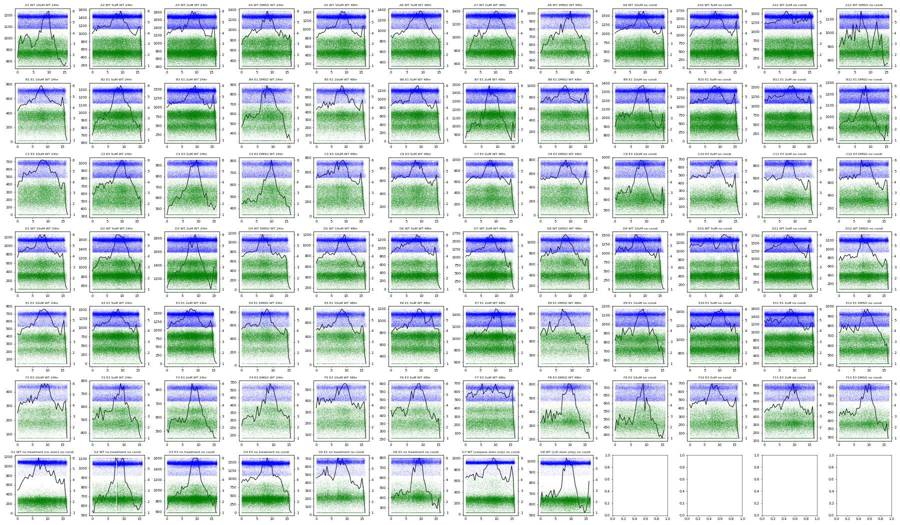
16
tool call · Bash
cd /task; cat > work/qc_grid.py <<'EOF'
import numpy as np, pandas as pd, matplotlib; matplotlib.use('Agg'); import matplotlib.pyplot as plt, sys
lay = pd.read_csv('/task/inputs/plate_layout.csv')
names=['Time', 'FSC-A', 'SSC-A', 'BL1-A', 'BL2-A', 'FSC-H', 'SSC-H', 'BL1-H', 'BL2-H', 'FSC-W', 'SSC-W', 'BL1-W', 'BL2-W']
def grid(x,y,fn,logx,logy,xr,yr,sub=None):
fig,axs=plt.subplots(7,12,figsize=(36,21))
for _,r in lay.iterrows():
d=pd.DataFrame(np.load(f'/task/work/{r.well}.npy'),columns=names)
if sub: d=sub(d)
ax=axs['ABCDEFG'.index(r.well[0]), int(r.well[1:])-1]
X=np.log10(np.clip(d[x],1,None)) if logx else d[x]
Y=np.log10(np.clip(d[y],1,None)) if logy else d[y]
ax.hist2d(X,Y,bins=150,range=[xr,yr],norm=matplotlib.colors.LogNorm(),cmap='viridis')
ax.set_title(f"{r.well} {r['sample']} {r.conditioned_media[:8]}",fontsize=9)
fig.suptitle(f'{x} vs {y}')
plt.tight_layout(); plt.savefig(fn,dpi=50); plt.close()
grid('FSC-A','SSC-A','/task/work/g_scatter.png',False,False,[0,1.05e6],[0,1.05e6])
grid('FSC-A','SSC-A','/task/work/g_scatter_log.png',True,True,[3.5,6.1],[2.5,6.1])
grid('FSC-A','FSC-H','/task/work/g_singlet.png',False,False,[0,1.05e6],[0,1.05e6])
grid('BL1-A','BL2-A','/task/work/g_fl.png',True,True,[1,6.1],[1,6.1])
EOF
python3 work/qc_grid.py17
tool output
(Bash completed with no output)
18
agent
Exploring the raw data first: metadata and acquisition-over-time checks look clean, now viewing scatter and fluorescence grids for all 80 wells before drawing gates.
19
tool call · Read
{
"file_path": "/task/work/g_scatter.png"
}20
tool output
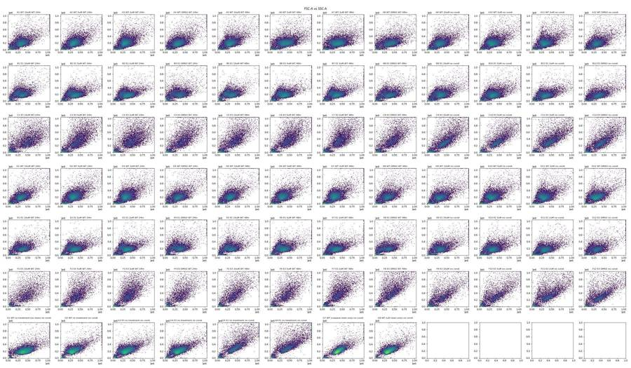
21
tool call · Read
{
"file_path": "/task/work/g_fl.png"
}22
tool output
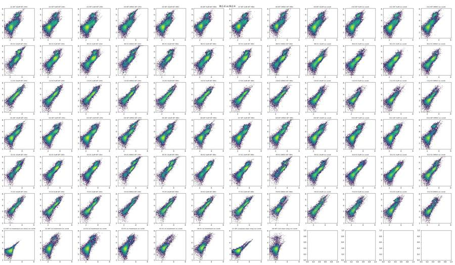
24
tool call · Bash
cd /task; cat > work/sel.py <<'EOF'
import numpy as np, pandas as pd, matplotlib; matplotlib.use('Agg'); import matplotlib.pyplot as plt, sys
lay = pd.read_csv('/task/inputs/plate_layout.csv').set_index('well')
names=['Time', 'FSC-A', 'SSC-A', 'BL1-A', 'BL2-A', 'FSC-H', 'SSC-H', 'BL1-H', 'BL2-H', 'FSC-W', 'SSC-W', 'BL1-W', 'BL2-W']
wells=sys.argv[2].split(',')
x,y=sys.argv[3],sys.argv[4]
mode=sys.argv[5]
n=len(wells); nc=4; nr=int(np.ceil(n/nc))
fig,axs=plt.subplots(nr,nc,figsize=(6*nc,5.5*nr)); axs=np.atleast_2d(axs)
def tf(v):
return np.arcsinh(v/150.)/np.log(10) if mode=='asinh' else v
for i,w in enumerate(wells):
d=pd.DataFrame(np.load(f'/task/work/{w}.npy'),columns=names)
if len(sys.argv)>6:
d=d.query(sys.argv[6])
ax=axs[i//nc,i%nc]
if mode=='asinh':
rng=[[-1,4.2],[-1,4.2]]
else:
rng=[[0,1.05e6],[0,1.05e6]]
ax.hist2d(tf(d[x]),tf(d[y]),bins=200,range=rng,norm=matplotlib.colors.LogNorm(),cmap='viridis')
ax.set_title(f"{w} {lay.loc[w,'sample']} | {lay.loc[w,'conditioned_media'][:8]} n={len(d)}")
if mode=='asinh':
ticks=[-100,0,100,1e3,1e4,1e5,1e6]
ax.set_xticks([tf(np.array(t)) for t in ticks]); ax.set_xticklabels(['-1e2','0','1e2','1e3','1e4','1e5','1e6'])
ax.set_yticks([tf(np.array(t)) for t in ticks]); ax.set_yticklabels(['-1e2','0','1e2','1e3','1e4','1e5','1e6'])
ax.grid(alpha=0.3)
ax.set_xlabel(x); ax.set_ylabel(y)
plt.tight_layout(); plt.savefig(sys.argv[1],dpi=55)
EOF
python3 work/sel.py work/s1.png G1,G7,G8,G2,A12,A9,D12,D9,B12,B9,B4,B1,C12,C9,C4,C1,G3,G4,G5,G6 BL1-A BL2-A asinh25
tool call · Read
{
"file_path": "/task/work/s1.png"
}26
tool output
(Bash completed with no output)
27
tool output
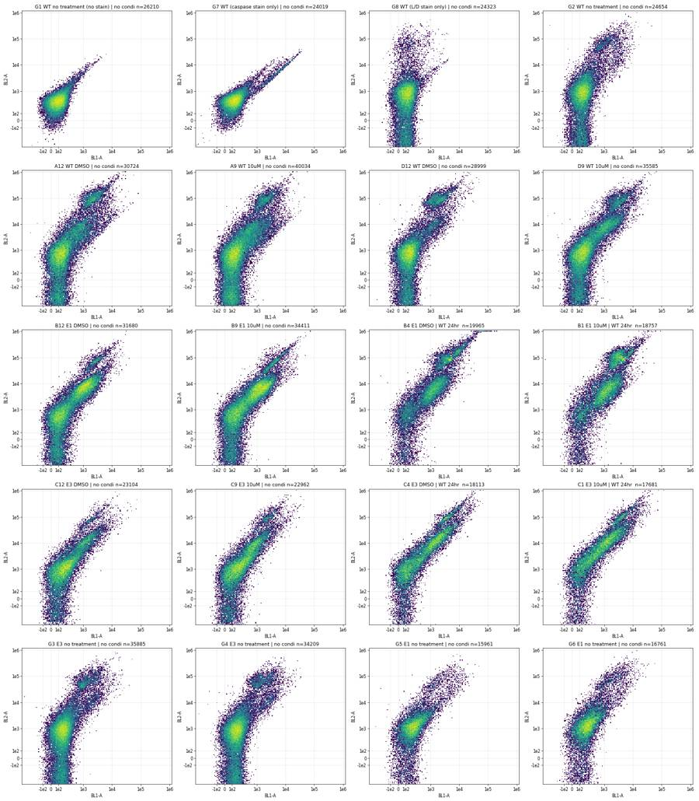
29
tool call · Read
{
"file_path": "/task/work/g_scatter_log.png"
}30
tool output
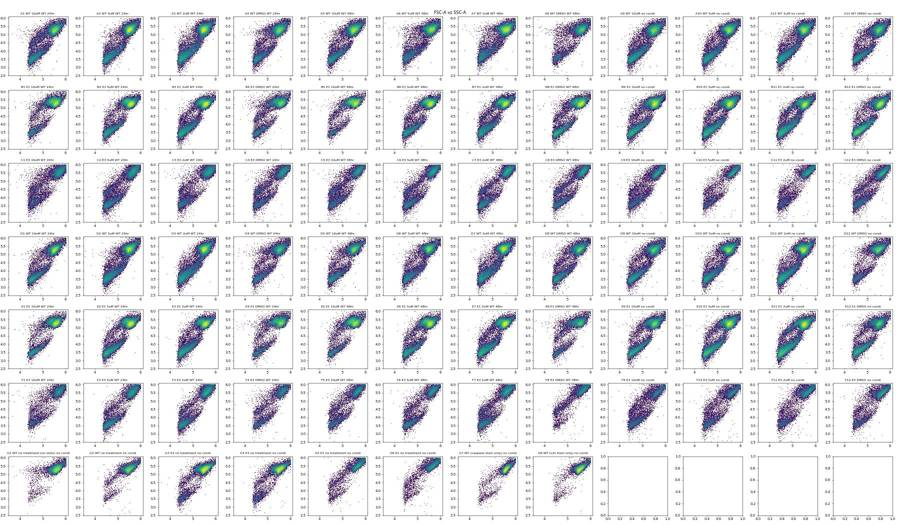
32
tool call · Read
{
"file_path": "/task/work/g_singlet.png"
}33
tool output
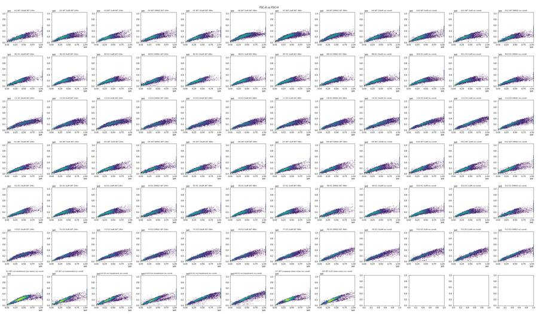
35
thinking
Three cell lines show distinct scatter and a likely G3/G4 ↔ G5/G6 label swap; I'm now quantifying spillover from the single-stain controls before fixing gates.
36
tool call · Bash
cd /task; cat > work/comp.py <<'EOF'
import numpy as np, pandas as pd
names=['Time', 'FSC-A', 'SSC-A', 'BL1-A', 'BL2-A', 'FSC-H', 'SSC-H', 'BL1-H', 'BL2-H', 'FSC-W', 'SSC-W', 'BL1-W', 'BL2-W']
L=lambda w: pd.DataFrame(np.load(f'/task/work/{w}.npy'),columns=names)
def cells(d): return d[(d['FSC-A']>1e5)&(d['SSC-A']>3e4)&(d['FSC-A']<1.04e6)&(d['SSC-A']<1.04e6)]
g1,g7,g8=cells(L('G1')),cells(L('G7')),cells(L('G8'))
for nm,d in [('G1 unst',g1),('G7 casp',g7),('G8 LD',g8)]:
print(nm,len(d),'BL1 pcts',np.percentile(d['BL1-A'],[1,5,25,50,75,95,99,99.9]).round(0),'BL2',np.percentile(d['BL2-A'],[1,5,25,50,75,95,99,99.9]).round(0))
# caspase spill BL1->BL2 : G7 bright events
for thr in [1000,3000,5000,10000]:
b=g7[g7['BL1-A']>thr]
neg=g7[g7['BL1-A']<300]
s=np.median((b['BL2-A']-neg['BL2-A'].median())/(b['BL1-A']-neg['BL1-A'].median()))
# robust regression
print('G7 thr',thr,len(b),'median ratio',round(s,3), 'polyfit',np.polyfit(b['BL1-A'],b['BL2-A'],1).round(3))
b=g1[g1['BL1-A']>thr]
if len(b)>5: print(' G1 same gate',len(b),'ratio',np.median((b['BL2-A']-neg['BL2-A'].median())/(b['BL1-A']-neg['BL1-A'].median())).round(3))
for thr in [1e4,3e4,1e5]:
b=g8[g8['BL2-A']>thr]; neg=g8[g8['BL2-A']<2000]
print('G8 thr',thr,len(b),'median ratio BL1/BL2',np.median((b['BL1-A']-neg['BL1-A'].median())/(b['BL2-A']-neg['BL2-A'].median())).round(4), 'BL1 med',b['BL1-A'].median(), 'neg BL1 med',neg['BL1-A'].median())
# frac of events in G1 vs G7 above BL1 thresholds
for thr in [500,1000,2000,3000,5000]:
print(thr, 'G1 %.2f G7 %.2f G8 %.2f'%tuple((d['BL1-A']>thr).mean()*100 for d in (g1,g7,g8)))
EOF
python3 work/comp.py37
tool output
G1 unst 24458 BL1 pcts [-93. -39. 38. 94. 154. 260. 401. 892.] BL2 [ 9. 100. 249. 372. 529. 1004. 1931. 4384.] G7 casp 22374 BL1 pcts [-6.8000e+01 -1.0000e+01 7.5000e+01 1.3900e+02 2.1800e+02 7.9000e+02 8.9080e+03 2.1684e+04] BL2 [ 26. 121. 281. 413. 600. 1720. 8372. 19799.] G8 LD 22973 BL1 pcts [-83. -26. 52. 111. 172. 281. 443. 870.] BL2 [-9.95000e+02 -5.20000e+02 1.01000e+02 5.58000e+02 1.13700e+03 6.67800e+03 7.43670e+04 2.21425e+05] G7 thr 1000 1015 median ratio 0.911 polyfit [ 0.896 513.259] G1 same gate 18 ratio 4.746 G7 thr 3000 626 median ratio 0.907 polyfit [ 0.915 262.764] G7 thr 5000 431 median ratio 0.907 polyfit [ 0.924 140.572] G7 thr 10000 186 median ratio 0.911 polyfit [ 0.937 -93.238] G8 thr 10000.0 970 median ratio BL1/BL2 0.0005 BL1 med 132.0 neg BL1 med 107.0 G8 thr 30000.0 620 median ratio BL1/BL2 0.0003 BL1 med 132.0 neg BL1 med 107.0 G8 thr 100000.0 123 median ratio BL1/BL2 0.0002 BL1 med 135.0 neg BL1 med 107.0 500 G1 0.50 G7 6.68 G8 0.66 1000 G1 0.07 G7 4.54 G8 0.07 2000 G1 0.00 G7 3.43 G8 0.01 3000 G1 0.00 G7 2.80 G8 0.00 5000 G1 0.00 G7 1.93 G8 0.00
39
tool call · Bash
cd /task; cat > work/clusters.py <<'EOF'
import numpy as np, pandas as pd, matplotlib; matplotlib.use('Agg'); import matplotlib.pyplot as plt, sys
lay = pd.read_csv('/task/inputs/plate_layout.csv').set_index('well')
names=['Time', 'FSC-A', 'SSC-A', 'BL1-A', 'BL2-A', 'FSC-H', 'SSC-H', 'BL1-H', 'BL2-H', 'FSC-W', 'SSC-W', 'BL1-W', 'BL2-W']
L=lambda w: pd.DataFrame(np.load(f'/task/work/{w}.npy'),columns=names)
wells=sys.argv[1].split(',')
fig,axs=plt.subplots(len(wells),5,figsize=(30,5.5*len(wells)))
tf=lambda v: np.arcsinh(v/150.)/np.log(10)
ticks=[-100,0,100,1e3,1e4,1e5,1e6]
for i,w in enumerate(wells):
d=L(w); d['BL2c']=d['BL2-A']-0.91*d['BL1-A']
# crude clusters on all events
dead=d['BL2c']>2.5e4
inter=(~dead)&(d['BL1-A']>600)
neg=(~dead)&(~inter)
ax=axs[i,0]
ax.hist2d(tf(d['BL1-A']),tf(d['BL2c']),bins=200,range=[[-1,4.2],[-1.5,4.2]],norm=matplotlib.colors.LogNorm())
ax.set_xticks([tf(np.array(t)) for t in ticks]); ax.set_xticklabels(['-1e2','0','1e2','1e3','1e4','1e5','1e6'])
ax.set_yticks([tf(np.array(t)) for t in ticks]); ax.set_yticklabels(['-1e2','0','1e2','1e3','1e4','1e5','1e6']); ax.grid(alpha=.3)
ax.set_title(f"{w} {lay.loc[w,'sample']} | {lay.loc[w,'conditioned_media'][:8]} ALL events; BL1 vs BL2comp")
for j,(nm,m) in enumerate([('neg',neg),('inter BL1>600',inter),('dead BL2c>2.5e4',dead)]):
ax=axs[i,j+1]
ax.hist2d(np.log10(d.loc[m,'FSC-A']),np.log10(np.clip(d.loc[m,'SSC-A'],100,None)),bins=150,range=[[4.3,6.05],[2.5,6.05]],norm=matplotlib.colors.LogNorm())
ax.set_title(f'{nm} n={m.sum()} ({100*m.mean():.1f}%) logFSC vs logSSC')
ax=axs[i,4]
c=d[(d['FSC-A']>1.2e5)&(d['SSC-A']>4e4)]
ax.hist2d(tf(c['BL1-A']),tf(c['BL2c']),bins=200,range=[[-1,4.2],[-1.5,4.2]],norm=matplotlib.colors.LogNorm())
ax.set_xticks([tf(np.array(t)) for t in ticks]); ax.set_xticklabels(['-1e2','0','1e2','1e3','1e4','1e5','1e6'])
ax.set_yticks([tf(np.array(t)) for t in ticks]); ax.set_yticklabels(['-1e2','0','1e2','1e3','1e4','1e5','1e6']); ax.grid(alpha=.3)
ax.set_title(f'cells (FSC>1.2e5,SSC>4e4) n={len(c)}')
plt.tight_layout(); plt.savefig(sys.argv[2],dpi=45)
EOF
python3 work/clusters.py G1,G7,G8,G2,A12,A9,B12,B4,C12,C4 work/c1.png40
tool call · Read
{
"file_path": "/task/work/c1.png"
}41
tool output
/usr/local/lib/python3.12/site-packages/pandas/core/arraylike.py:399: RuntimeWarning: invalid value encountered in log10 result = getattr(ufunc, method)(*inputs, **kwargs) /usr/local/lib/python3.12/site-packages/pandas/core/arraylike.py:399: RuntimeWarning: invalid value encountered in log10 result = getattr(ufunc, method)(*inputs, **kwargs) /usr/local/lib/python3.12/site-packages/pandas/core/arraylike.py:399: RuntimeWarning: invalid value encountered in log10 result = getattr(ufunc, method)(*inputs, **kwargs) /usr/local/lib/python3.12/site-packages/pandas/core/arraylike.py:399: RuntimeWarning: invalid value encountered in log10 result = getattr(ufunc, method)(*inputs, **kwargs) /usr/local/lib/python3.12/site-packages/pandas/core/arraylike.py:399: RuntimeWarning: invalid value encountered in log10 result = getattr(ufunc, method)(*inputs, **kwargs) /usr/local/lib/python3.12/site-packages/pandas/core/arraylike.py:399: RuntimeWarning: invalid value encountered in log10 result = getattr(ufunc, method)(*inputs, **kwargs) /usr/local/lib/python3.12/site-packages/pandas/core/arraylike.py:399: RuntimeWarning: invalid value encountered in log10 result = getattr(ufunc, method)(*inputs, **kwargs) /usr/local/lib/python3.12/site-packages/pandas/core/arraylike.py:399: RuntimeWarning: invalid value encountered in log10 result = getattr(ufunc, method)(*inputs, **kwargs) /usr/local/lib/python3.12/site-packages/pandas/core/arraylike.py:399: RuntimeWarning: invalid value encountered in log10 result = getattr(ufunc, method)(*inputs, **kwargs) /usr/local/lib/python3.12/site-packages/pandas/core/arraylike.py:399: RuntimeWarning: invalid value encountered in log10 result = getattr(ufunc, method)(*inputs, **kwargs) /usr/local/lib/python3.12/site-packages/pandas/core/arraylike.py:399: RuntimeWarning: invalid value encountered in log10 result = getattr(ufunc, method)(*inputs, **kwargs) /usr/local/lib/python3.12/site-packages/pandas/core/arraylike.py:399: RuntimeWarning: invalid value encountered in log10 result = getattr(ufunc, method)(*inputs, **kwargs) /usr/local/lib/python3.12/site-packages/pandas/core/arraylike.py:399: RuntimeWarning: invalid value encountered in log10 result = getattr(ufunc, method)(*inputs, **kwargs) /usr/local/lib/python3.12/site-packages/pandas/core/arraylike.py:399: RuntimeWarning: invalid value encountered in log10 result = getattr(ufunc, method)(*inputs, **kwargs) /usr/local/lib/python3.12/site-packages/pandas/core/arraylike.py:399: RuntimeWarning: invalid value encountered in log10 result = getattr(ufunc, method)(*inputs, **kwargs) /usr/local/lib/python3.12/site-packages/pandas/core/arraylike.py:399: RuntimeWarning: invalid value encountered in log10 result = getattr(ufunc, method)(*inputs, **kwargs) /usr/local/lib/python3.12/site-packages/pandas/core/arraylike.py:399: RuntimeWarning: invalid value encountered in log10 result = getattr(ufunc, method)(*inputs, **kwargs) /usr/local/lib/python3.12/site-packages/pandas/core/arraylike.py:399: RuntimeWarning: invalid value encountered in log10 result = getattr(ufunc, method)(*inputs, **kwargs) /usr/local/lib/python3.12/site-packages/pandas/core/arraylike.py:399: RuntimeWarning: invalid value encountered in log10 result = getattr(ufunc, method)(*inputs, **kwargs) /usr/local/lib/python3.12/site-packages/pandas/core/arraylike.py:399: RuntimeWarning: invalid value encountered in log10 result = getattr(ufunc, method)(*inputs, **kwargs) /usr/local/lib/python3.12/site-packages/pandas/core/arraylike.py:399: RuntimeWarning: invalid value encountered in log10 result = getattr(ufunc, method)(*inputs, **kwargs)
42
tool output
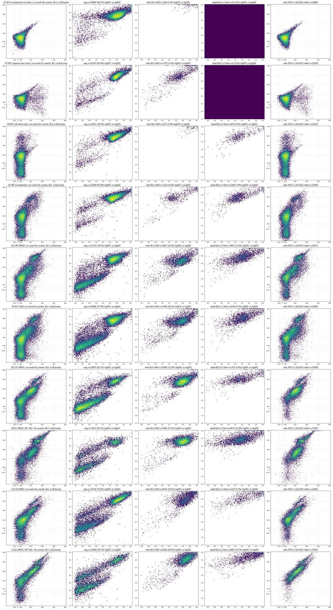
44
tool call · Bash
cd /task; cat > work/pool.py <<'EOF'
import numpy as np, pandas as pd, matplotlib; matplotlib.use('Agg'); import matplotlib.pyplot as plt
lay = pd.read_csv('/task/inputs/plate_layout.csv')
names=['Time', 'FSC-A', 'SSC-A', 'BL1-A', 'BL2-A', 'FSC-H', 'SSC-H', 'BL1-H', 'BL2-H', 'FSC-W', 'SSC-W', 'BL1-W', 'BL2-W']
L=lambda w: pd.DataFrame(np.load(f'/task/work/{w}.npy'),columns=names)
groups={'WT rows A,D':[w for w in lay.well if w[0] in 'AD'],'E1 rows B,E':[w for w in lay.well if w[0] in 'BE'],'E3 rows C,F':[w for w in lay.well if w[0] in 'CF'],'G1,2,7,8':['G1','G2','G7','G8'],'G3,G4':['G3','G4'],'G5,G6':['G5','G6']}
fig,axs=plt.subplots(4,6,figsize=(36,24))
for j,(g,ws) in enumerate(groups.items()):
d=pd.concat([L(w) for w in ws])
axs[0,j].hist2d(d['FSC-A'],d['SSC-A'],bins=250,range=[[0,1.05e6],[0,1.05e6]],norm=matplotlib.colors.LogNorm()); axs[0,j].set_title(g+' FSC-A vs SSC-A')
axs[1,j].hist2d(np.log10(d['FSC-A']),np.log10(np.clip(d['SSC-A'],100,None)),bins=250,range=[[4.3,6.05],[2.5,6.05]],norm=matplotlib.colors.LogNorm()); axs[1,j].set_title('log')
c=d[(d['FSC-A']>1.2e5)&(d['SSC-A']>4e4)]
axs[2,j].hist2d(c['FSC-A'],c['FSC-H'],bins=250,range=[[0,1.05e6],[0,0.7e6]],norm=matplotlib.colors.LogNorm()); axs[2,j].set_title('cells FSC-A vs FSC-H')
axs[3,j].hist2d(c['FSC-A'],c['FSC-W'],bins=250,range=[[0,1.05e6],[0,1024]],norm=matplotlib.colors.LogNorm()); axs[3,j].set_title('cells FSC-A vs FSC-W')
for a in axs[:,j]: a.grid(alpha=.4)
plt.tight_layout(); plt.savefig('/task/work/pool.png',dpi=45)
EOF
python3 work/pool.py45
tool call · Read
{
"file_path": "/task/work/pool.png"
}46
tool output
/usr/local/lib/python3.12/site-packages/pandas/core/arraylike.py:399: RuntimeWarning: invalid value encountered in log10 result = getattr(ufunc, method)(*inputs, **kwargs) /usr/local/lib/python3.12/site-packages/pandas/core/arraylike.py:399: RuntimeWarning: invalid value encountered in log10 result = getattr(ufunc, method)(*inputs, **kwargs) /usr/local/lib/python3.12/site-packages/pandas/core/arraylike.py:399: RuntimeWarning: invalid value encountered in log10 result = getattr(ufunc, method)(*inputs, **kwargs) /usr/local/lib/python3.12/site-packages/pandas/core/arraylike.py:399: RuntimeWarning: invalid value encountered in log10 result = getattr(ufunc, method)(*inputs, **kwargs) /usr/local/lib/python3.12/site-packages/pandas/core/arraylike.py:399: RuntimeWarning: invalid value encountered in log10 result = getattr(ufunc, method)(*inputs, **kwargs) /usr/local/lib/python3.12/site-packages/pandas/core/arraylike.py:399: RuntimeWarning: invalid value encountered in log10 result = getattr(ufunc, method)(*inputs, **kwargs)
47
tool output
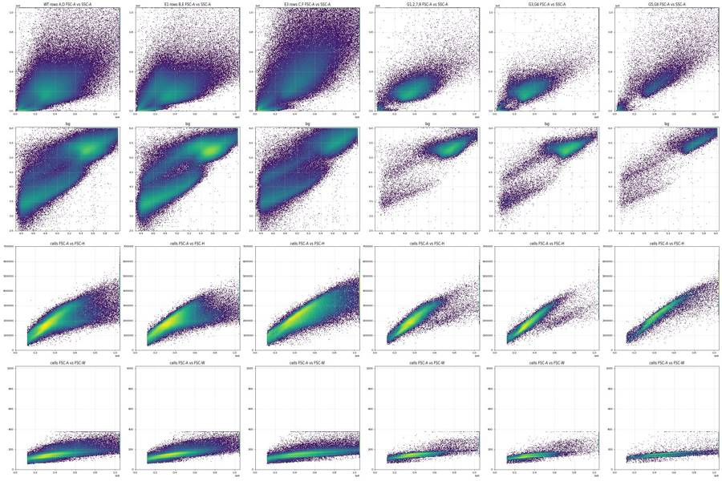
49
agent
Designing the gates now — computing the FSC-H/FSC-A singlet ridge and the fluorescence thresholds from pooled data and controls.
50
tool call · Bash
cd /task; cat > work/ridge.py <<'EOF'
import numpy as np, pandas as pd
lay = pd.read_csv('/task/inputs/plate_layout.csv')
names=['Time', 'FSC-A', 'SSC-A', 'BL1-A', 'BL2-A', 'FSC-H', 'SSC-H', 'BL1-H', 'BL2-H', 'FSC-W', 'SSC-W', 'BL1-W', 'BL2-W']
L=lambda w: pd.DataFrame(np.load(f'/task/work/{w}.npy'),columns=names)
groups={'WT':[w for w in lay.well if w[0] in 'AD'],'E1':[w for w in lay.well if w[0] in 'BE'],'E3':[w for w in lay.well if w[0] in 'CF'],'G1278':['G1','G2','G7','G8'],'G34':['G3','G4'],'G56':['G5','G6']}
bins=np.arange(1.3e5,1.05e6,1e5)
for g,ws in groups.items():
d=pd.concat([L(w) for w in ws]); c=d[(d['FSC-A']>1.3e5)&(d['SSC-A']>6e4)&(d['FSC-A']<1.04e6)&(d['SSC-A']<1.04e6)]
print(g,len(c))
for lo in bins:
s=c[(c['FSC-A']>=lo)&(c['FSC-A']<lo+1e5)]
r=s['FSC-H']/s['FSC-A']
h,e=np.histogram(r,bins=np.arange(0.15,0.75,0.025))
mode=e[np.argmax(h)]+0.0125
print(f' A {lo:.0f}: n={len(s):6d} H/A pct 2,10,25,50,75,90,98 =',np.percentile(r,[2,10,25,50,75,90,98]).round(3),'mode',round(mode,3),'W med',s['FSC-W'].median())
EOF
python3 work/ridge.py51
tool output
WT 561845 A 130000: n= 59477 H/A pct 2,10,25,50,75,90,98 = [0.374 0.445 0.489 0.558 0.655 0.73 0.818] mode 0.488 W med 116.0 A 230000: n=217256 H/A pct 2,10,25,50,75,90,98 = [0.413 0.465 0.501 0.544 0.588 0.624 0.679] mode 0.537 W med 130.0 A 330000: n=161968 H/A pct 2,10,25,50,75,90,98 = [0.382 0.442 0.485 0.528 0.566 0.597 0.645] mode 0.537 W med 146.0 A 430000: n= 71483 H/A pct 2,10,25,50,75,90,98 = [0.314 0.376 0.437 0.505 0.546 0.577 0.618] mode 0.537 W med 156.0 A 530000: n= 27775 H/A pct 2,10,25,50,75,90,98 = [0.271 0.31 0.366 0.461 0.513 0.543 0.575] mode 0.512 W med 165.0 A 630000: n= 11998 H/A pct 2,10,25,50,75,90,98 = [0.246 0.277 0.313 0.393 0.469 0.506 0.542] mode 0.288 W med 178.0 A 730000: n= 6119 H/A pct 2,10,25,50,75,90,98 = [0.221 0.254 0.291 0.347 0.427 0.479 0.518] mode 0.312 W med 193.0 A 830000: n= 3524 H/A pct 2,10,25,50,75,90,98 = [0.204 0.232 0.272 0.321 0.4 0.457 0.501] mode 0.288 W med 206.0 A 930000: n= 2095 H/A pct 2,10,25,50,75,90,98 = [0.19 0.217 0.256 0.301 0.365 0.427 0.473] mode 0.288 W med 222.0 A 1030000: n= 150 H/A pct 2,10,25,50,75,90,98 = [0.178 0.214 0.24 0.292 0.363 0.42 0.457] mode 0.238 W med 227.0 E1 456541 A 130000: n= 60352 H/A pct 2,10,25,50,75,90,98 = [0.364 0.461 0.535 0.606 0.666 0.718 0.793] mode 0.637 W med 116.0 A 230000: n=135837 H/A pct 2,10,25,50,75,90,98 = [0.404 0.474 0.519 0.567 0.609 0.64 0.679] mode 0.587 W med 138.0 A 330000: n=149035 H/A pct 2,10,25,50,75,90,98 = [0.383 0.437 0.48 0.527 0.567 0.596 0.629] mode 0.537 W med 150.0 A 430000: n= 68548 H/A pct 2,10,25,50,75,90,98 = [0.326 0.377 0.422 0.481 0.533 0.565 0.597] mode 0.512 W med 161.0 A 530000: n= 23872 H/A pct 2,10,25,50,75,90,98 = [0.276 0.318 0.363 0.431 0.494 0.534 0.569] mode 0.437 W med 172.0 A 630000: n= 9494 H/A pct 2,10,25,50,75,90,98 = [0.244 0.276 0.306 0.36 0.437 0.494 0.541] mode 0.312 W med 187.0 A 730000: n= 4950 H/A pct 2,10,25,50,75,90,98 = [0.224 0.249 0.276 0.315 0.372 0.44 0.503] mode 0.288 W med 210.0 A 830000: n= 2725 H/A pct 2,10,25,50,75,90,98 = [0.203 0.228 0.255 0.291 0.337 0.4 0.465] mode 0.288 W med 229.0 A 930000: n= 1609 H/A pct 2,10,25,50,75,90,98 = [0.193 0.216 0.241 0.276 0.319 0.378 0.442] mode 0.262 W med 243.0 A 1030000: n= 119 H/A pct 2,10,25,50,75,90,98 = [0.183 0.201 0.23 0.265 0.314 0.369 0.42 ] mode 0.262 W med 249.0 E3 233053 A 130000: n= 17881 H/A pct 2,10,25,50,75,90,98 = [0.327 0.419 0.495 0.603 0.701 0.774 0.853] mode 0.662 W med 118.0 A 230000: n= 31816 H/A pct 2,10,25,50,75,90,98 = [0.349 0.437 0.491 0.548 0.599 0.633 0.693] mode 0.587 W med 132.0 A 330000: n= 55946 H/A pct 2,10,25,50,75,90,98 = [0.363 0.432 0.485 0.538 0.575 0.598 0.629] mode 0.562 W med 146.0 A 430000: n= 51138 H/A pct 2,10,25,50,75,90,98 = [0.34 0.396 0.453 0.513 0.549 0.571 0.598] mode 0.537 W med 155.0 A 530000: n= 34498 H/A pct 2,10,25,50,75,90,98 = [0.307 0.365 0.422 0.482 0.523 0.545 0.571] mode 0.512 W med 162.0 A 630000: n= 20193 H/A pct 2,10,25,50,75,90,98 = [0.284 0.342 0.395 0.449 0.493 0.52 0.547] mode 0.488 W med 169.0 A 730000: n= 11436 H/A pct 2,10,25,50,75,90,98 = [0.26 0.318 0.369 0.421 0.469 0.5 0.53 ] mode 0.462 W med 176.0 A 830000: n= 6294 H/A pct 2,10,25,50,75,90,98 = [0.247 0.298 0.343 0.396 0.445 0.477 0.509] mode 0.412 W med 183.0 A 930000: n= 3572 H/A pct 2,10,25,50,75,90,98 = [0.23 0.279 0.32 0.377 0.427 0.457 0.49 ] mode 0.437 W med 191.0 A 1030000: n= 279 H/A pct 2,10,25,50,75,90,98 = [0.219 0.268 0.307 0.374 0.423 0.449 0.471] mode 0.412 W med 197.0 G1278 91606 A 130000: n= 5147 H/A pct 2,10,25,50,75,90,98 = [0.357 0.434 0.476 0.528 0.62 0.694 0.79 ] mode 0.488 W med 116.0 A 230000: n= 25477 H/A pct 2,10,25,50,75,90,98 = [0.415 0.456 0.488 0.53 0.581 0.62 0.676] mode 0.512 W med 130.0 A 330000: n= 34152 H/A pct 2,10,25,50,75,90,98 = [0.412 0.456 0.49 0.529 0.567 0.601 0.649] mode 0.537 W med 147.0 A 430000: n= 16626 H/A pct 2,10,25,50,75,90,98 = [0.386 0.445 0.487 0.526 0.558 0.588 0.632] mode 0.537 W med 154.0 A 530000: n= 6005 H/A pct 2,10,25,50,75,90,98 = [0.298 0.415 0.471 0.506 0.534 0.558 0.589] mode 0.512 W med 160.0 A 630000: n= 2102 H/A pct 2,10,25,50,75,90,98 = [0.261 0.297 0.392 0.466 0.498 0.521 0.547] mode 0.488 W med 169.0 A 730000: n= 1015 H/A pct 2,10,25,50,75,90,98 = [0.241 0.27 0.305 0.378 0.454 0.491 0.521] mode 0.288 W med 182.0 A 830000: n= 632 H/A pct 2,10,25,50,75,90,98 = [0.225 0.26 0.289 0.338 0.433 0.474 0.504] mode 0.288 W med 202.0 A 930000: n= 411 H/A pct 2,10,25,50,75,90,98 = [0.212 0.248 0.276 0.317 0.402 0.447 0.482] mode 0.288 W med 216.0 A 1030000: n= 39 H/A pct 2,10,25,50,75,90,98 = [0.197 0.239 0.276 0.295 0.36 0.434 0.466] mode 0.288 W med 249.0 G34 60554 A 130000: n= 5869 H/A pct 2,10,25,50,75,90,98 = [0.367 0.444 0.486 0.534 0.609 0.681 0.766] mode 0.512 W med 113.0 A 230000: n= 23770 H/A pct 2,10,25,50,75,90,98 = [0.43 0.471 0.498 0.528 0.562 0.596 0.638] mode 0.512 W med 123.0 A 330000: n= 18213 H/A pct 2,10,25,50,75,90,98 = [0.413 0.468 0.5 0.53 0.559 0.583 0.613] mode 0.537 W med 134.0 A 430000: n= 7982 H/A pct 2,10,25,50,75,90,98 = [0.346 0.458 0.5 0.531 0.554 0.573 0.598] mode 0.537 W med 144.0 A 530000: n= 2592 H/A pct 2,10,25,50,75,90,98 = [0.273 0.323 0.461 0.51 0.539 0.559 0.58 ] mode 0.537 W med 158.0 A 630000: n= 1044 H/A pct 2,10,25,50,75,90,98 = [0.259 0.281 0.312 0.443 0.506 0.531 0.564] mode 0.512 W med 170.0 A 730000: n= 561 H/A pct 2,10,25,50,75,90,98 = [0.241 0.276 0.3 0.339 0.461 0.5 0.539] mode 0.312 W med 198.0 A 830000: n= 308 H/A pct 2,10,25,50,75,90,98 = [0.214 0.248 0.277 0.313 0.365 0.445 0.49 ] mode 0.288 W med 216.0 A 930000: n= 199 H/A pct 2,10,25,50,75,90,98 = [0.205 0.24 0.274 0.308 0.372 0.441 0.482] mode 0.312 W med 223.0 A 1030000: n= 16 H/A pct 2,10,25,50,75,90,98 = [0.201 0.234 0.266 0.301 0.407 0.428 0.452] mode 0.262 W med 257.0 G56 24907 A 130000: n= 1368 H/A pct 2,10 … [1,147 more characters not shown]
53
tool call · Bash
cd /task; cat > work/hist.py <<'EOF'
import numpy as np, pandas as pd, matplotlib; matplotlib.use('Agg'); import matplotlib.pyplot as plt
from matplotlib.path import Path
lay = pd.read_csv('/task/inputs/plate_layout.csv')
names=['Time', 'FSC-A', 'SSC-A', 'BL1-A', 'BL2-A', 'FSC-H', 'SSC-H', 'BL1-H', 'BL2-H', 'FSC-W', 'SSC-W', 'BL1-W', 'BL2-W']
CELLS=[(1.3e5,6e4),(1.3e5,5e5),(4e5,1.04e6),(1.04e6,1.04e6),(1.04e6,1.5e5),(5e5,6e4)]
SING=[(1.2e5,4.3e4),(2.8e5,1.18e5),(4.8e5,1.97e5),(6.8e5,2.62e5),(8.8e5,3.08e5),(1.05e6,3.47e5),(1.05e6,6.4e5),(5e5,3.6e5),(1.2e5,1.15e5)]
def L(w):
d=pd.DataFrame(np.load(f'/task/work/{w}.npy'),columns=names); d['BL2c']=d['BL2-A']-0.91*d['BL1-A']
d['cells']=Path(CELLS).contains_points(d[['FSC-A','SSC-A']].values)
d['sing']=d.cells&Path(SING).contains_points(d[['FSC-A','FSC-H']].values)
return d
if __name__=='__main__':
tf=lambda v: np.arcsinh(np.asarray(v)/150.)/np.log(10)
ticks=[-100,0,100,300,1e3,3e3,1e4,3e4,1e5,1e6]
groups={'G1 unst':['G1'],'G7 casp only':['G7'],'G8 LD only':['G8'],'G2 WT nt':['G2'],'G3,4':['G3','G4'],'G5,6':['G5','G6'],
'WT noCM':[f'{r}{c}' for r in 'AD' for c in range(9,13)],'WT CM':[f'{r}{c}' for r in 'AD' for c in range(1,9)],
'E1 noCM':[f'{r}{c}' for r in 'BE' for c in range(9,13)],'E1 CM':[f'{r}{c}' for r in 'BE' for c in range(1,9)],
'E3 noCM':[f'{r}{c}' for r in 'CF' for c in range(9,13)],'E3 CM':[f'{r}{c}' for r in 'CF' for c in range(1,9)]}
fig,axs=plt.subplots(len(groups),3,figsize=(27,4*len(groups)))
for i,(g,ws) in enumerate(groups.items()):
d=pd.concat([L(w) for w in ws]); s=d[d.sing]
print(g,'events',len(d),'cells %.1f sing/cells %.1f'%(100*d.cells.mean(),100*d.sing.sum()/d.cells.sum()))
axs[i,0].hist(tf(s['BL1-A']),bins=300,range=(-1,4.2),histtype='step'); axs[i,0].set_title(g+' singlets BL1-A')
axs[i,1].hist(tf(s['BL2c']),bins=300,range=(-1.5,4.2),histtype='step'); axs[i,1].set_title(g+' singlets BL2 comp')
axs[i,2].hist2d(tf(s['BL1-A']),tf(s['BL2c']),bins=220,range=[[-1,4.2],[-1.5,4.2]],norm=matplotlib.colors.LogNorm())
axs[i,2].set_yticks(tf(ticks)); axs[i,2].set_yticklabels([f'{t:g}' for t in ticks])
for a in axs[i]:
a.set_xticks(tf(ticks)); a.set_xticklabels([f'{t:g}' for t in ticks]); a.grid(alpha=.4)
plt.tight_layout(); plt.savefig('/task/work/hist.png',dpi=45)
EOF
python3 work/hist.py54
tool call · Read
{
"file_path": "/task/work/hist.png"
}55
tool output
G1 unst events 26210 cells 92.5 sing/cells 96.9 G7 casp only events 24019 cells 92.7 sing/cells 94.2 G8 LD only events 24323 cells 93.9 sing/cells 95.0 G2 WT nt events 24654 cells 90.1 sing/cells 94.7 G3,4 events 70094 cells 86.4 sing/cells 95.3 G5,6 events 32722 cells 75.8 sing/cells 95.4 WT noCM events 302760 cells 63.9 sing/cells 90.8 WT CM events 549362 cells 66.9 sing/cells 91.2 E1 noCM events 288452 cells 56.4 sing/cells 88.4 E1 CM events 440326 cells 66.7 sing/cells 89.5 E3 noCM events 149496 cells 57.1 sing/cells 90.9 E3 CM events 287323 cells 50.8 sing/cells 84.9
56
tool output
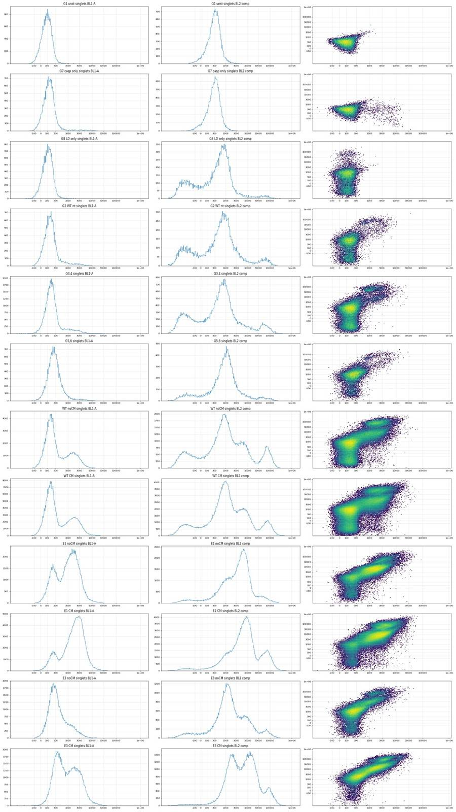
58
tool call · Bash
cd /task; cat > work/valley.py <<'EOF'
import numpy as np, pandas as pd, sys
sys.path.insert(0,'/task/work'); from hist import L
from scipy.ndimage import gaussian_filter1d
tf=lambda v: np.arcsinh(np.asarray(v)/150.)/np.log(10); inv=lambda u: 150*np.sinh(u*np.log(10))
groups={'G2':['G2'],'G34':['G3','G4'],'G56':['G5','G6'],
'WT noCM':[f'{r}{c}' for r in 'AD' for c in range(9,13)],'WT CM':[f'{r}{c}' for r in 'AD' for c in range(1,9)],
'E1 noCM':[f'{r}{c}' for r in 'BE' for c in range(9,13)],'E1 CM':[f'{r}{c}' for r in 'BE' for c in range(1,9)],
'E3 noCM':[f'{r}{c}' for r in 'CF' for c in range(9,13)],'E3 CM':[f'{r}{c}' for r in 'CF' for c in range(1,9)]}
for g,ws in groups.items():
s=pd.concat([L(w) for w in ws]); s=s[s.sing]
out=[g]
for col,lo,hi in [('BL1-A',250,1500),('BL2c',1e4,9e4)]:
h,e=np.histogram(tf(s[col]),bins=200,range=(-1,4.2)); hs=gaussian_filter1d(h.astype(float),2)
c=(e[:-1]+e[1:])/2; m=(c>tf(lo))&(c<tf(hi))
i=np.argmin(hs[m]); out.append(f'{col} valley {inv(c[m][i]):.0f} (depth {hs[m][i]/hs.max():.2f})')
print(' | '.join(out))
for w in ['G1','G8','G7']:
s=L(w); s=s[s.sing]
print(w,'BL1 pct 99,99.5,99.9',np.percentile(s['BL1-A'],[99,99.5,99.9]).round(0),'%>500,600,700,800',[(s['BL1-A']>t).mean().round(4)*100 for t in (500,600,700,800)], 'BL2c pct 95,99,99.9',np.percentile(s['BL2c'],[95,99,99.9]).round(0))
EOF
python3 work/valley.py; python3 -c "
import flowkit as fk, inspect
print(fk.__version__)
print(inspect.signature(fk.Matrix.__init__)); print(inspect.signature(fk.GatingStrategy.add_comp_matrix)); print(inspect.signature(fk.GatingStrategy.add_gate)); print(inspect.signature(fk.Dimension.__init__)); print(inspect.signature(fk.gates.PolygonGate.__init__)); print(inspect.signature(fk.gates.RectangleGate.__init__)); print(inspect.signature(fk.GatingStrategy.gate_sample))
"59
tool output
G2 | BL1-A valley 1496 (depth 0.04) | BL2c valley 19681 (depth 0.06) G34 | BL1-A valley 1496 (depth 0.07) | BL2c valley 25007 (depth 0.06) G56 | BL1-A valley 1496 (depth 0.04) | BL2c valley 25007 (depth 0.04) WT noCM | BL1-A valley 602 (depth 0.20) | BL2c valley 26550 (depth 0.10) WT CM | BL1-A valley 532 (depth 0.20) | BL2c valley 28188 (depth 0.11) E1 noCM | BL1-A valley 441 (depth 0.45) | BL2c valley 87915 (depth 0.07) E1 CM | BL1-A valley 413 (depth 0.22) | BL2c valley 29927 (depth 0.22) E3 noCM | BL1-A valley 1496 (depth 0.24) | BL2c valley 35815 (depth 0.10) E3 CM | BL1-A valley 923 (depth 0.62) | BL2c valley 54458 (depth 0.26) G1 BL1 pct 99,99.5,99.9 [365. 445. 788.] %>500,600,700,800 [0.35000000000000003, 0.22999999999999998, 0.13999999999999999, 0.09] BL2c pct 95,99,99.9 [ 772. 1380. 3139.] G8 BL1 pct 99,99.5,99.9 [418. 521. 843.] %>500,600,700,800 [0.59, 0.31, 0.18, 0.12] BL2c pct 95,99,99.9 [ 4012. 58114. 142716.] G7 BL1 pct 99,99.5,99.9 [ 5583. 8487. 13381.] %>500,600,700,800 [5.029999999999999, 4.390000000000001, 3.92, 3.61] BL2c pct 95,99,99.9 [ 754. 1317. 2735.] 1.2.3 (self, spill_data_or_file, detectors, fluorochromes=None, null_channels=None) (self, matrix_id, matrix) (self, gate, gate_path, sample_id=None) (self, dimension_id, compensation_ref='uncompensated', transformation_ref=None, range_min=None, range_max=None) (self, gate_name, dimensions, vertices, use_complement=False) (self, gate_name, dimensions, use_complement=False) (self, sample, cache_events=False, verbose=False)
61
tool call · Bash
cd /task; mkdir -p outputs; cat > work/gate.py <<'EOF'
import flowkit as fk, numpy as np, pandas as pd, warnings
warnings.filterwarnings('ignore')
lay = pd.read_csv('/task/inputs/plate_layout.csv')
CELLS=[(1.3e5,6e4),(1.3e5,5e5),(4e5,1.04e6),(1.04e6,1.04e6),(1.04e6,1.5e5),(5e5,6e4)]
SING=[(1.2e5,4.3e4),(2.8e5,1.18e5),(4.8e5,1.97e5),(6.8e5,2.62e5),(8.8e5,3.08e5),(1.05e6,3.47e5),(1.05e6,6.4e5),(5e5,3.6e5),(1.2e5,1.15e5)]
BL1_THR=600.; BL2_THR=3.0e4; SPILL=0.91
gs=fk.GatingStrategy()
m=fk.Matrix(np.array([[1.0,SPILL],[0.0,1.0]]),detectors=['BL1-A','BL2-A'],fluorochromes=['CellEvent_Casp37_Green','SYTOX_AADvanced'])
gs.add_comp_matrix('SingleStainComp',m)
U='uncompensated'; C='SingleStainComp'
gs.add_gate(fk.gates.PolygonGate('cells',[fk.Dimension('FSC-A',U),fk.Dimension('SSC-A',U)],CELLS),('root',))
gs.add_gate(fk.gates.PolygonGate('singlets',[fk.Dimension('FSC-A',U),fk.Dimension('FSC-H',U)],SING),('root','cells'))
gs.add_gate(fk.gates.RectangleGate('live',[fk.Dimension('BL2-A',C,range_max=BL2_THR)]),('root','cells','singlets'))
gs.add_gate(fk.gates.RectangleGate('caspase_pos',[fk.Dimension('BL1-A',C,range_min=BL1_THR)]),('root','cells','singlets','live'))
gs.add_gate(fk.gates.RectangleGate('dead',[fk.Dimension('BL2-A',C,range_min=BL2_THR)]),('root','cells','singlets'))
gs.add_gate(fk.gates.RectangleGate('caspase_pos_total',[fk.Dimension('BL1-A',C,range_min=BL1_THR)]),('root','cells','singlets'))
with open('/task/outputs/gates.xml','wb') as f: fk.export_gatingml(gs,f)
gs2=fk.parse_gating_xml('/task/outputs/gates.xml')
print(gs2.get_gate_ids())
POPS=[('cells','cells','all_events'),('singlets','singlets','cells'),('live','live','singlets'),('caspase_pos','marker_positive','live'),('dead','other','singlets'),('caspase_pos_total','other','singlets')]
rows=[]
for _,r in lay.iterrows():
s=fk.Sample('/task/inputs/raw/'+r.file)
res=gs2.gate_sample(s); rep=res.report.set_index('gate_name')
n=s.event_count; cnt={'all_events':n}
rows.append(dict(file=r.file,well=r.well,population='all_events',role='other',parent='none',count=n,pct_of_parent=''))
for p,role,par in POPS:
c=int(rep.loc[p,'count']); cnt[p]=c
assert c==int(res.get_gate_membership(p).sum())
rows.append(dict(file=r.file,well=r.well,population=p,role=role,parent=par,count=c,pct_of_parent=round(100*c/cnt[par],4) if cnt[par] else ''))
out=pd.DataFrame(rows,columns=['file','well','population','role','parent','count','pct_of_parent'])
out.to_csv('/task/outputs/counts.csv',index=False)
print(out.pivot(index='well',columns='population',values='count').loc[lay.well].to_string())
EOF
python3 work/gate.py; head -c 3000 outputs/gates.xml62
tool output
[('cells', ('root',)), ('singlets', ('root', 'cells')), ('live', ('root', 'cells', 'singlets')), ('caspase_pos', ('root', 'cells', 'singlets', 'live')), ('dead', ('root', 'cells', 'singlets')), ('caspase_pos_total', ('root', 'cells', 'singlets'))]
population all_events caspase_pos caspase_pos_total cells dead live singlets
well
A1 31328 3393 5137 19506 1813 15977 17790
A2 40169 5483 7335 27788 1945 23157 25102
A3 47337 5967 8187 30426 2389 25038 27427
A4 33079 5835 8041 22701 2237 18353 20590
A5 34963 5053 6990 24031 1983 19804 21787
A6 33431 4920 6657 24182 1799 20578 22377
A7 36445 5071 7214 26578 2203 22389 24592
A8 22867 3419 5043 16373 1647 13528 15175
A9 40034 4119 6128 23604 2034 19054 21088
A10 42298 4387 7199 27914 2874 22512 25386
A11 43376 4586 7613 27665 3095 22175 25270
A12 30724 3218 5250 18471 2044 14296 16340
B1 18757 6538 9864 13490 3329 8847 12176
B2 32477 12804 15491 22478 2693 17679 20372
B3 40067 15702 19241 26402 3548 20209 23757
B4 19965 6511 8914 12797 2405 8830 11235
B5 17852 7223 9856 13421 2633 9660 12293
B6 31705 12648 15530 22088 2887 17083 19970
B7 35417 13640 17308 23562 3673 17830 21503
B8 26222 9601 11519 16407 1918 12421 14339
B9 34411 10440 11478 21302 1038 17972 19010
B10 40098 12642 13311 24797 670 21424 22094
B11 41005 13275 14439 23374 1164 19770 20934
B12 31680 8046 8849 15629 803 12627 13430
C1 17681 4468 5549 9919 1082 7446 8528
C2 25455 5579 6720 12327 1143 9165 10308
C3 21098 4973 6025 12088 1057 9666 10723
C4 18113 3881 4754 9200 873 6483 7356
C5 18729 3421 4186 9107 765 6485 7250
C6 21716 4559 5295 10751 737 8092 8829
C7 22874 4511 5098 11646 587 9353 9940
C8 18604 3388 4128 9371 740 6767 7507
C9 22962 2885 3434 13217 552 11227 11779
C10 15794 1558 1842 9973 287 8838 9125
C11 19854 1801 2105 12870 313 11663 11976
C12 23104 2724 3074 13295 354 11525 11879
D1 29965 5742 7322 19212 1581 16223 17804
D2 42557 6466 8284 28166 1824 23955 25779
D3 44711 7220 9449 29035 2255 24257 26512
D4 26104 4981 6971 17185 1993 13395 15388
D5 28348 4059 5827 18594 1775 15123 16898
D6 32268 4656 6102 21603 1457 18108 19565
D7 38003 5091 7437 25598 2381 21176 23557
D8 27787 4008 6476 16745 2478 12414 14892
D9 35585 4634 6564 20372 1934 16064 17998
D10 38425 4436 7004 25145 2585 20501 23086
D11 43319 4804 7880 27672 3082 22454 25536
D12 28999 1784 3693 22658 1933 19096 21029
E1 18885 6942 8863 12808 1921 9388 11309
E2 35801 14461 17389 23748 2928 18412 21340
E3 39231 15106 18746 25385 3642 19075 22717
E4 18739 6453 9602 12927 3149 7887 11036
E5 18850 6123 9373 13032 3250 8003 11253
E6 32342 12404 16044 21485 3641 16000 19641
E7 38310 14943 17574 23844 2631 18973 21604
E8 15706 5510 7062 9775 1552 6826 8378
E9 29597 8496 9828 16685 1332 13097 14429
E10 41604 12382 13803 24546 1421 20393 21814
E11 43387 13784 14827 23200 1043 19579 20622
E12 26670 5628 6692 13021 1064 10297 11361
F1 11614 2101 3137 6209 1039 4445 5484
F2 18268 3285 4641 8230 1360 5711 7071
F3 19551 3342 4952 9795 1622 7042 8664
F4 11834 1984 3244 5670 1262 3460 4722
F5 14031 2181 3148 6566 969 4449 5418
F6 14662 2468 3581
… [4,218 more characters not shown]64
agent
Gates are saved and counts are written. Now checking the gates visually and computing per-well read-outs by condition.
65
tool call · Bash
cd /task; cat > work/metrics.py <<'EOF'
import numpy as np, pandas as pd
lay = pd.read_csv('/task/inputs/plate_layout.csv')
c=pd.read_csv('/task/outputs/counts.csv').pivot(index='well',columns='population',values='count')
m=lay.set_index('well').join(c)
m['cm']=m.conditioned_media.map({'WT 24hr conditioned media':'CM24','WT 48hr conditioned media':'CM48','no conditioned media':'none'})
m['pct_cells']=100*m.cells/m.all_events
m['pct_sing']=100*m.singlets/m.cells
m['pct_live']=100*m.live/m.singlets
m['casp_live']=100*m.caspase_pos/m.live
m['casp_total']=100*m.caspase_pos_total/m.singlets
m['dead']=100*m.dead/m.singlets
m['healthy']=100*(m.live-m.caspase_pos)/m.singlets
m.to_csv('/task/work/metrics.csv')
pd.set_option('display.width',250)
print(m[['sample','cm','all_events','singlets','pct_cells','pct_sing','pct_live','casp_live','casp_total','dead','healthy']].round(1).to_string())
for metric in ['casp_live','casp_total','dead','healthy','singlets']:
print('\n',metric)
t=m[m.index.str[0]!='G'].pivot_table(index=['cell_line','cm'],columns='camptothecin',values=metric,aggfunc=lambda x: ' / '.join(f'{v:.1f}' for v in x))
print(t[['DMSO','2uM','5uM','10uM']].to_string())
EOF
python3 work/metrics.py66
tool output
sample cm all_events singlets pct_cells pct_sing pct_live casp_live casp_total dead healthy well A1 WT 10uM CM24 31328 17790 62.3 91.2 89.8 21.2 28.9 10.2 70.7 A2 WT 5uM CM24 40169 25102 69.2 90.3 92.3 23.7 29.2 7.7 70.4 A3 WT 2uM CM24 47337 27427 64.3 90.1 91.3 23.8 29.9 8.7 69.5 A4 WT DMSO CM24 33079 20590 68.6 90.7 89.1 31.8 39.1 10.9 60.8 A5 WT 10uM CM48 34963 21787 68.7 90.7 90.9 25.5 32.1 9.1 67.7 A6 WT 5uM CM48 33431 22377 72.3 92.5 92.0 23.9 29.7 8.0 70.0 A7 WT 2uM CM48 36445 24592 72.9 92.5 91.0 22.6 29.3 9.0 70.4 A8 WT DMSO CM48 22867 15175 71.6 92.7 89.1 25.3 33.2 10.9 66.6 A9 WT 10uM none 40034 21088 59.0 89.3 90.4 21.6 29.1 9.6 70.8 A10 WT 5uM none 42298 25386 66.0 90.9 88.7 19.5 28.4 11.3 71.4 A11 WT 2uM none 43376 25270 63.8 91.3 87.8 20.7 30.1 12.2 69.6 A12 WT DMSO none 30724 16340 60.1 88.5 87.5 22.5 32.1 12.5 67.8 B1 E1 10uM CM24 18757 12176 71.9 90.3 72.7 73.9 81.0 27.3 19.0 B2 E1 5uM CM24 32477 20372 69.2 90.6 86.8 72.4 76.0 13.2 23.9 B3 E1 2uM CM24 40067 23757 65.9 90.0 85.1 77.7 81.0 14.9 19.0 B4 E1 DMSO CM24 19965 11235 64.1 87.8 78.6 73.7 79.3 21.4 20.6 B5 E1 10uM CM48 17852 12293 75.2 91.6 78.6 74.8 80.2 21.4 19.8 B6 E1 5uM CM48 31705 19970 69.7 90.4 85.5 74.0 77.8 14.5 22.2 B7 E1 2uM CM48 35417 21503 66.5 91.3 82.9 76.5 80.5 17.1 19.5 B8 E1 DMSO CM48 26222 14339 62.6 87.4 86.6 77.3 80.3 13.4 19.7 B9 E1 10uM none 34411 19010 61.9 89.2 94.5 58.1 60.4 5.5 39.6 B10 E1 5uM none 40098 22094 61.8 89.1 97.0 59.0 60.2 3.0 39.7 B11 E1 2uM none 41005 20934 57.0 89.6 94.4 67.1 69.0 5.6 31.0 B12 E1 DMSO none 31680 13430 49.3 85.9 94.0 63.7 65.9 6.0 34.1 C1 E3 10uM CM24 17681 8528 56.1 86.0 87.3 60.0 65.1 12.7 34.9 C2 E3 5uM CM24 25455 10308 48.4 83.6 88.9 60.9 65.2 11.1 34.8 C3 E3 2uM CM24 21098 10723 57.3 88.7 90.1 51.4 56.2 9.9 43.8 C4 E3 DMSO CM24 18113 7356 50.8 80.0 88.1 59.9 64.6 11.9 35.4 C5 E3 10uM CM48 18729 7250 48.6 79.6 89.4 52.8 57.7 10.6 42.3 C6 E3 5uM CM48 21716 8829 49.5 82.1 91.7 56.3 60.0 8.3 40.0 C7 E3 2uM CM48 22874 9940 50.9 85.4 94.1 48.2 51.3 5.9 48.7 C8 E3 DMSO CM48 18604 7507 50.4 80.1 90.1 50.1 55.0 9.9 45.0 C9 E3 10uM none 22962 11779 57.6 89.1 95.3 25.7 29.2 4.7 70.8 C10 E3 5uM none 15794 9125 63.1 91.5 96.9 17.6 20.2 3.1 79.8 C11 E3 2uM none 19854 11976 64.8 93.1 97.4 15.4 17.6 2.6 82.3 C12 E3 DMSO none 23104 11879 57.5 89.3 97.0 23.6 25.9 3.0 74.1 D1 WT 10uM CM24 29965 17804 64.1 92.7 91.1 35.4 41.1 8.9 58.9 D2 WT 5uM CM24 42557 25779 66.2 91.5 92.9 27.0 32.1 7.1 67.8 D3 WT 2uM CM24 44711 26512 64.9 91.3 91.5 29.8 35.6 8.5 64.3 D4 WT DMSO CM24 26104 15388 65.8 89.5 87.0 37.2 45.3 13.0 54.7 D5 WT 10uM CM48 28348 16898 65.6 90.9 89.5 26.8 34.5 10.5 65.5 D6 WT 5uM CM48 32268 19565 66.9 90.6 92.6 25.7 31.2 7.4 68.8 D7 WT 2uM CM48 38003 23557 67.4 92.0 89.9 24.0 31.6 10.1 68.3 D8 WT DMSO CM48 27787 14892 60.3 88.9 83.4 32.3 43.5 16.6 56.4 D9 … [8,661 more characters not shown]
68
tool call · Bash
cd /task; cat > work/ident.py <<'EOF'
import numpy as np, pandas as pd, sys
sys.path.insert(0,'/task/work'); from hist import L
lay = pd.read_csv('/task/inputs/plate_layout.csv')
rows=[]
for _,r in lay.iterrows():
d=L(r.well); s=d[d.sing]; h=s[(s.BL2c<3e4)&(s['BL1-A']<600)]
raw=d
rows.append(dict(well=r.well,label=r.cell_line,cm=r.conditioned_media[:7],n_h=len(h),fsc=h['FSC-A'].median(),ssc=h['SSC-A'].median(),ratio=(h['SSC-A']/h['FSC-A']).median(),
fsc_gt6e5=100*(h['FSC-A']>6e5).mean(), bl1=h['BL1-A'].median(), bl2=h['BL2-A'].median(), fscw=h['FSC-W'].median(), sscw=h['SSC-W'].median(),
sat=100*((raw['FSC-A']>=1.04e6)|(raw['SSC-A']>=1.04e6)).mean(), ev=len(d)))
f=pd.DataFrame(rows).set_index('well')
pd.set_option('display.width',250)
print(f.round(2).to_string())
print(f[~f.index.str.startswith('G')].groupby(['label']).agg(['mean','std']).round(2)[['fsc','ssc','ratio','fsc_gt6e5','bl1','sat','fscw']].to_string())
# nearest-centroid classification on log features using wells A-F
X=np.log(f[['fsc','ssc']]).assign(g=np.log(f.fsc_gt6e5+1), b=np.log(f.bl1))
tr=X[~X.index.str.startswith('G')]; lab=f.label[tr.index]
mu=tr.groupby(lab).mean(); sd=tr.std()
from itertools import product
for w in X.index:
dist=(((X.loc[w]-mu)/sd)**2).sum(axis=1)**.5
pred=dist.idxmin()
if pred!=f.label[w] or w.startswith('G'): print(w,'label',f.label[w],'pred',pred,dist.round(2).to_dict())
EOF
python3 work/ident.py69
tool output (error)
Exit code 1
label cm n_h fsc ssc ratio fsc_gt6e5 bl1 bl2 fscw sscw sat ev
well
A1 WT WT 24hr 12584 332006.5 193142.0 0.57 2.23 145.0 695.5 135.0 128.0 1.20 31328
A2 WT WT 24hr 17674 326991.5 203812.0 0.61 1.41 142.0 646.0 137.0 127.0 0.96 40169
A3 WT WT 24hr 19071 305445.0 205537.0 0.65 1.33 141.0 636.0 133.0 127.0 0.78 47337
A4 WT WT 24hr 12518 317929.0 189045.5 0.58 1.45 156.0 644.0 137.0 127.0 1.47 33079
A5 WT WT 48hr 14751 307776.0 197539.0 0.61 1.43 150.0 625.0 132.0 127.0 1.13 34963
A6 WT WT 48hr 15658 397529.5 209812.0 0.52 4.72 151.0 1112.0 147.0 128.0 1.52 33431
A7 WT WT 48hr 17318 387578.5 210268.5 0.54 4.59 148.0 1045.0 149.0 129.0 1.15 36445
A8 WT WT 48hr 10109 408516.0 203669.0 0.50 5.76 155.0 1113.0 147.0 128.0 2.04 22867
A9 WT no cond 14935 319503.0 186637.0 0.57 1.63 161.0 699.0 134.0 128.0 1.24 40034
A10 WT no cond 18125 320321.0 198960.0 0.59 2.30 150.0 594.0 133.0 128.0 1.21 42298
A11 WT no cond 17589 324574.0 199271.0 0.58 2.44 148.0 584.0 135.0 128.0 1.19 43376
A12 WT no cond 11078 321368.5 192101.0 0.58 1.56 160.0 763.0 133.0 127.0 1.31 30724
B1 E1 WT 24hr 2309 335721.0 180911.0 0.54 1.56 312.0 1264.0 140.0 125.0 0.60 18757
B2 E1 WT 24hr 4875 337879.0 190652.0 0.54 1.99 223.0 891.0 141.0 126.0 0.43 32477
B3 E1 WT 24hr 4507 337908.0 183225.0 0.53 1.42 237.0 1014.0 142.0 126.0 0.31 40067
B4 E1 WT 24hr 2319 345634.0 179082.0 0.52 2.29 280.0 1137.0 142.0 125.0 1.25 19965
B5 E1 WT 48hr 2437 327628.0 175914.0 0.53 2.17 290.0 1256.0 137.0 125.0 0.27 17852
B6 E1 WT 48hr 4435 333638.0 187576.0 0.55 1.51 235.0 1009.0 140.0 126.0 0.43 31705
B7 E1 WT 48hr 4190 344042.5 190464.0 0.55 1.96 248.0 1125.0 138.0 127.0 0.39 35417
B8 E1 WT 48hr 2820 339296.5 173266.5 0.50 1.31 252.0 1102.0 143.0 125.0 0.59 26222
B9 E1 no cond 7532 320083.0 185942.0 0.56 1.14 242.0 967.0 140.0 125.0 0.67 34411
B10 E1 no cond 8782 318568.0 189532.5 0.57 0.92 234.0 907.0 140.0 126.0 0.70 40098
B11 E1 no cond 6495 325146.0 173229.0 0.52 1.39 246.0 1019.0 139.0 125.0 0.49 41005
B12 E1 no cond 4581 337148.0 178978.0 0.51 1.53 263.0 1344.0 140.0 126.0 0.80 31680
C1 E3 WT 24hr 2978 466823.0 319081.0 0.69 21.26 324.5 2421.0 152.0 135.0 5.23 17681
C2 E3 WT 24hr 3586 396828.5 326107.5 0.81 9.37 329.0 1898.0 143.0 132.0 4.23 25455
C3 E3 WT 24hr 4693 440379.0 344879.0 0.77 15.09 306.0 2265.0 149.0 134.0 5.52 21098
C4 E3 WT 24hr 2602 377808.5 287656.0 0.77 8.49 320.0 1949.0 146.0 130.0 4.71 18113
C5 E3 WT 48hr 3064 409325.0 334970.0 0.80 10.80 324.0 1965.0 149.0 133.0 4.71 18729
C6 E3 WT 48hr 3533 404260.0 333033.0 0.81 10.87 328.0 2032.0 147.0 133.0 4.43 21716
C7 E3 WT 48hr 4842 394932.5 341887.0 0.85 7.29 313.0 1921.5 145.0 132.0 4.21 22874
C8 E3 WT 48hr 3379 413690.0 318949.0 0.77 12.13 318.0 1888.0 148.0 133.0 4.27 18604
C9 E3 no cond 8342 440263.0 293960.5 0.66 17.93 251.0 1259.0 150.0 135.0 5.57 22962
C10 E3 no cond 7280 466249.0 318468.5 0.68 21.13 242.0 1141.0 151.0 136.0 6.48 15794
C11 E3 no cond 9862 474437.5 337185.0 0.70 25.37 237.0 1077.0 147.0 138.0 7.69 19854
C12 E3 no cond 8801 437913.0 295202.0 0.67 16.52 227.0 1091.0 147.0 135.0 4.45 23104
D1 WT WT 24hr 10481 323190.0 198800.0 0.59 1.81 160.0 624.0 135.0 127.0 1.13 29965
D2 WT WT 24hr 17489 319816.0 223209.0 0.67 1.97 161.0 619.0 133.0 128.0 1.05 42557
D3 WT WT 24hr 17037 321665.0 224603.0 0.67 1.91 163.0 619.0 133.0 128.0 0.81 44711
D4 WT WT 24hr 8414 329008.0 200947.5 0.59 1.53 161.0 654.5 138.0 127.0 2.10 26104
D5 WT WT 48hr 11064 318792.0 212931.5 0.64 1.47 164.0 767.5 136.0 128.0 1.38 28348
D6 WT WT 48hr 13452 311869.5 226973.0 0.69 1.58 166.0 675.0 132.0 128.0 1.39 32268
D7 WT WT 48hr 16085 309882.0 231924.0 0.72 1.78 170.0 775.0 129.0 129.0 0.86 38003
D8 WT WT 48hr 8406 340434.5 213012.5 0.60 3.49 176.0 795.0 142.0 128.0 1.57 27787
D9 WT no cond 11430 316484.0 198882.0 0.60 2.10
... [4471 characters truncated] ...
usr/local/lib/python3.12/site-packages/pandas/core/groupby/groupby.py", line 2461, in <lambda>
alt=lambda x: Series(x, copy=False).mean(numeric_only=numeric_only),
^^^^^^^^^^^^^^^^^^^^^^^^^^^^^^^^^^^^^^^^^^^^^^^^^^^^^
File "/usr/local/lib/python3.12/site-packages/pandas/core/series.py", line 6570, in mean
return NDFrame.mean(self, axis, skipna, numeric_only, **kwargs)
^^^^^^^^^^^^^^^^^^^^^^^^^^^^^^^^^^^^^^^^^^^^^^^^^^^^^^^^
File "/usr/local/lib/python3.12/site-packages/pandas/core/generic.py", line 12485, in mean
return self._stat_function(
^^^^^^^^^^^^^^^^^^^^
File "/usr/local/lib/python3.12/site-packages/pandas/core/generic.py", line 12442, in _stat_function
return self._reduce(
^^^^^^^^^^^^^
File "/usr/local/lib/python3.12/site-packages/pandas/core/series.py", line 6478, in _reduce
return op(delegate, skipna=skipna, **kwds)
^^^^^^^^^^^^^^^^^^^^^^^^^^^^^^^^
… [4,039 more characters not shown]70
tool call · Bash
cd /task; sed -i 's/print(f.round(2).to_string())/print(f.round(2).iloc[44:].to_string())/; s/f\[~f.index.str.startswith(.G.)\].groupby(\[.label.\]).agg/f[~f.index.str.startswith("G")].drop(columns="cm").groupby(["label"]).agg/' work/ident.py; python3 work/ident.py 2>&1 | tail -6071
tool output
label cm n_h fsc ssc ratio fsc_gt6e5 bl1 bl2 fscw sscw sat ev
well
D9 WT no cond 11430 316484.0 198882.0 0.60 2.10 173.0 853.5 133.0 128.0 1.72 35585
D10 WT no cond 16065 308624.0 210472.0 0.65 1.97 170.0 645.0 128.0 128.0 1.16 38425
D11 WT no cond 17650 305616.5 209248.5 0.65 2.24 165.0 654.0 127.0 128.0 0.92 43319
D12 WT no cond 17312 313064.5 203605.0 0.62 1.86 148.0 541.5 128.0 128.0 1.87 28999
E1 E1 WT 24hr 2446 349421.5 191287.5 0.54 3.07 212.5 906.0 138.0 127.0 0.62 18885
E2 E1 WT 24hr 3951 330717.0 195600.0 0.57 1.14 230.0 918.0 136.0 127.0 0.46 35801
E3 E1 WT 24hr 3969 333578.0 197450.0 0.58 1.64 240.0 965.0 136.0 127.0 0.42 39231
E4 E1 WT 24hr 1434 352689.5 187252.5 0.54 2.51 230.0 919.0 139.0 127.0 1.20 18739
E5 E1 WT 48hr 1880 328812.0 186985.5 0.55 2.39 220.0 936.0 140.0 126.0 0.86 18850
E6 E1 WT 48hr 3596 324872.0 197827.5 0.60 0.97 246.0 1031.0 133.0 127.0 0.41 32342
E7 E1 WT 48hr 4030 326736.5 200388.0 0.61 1.17 247.0 1077.5 134.0 127.0 0.37 38310
E8 E1 WT 48hr 1316 313480.5 178491.5 0.58 1.44 260.5 1205.5 138.0 124.0 1.52 15706
E9 E1 no cond 4601 313351.0 189865.0 0.58 1.22 229.0 1030.0 138.0 126.0 1.18 29597
E10 E1 no cond 8011 314640.0 192946.0 0.59 0.91 218.0 858.0 136.0 126.0 0.75 41604
E11 E1 no cond 5795 312770.0 184511.0 0.57 0.86 237.0 935.0 137.0 126.0 0.51 43387
E12 E1 no cond 4669 319528.0 193028.0 0.57 1.39 196.0 854.0 132.0 127.0 1.08 26670
F1 E3 WT 24hr 2344 471251.5 346163.0 0.73 18.39 297.0 2137.5 151.0 135.0 4.82 11614
F2 E3 WT 24hr 2426 390337.5 320662.5 0.80 8.74 314.0 1735.5 146.0 132.0 3.74 18268
F3 E3 WT 24hr 3700 389433.0 334305.5 0.84 7.43 314.0 1708.0 140.0 132.0 3.78 19551
F4 E3 WT 24hr 1476 394270.0 317226.0 0.79 10.57 328.0 1846.5 142.0 132.0 5.03 11834
F5 E3 WT 48hr 2268 423701.5 348652.0 0.81 13.67 312.0 1842.0 145.0 134.0 3.97 14031
F6 E3 WT 48hr 2102 400967.0 343050.0 0.83 10.47 322.0 1930.5 145.0 133.0 3.72 14662
F7 E3 WT 48hr 3296 396116.0 349750.0 0.85 8.83 331.0 2061.0 143.0 132.5 4.01 19376
F8 E3 WT 48hr 6162 467804.5 418685.5 0.87 22.20 286.0 1750.0 146.0 137.0 9.66 13717
F9 E3 no cond 3358 416233.0 290288.5 0.69 17.09 265.0 1777.0 147.0 134.0 6.47 16566
F10 E3 no cond 4909 438287.0 310627.0 0.70 20.29 248.0 1652.0 145.0 136.0 7.46 16796
F11 E3 no cond 7988 442075.5 325934.0 0.71 20.28 228.0 1269.0 136.0 136.0 7.27 18768
F12 E3 no cond 7021 431460.0 300879.0 0.68 19.03 205.0 1000.0 136.0 135.0 5.16 15652
G1 WT no cond 23452 404760.5 201592.5 0.50 6.50 92.0 365.0 145.0 129.0 2.03 26210
G2 WT no cond 19286 316833.5 204376.0 0.62 2.50 142.0 617.0 128.0 129.0 2.46 24654
G3 E3 no cond 26253 335380.0 203814.0 0.59 2.25 164.0 571.0 130.0 129.0 1.27 35885
G4 E3 no cond 24886 337241.5 202771.0 0.58 2.13 164.0 560.5 131.0 129.0 1.21 34209
G5 E1 no cond 10238 462002.5 314358.5 0.67 19.78 218.0 954.0 150.0 136.0 7.71 15961
G6 E1 no cond 10845 463327.0 316016.0 0.67 24.59 226.0 1065.0 146.0 136.0 9.41 16761
G7 WT no cond 20050 390611.5 198246.0 0.51 3.35 129.0 390.0 153.0 131.0 1.52 24019
G8 WT no cond 21223 347989.0 204328.0 0.57 3.37 108.0 516.0 141.0 130.0 1.69 24323
fsc ssc ratio fsc_gt6e5 bl1 sat fscw
mean std mean std mean std mean std mean std mean std mean std
label
E1 330137.00 11691.17 186850.19 7714.35 0.55 0.03 1.58 0.57 242.83 25.23 0.68 0.34 138.29 2.80
E3 424368.56 29950.96 327400.06 27265.70 0.76 0.07 14.72 5.46 290.40 40.48 5.27 1.51 145.67 4.17
WT 328666.02 28184.56 206016.75 11880.17 0.61 0.05 2.27 1.17 157.67 9.88 1.30 0.36 135.25 5.86
G1 label WT pred WT {'E1': 4.02, 'E3': 4.62, 'WT': 2.69}
G2 label WT pred WT {'E1': 2.01, 'E3': 4.17, 'WT': 0.47}
G3 label E3 pred WT {'E1': 1.48, 'E3': 3.7, 'WT': 0.24}
G4 label E3 pred WT {'E1': 1.47, 'E3': 3.72, 'WT': 0.27}
G5 label E1 pred E3 {'E1': 4.09, 'E3': 1.26, 'WT': 3.95}
G6 label E1 pred E3 {'E1': 4.26, 'E3': 1.28, 'WT': 4.16}
G7 label WT pred WT {'E1': 2.67, 'E3': 3.83, 'WT': 1.54}
G8 label WT pred WT {'E1': 3.03, 'E3': 4.48, 'WT': 1.48}73
tool call · Bash
cd /task; cat > work/sens.py <<'EOF'
import numpy as np, pandas as pd, sys
sys.path.insert(0,'/task/work'); from hist import L
lay = pd.read_csv('/task/inputs/plate_layout.csv')
m=pd.read_csv('/task/work/metrics.csv').set_index('well')
rows=[]
for _,r in lay.iterrows():
d=L(r.well); s=d[d.sing]
assert d.cells.sum()==m.loc[r.well,'cells'] and len(s)==m.loc[r.well,'singlets'], r.well
live=s[s.BL2c<3e4]; assert len(live)==m.loc[r.well,'live'], (r.well,len(live))
assert (live['BL1-A']>=600).sum()==m.loc[r.well,'caspase_pos']
o=dict(well=r.well)
for b1 in (450,600,800,1000):
for b2 in (2e4,3e4,5e4):
lv=s[s.BL2c<b2]; o[f'b1_{b1}_b2_{b2:.0f}']=100*(lv['BL1-A']>=b1).mean()
# uncompensated variant
lv=s[s['BL2-A']<3e4]; o['uncomp']=100*(lv['BL1-A']>=600).mean()
# off-scale
o['off_fsc']=100*(d['FSC-A']>=1048575).mean(); o['off_ssc']=100*(d['SSC-A']>=1048575).mean(); o['off_any']=100*((d['FSC-A']>=1048575)|(d['SSC-A']>=1048575)).mean(); o['off_bl2']=100*(d['BL2-A']>=1048575).mean(); o['off_bl1']=100*(d['BL1-A']>=1048575).mean()
t=np.sort(d.Time.values)/1000; o['maxgap_s']=np.diff(t).max(); o['dur']=t.max()
rows.append(o)
s=pd.DataFrame(rows).set_index('well'); s.to_csv('/task/work/sens.csv')
print('numpy == flowkit counts OK')
j=m.join(s); j=j[j.index.str[0]!='G']
print(j.groupby(['cell_line','cm'])[[c for c in s.columns if c.startswith('b1_') or c=='uncomp']].mean().round(1).T.to_string())
pd.set_option('display.width',200)
print(s[['off_fsc','off_ssc','off_any','off_bl2','off_bl1','maxgap_s','dur']].round(2).sort_values('off_any').to_string())
EOF
python3 work/sens.py74
tool output
numpy == flowkit counts OK
cell_line E1 E3 WT
cm CM24 CM48 none CM24 CM48 none CM24 CM48 none
b1_450_b2_20000 79.5 80.1 66.9 61.4 53.7 28.6 30.9 27.7 23.5
b1_450_b2_30000 80.3 80.9 67.6 64.7 57.3 30.1 31.9 28.8 24.4
b1_450_b2_50000 81.3 82.0 68.5 66.6 59.4 31.6 33.3 30.4 26.0
b1_600_b2_20000 75.5 76.0 61.5 51.1 41.9 19.9 27.8 24.7 19.8
b1_600_b2_30000 76.4 77.0 62.3 55.2 46.4 21.6 28.7 25.8 20.7
b1_600_b2_50000 77.6 78.3 63.3 57.6 49.1 23.2 30.1 27.4 22.4
b1_800_b2_20000 69.3 70.0 53.9 42.3 32.7 13.8 24.3 21.5 16.3
b1_800_b2_30000 70.4 71.2 54.9 47.1 37.9 15.6 25.2 22.7 17.2
b1_800_b2_50000 71.9 72.8 56.0 49.9 40.9 17.2 26.6 24.2 18.9
b1_1000_b2_20000 62.8 63.8 46.6 36.0 27.1 10.2 21.1 18.8 13.6
b1_1000_b2_30000 64.1 65.2 47.6 41.2 32.6 11.9 22.1 19.9 14.4
b1_1000_b2_50000 65.8 67.1 49.0 44.3 35.8 13.6 23.4 21.3 16.0
uncomp 76.1 76.7 62.1 54.3 45.4 21.4 28.5 25.5 20.5
off_fsc off_ssc off_any off_bl2 off_bl1 maxgap_s dur
well
B5 0.18 0.12 0.26 0.00 0.0 0.04 16.77
B3 0.27 0.09 0.31 0.00 0.0 0.01 16.74
E7 0.33 0.09 0.36 0.00 0.0 0.00 16.81
B7 0.32 0.11 0.38 0.00 0.0 0.01 15.88
E3 0.35 0.10 0.40 0.00 0.0 0.06 16.09
E6 0.32 0.15 0.40 0.00 0.0 0.01 16.71
B6 0.35 0.14 0.41 0.00 0.0 0.04 16.66
B2 0.36 0.13 0.42 0.00 0.0 0.01 15.83
E2 0.38 0.14 0.44 0.00 0.0 0.05 16.50
B11 0.44 0.13 0.48 0.00 0.0 0.02 16.83
E11 0.46 0.14 0.50 0.00 0.0 0.01 16.69
B1 0.28 0.39 0.56 0.04 0.0 0.03 16.70
B8 0.47 0.29 0.59 0.01 0.0 0.02 16.72
E1 0.55 0.24 0.61 0.01 0.0 0.03 16.73
B9 0.59 0.24 0.65 0.00 0.0 0.01 15.81
B10 0.60 0.33 0.68 0.00 0.0 0.03 16.70
E10 0.69 0.23 0.73 0.00 0.0 0.00 16.78
A3 0.43 0.61 0.76 0.00 0.0 0.01 16.85
B12 0.72 0.27 0.77 0.00 0.0 0.01 15.94
D3 0.49 0.61 0.78 0.00 0.0 0.00 15.94
E5 0.59 0.53 0.83 0.04 0.0 0.03 16.60
D7 0.60 0.62 0.84 0.00 0.0 0.14 16.37
D11 0.60 0.64 0.90 0.00 0.0 0.06 16.34
A2 0.57 0.69 0.95 0.00 0.0 0.01 16.71
D2 0.71 0.78 1.01 0.00 0.0 0.00 16.82
E12 0.92 0.63 1.06 0.04 0.0 0.01 16.81
A5 0.70 0.82 1.10 0.00 0.0 0.04 16.75
D1 0.78 0.79 1.11 0.00 0.0 0.07 16.62
A7 0.82 0.64 1.13 0.00 0.0 0.01 16.84
D10 0.85 0.81 1.13 0.01 0.0 0.02 16.16
A11 0.85 0.74 1.17 0.00 0.0 0.01 16.62
E9 1.08 0.53 1.17 0.00 0.0 0.01 15.91
A1 0.85 0.77 1.18 0.01 0.0 0.01 15.98
E4 0.72 0.83 1.19 0.14 0.0 0.11 15.96
G4 1.14 0.54 1.20 0.00 0.0 0.11 16.60
A10 0.95 0.72 1.20 0.00 0.0 0.01 16.65
A9 0.92 0.79 1.22 0.01 0.0 0.01 16.67
B4 0.63 1.00 1.23 0.32 0.0 0.02 15.88
G3 1.18 0.54 1.25 0.00 0.0 0.02 16.80
A12 0.97 0.90 1.29 0.02 0.0 0.02 15.96
D6 1.09 1.00 1.37 0.00 0.0 0.08 16.51
D5 1.05 1.02 1.37 0.01 0.0 0.01 16.77
A4 0.95 1.08 1.43 0.02 0.0 0.01 16.63
A6 1.14 0.80 1.47 0.01 0.0 0.01 15.66
G7 1.12 1.09 1.49 0.00 0.0 0.03 16.32
E8 1.02 1.11 1.50 0.12 0.0 0.03 15.87
D8 1.08 1.18 1.55 0.03 0.0 0.02 16.81
G8 1.27 1.09 1.66 0.00 0.0 0.02 16.43
D9 1.43 1.00 1.69 0.00 0.0 0.39 16.73
D12 1.43 1.30 1.84 0.00 0.0 0.02 16.77
A8 1.51 1.30 1.98 0.05 0.0 0.01 15.83
G1 1.72 1.06 1.99 0.00 0.0 0.03 16.63
D4 1.61 1.57 2.08 0.05 0.0 0.12 16.80
G2 2.11 1.40 2.42 0.00 0.0 0.09 15.90
F2 1.33 3.25 3.62 0.02 0.0 0.01 15.92
F6 1.56 3.29 3.67 0.00 0.0 0.01 15.80
F3 1.21 3.35 3.69 0.01 0.0 0.01 15.94
F5 1.56 3.51 3.89 0.03 0.0 0.01 16.70
F7 1.55 3.48 3.92 0.01 0.0 0.03 16.72
C7 1.73 3.59 4.09 0.00 0.0 0.03 16.59
C2 1.88 3.58 4.16 0.00 0.0 0.01 16.79
C8 1.73 3.68 4.17 0.02 0.0 0.06 16.60
C6 1.98 3.81 4.33 0.00 0.0 0.05 16.47
C12 2.61 3.51 4.37 0.00 0.0 0.01 16.73
C4 1.99 4.10 4.62 0.02 0.0 0.01 16.82
C5 1.83 4.28 4.63 0.02 0.0 0.09 16.83
F1 2.20 3.72 4.65 0.00 0.0 0.02 16.69
F4 1.82 4.43 4.89 0.00 0.0 0.01 15.82
F12 2.87 4.07 5.05 0.01 0.0 0.01 16.84
C1 2.99 3.63 5.14 0.01 0.0 0.03 16.52
C3 3.05 3.75 5.34 0.00 0.0 0.01 15.90
C9 3.32
… [585 more characters not shown]76
agent
Counts verified against an independent calculation and the result is robust to threshold choice. Now checking the gates visually, then writing the flags, summary, figure and report.
77
tool call · Bash
cd /task; cat > work/overlay.py <<'EOF'
import numpy as np, pandas as pd, matplotlib; matplotlib.use('Agg'); import matplotlib.pyplot as plt, sys
sys.path.insert(0,'/task/work'); from hist import L, CELLS, SING
lay = pd.read_csv('/task/inputs/plate_layout.csv').set_index('well')
wells=['G1','G7','G8','G2','A12','A4','B12','B4','C12','C4','F8','G5']
tf=lambda v: np.arcsinh(np.asarray(v)/150.)/np.log(10); ticks=[-100,0,100,1e3,1e4,1e5,1e6]
fig,axs=plt.subplots(len(wells),4,figsize=(24,5.2*len(wells)))
for i,w in enumerate(wells):
d=L(w)
ax=axs[i,0]; ax.hist2d(d['FSC-A'],d['SSC-A'],bins=200,range=[[0,1.05e6],[0,1.05e6]],norm=matplotlib.colors.LogNorm())
p=np.array(CELLS+[CELLS[0]]); ax.plot(p[:,0],p[:,1],'r-'); ax.set_title(f"{w} {lay.loc[w,'sample']} {lay.loc[w,'conditioned_media'][:8]} cells {100*d.cells.mean():.1f}%")
ax=axs[i,1]; ax.hist2d(np.log10(d['FSC-A']),np.log10(np.clip(d['SSC-A'],300,None)),bins=200,range=[[4.3,6.05],[2.5,6.05]],norm=matplotlib.colors.LogNorm())
ax.plot(np.log10(p[:,0]),np.log10(p[:,1]),'r-'); ax.set_title('log scatter')
c=d[d.cells]; ax=axs[i,2]; ax.hist2d(c['FSC-A'],c['FSC-H'],bins=200,range=[[0,1.05e6],[0,0.7e6]],norm=matplotlib.colors.LogNorm())
p=np.array(SING+[SING[0]]); ax.plot(p[:,0],p[:,1],'r-'); ax.set_title(f'singlets {100*d.sing.sum()/d.cells.sum():.1f}%')
s=d[d.sing]; ax=axs[i,3]; ax.hist2d(tf(s['BL1-A']),tf(s['BL2c']),bins=200,range=[[-1,4.2],[-1.5,4.2]],norm=matplotlib.colors.LogNorm())
ax.axhline(tf(3e4),c='r'); ax.plot([tf(600)]*2,[-1.5,tf(3e4)],'r-')
ax.set_xticks(tf(ticks)); ax.set_xticklabels([f'{t:g}' for t in ticks]); ax.set_yticks(tf(ticks)); ax.set_yticklabels([f'{t:g}' for t in ticks])
lv=s[s.BL2c<3e4]; ax.set_title(f'live {100*len(lv)/len(s):.1f}% casp+ of live {100*(lv["BL1-A"]>=600).mean():.1f}%')
plt.tight_layout(); plt.savefig('/task/work/overlay.png',dpi=40)
EOF
python3 work/overlay.py78
tool call · Read
{
"file_path": "/task/work/overlay.png"
}79
tool output
/usr/local/lib/python3.12/site-packages/pandas/core/arraylike.py:399: RuntimeWarning: invalid value encountered in log10 result = getattr(ufunc, method)(*inputs, **kwargs) /usr/local/lib/python3.12/site-packages/pandas/core/arraylike.py:399: RuntimeWarning: invalid value encountered in log10 result = getattr(ufunc, method)(*inputs, **kwargs) /usr/local/lib/python3.12/site-packages/pandas/core/arraylike.py:399: RuntimeWarning: invalid value encountered in log10 result = getattr(ufunc, method)(*inputs, **kwargs) /usr/local/lib/python3.12/site-packages/pandas/core/arraylike.py:399: RuntimeWarning: invalid value encountered in log10 result = getattr(ufunc, method)(*inputs, **kwargs) /usr/local/lib/python3.12/site-packages/pandas/core/arraylike.py:399: RuntimeWarning: invalid value encountered in log10 result = getattr(ufunc, method)(*inputs, **kwargs) /usr/local/lib/python3.12/site-packages/pandas/core/arraylike.py:399: RuntimeWarning: invalid value encountered in log10 result = getattr(ufunc, method)(*inputs, **kwargs) /usr/local/lib/python3.12/site-packages/pandas/core/arraylike.py:399: RuntimeWarning: invalid value encountered in log10 result = getattr(ufunc, method)(*inputs, **kwargs) /usr/local/lib/python3.12/site-packages/pandas/core/arraylike.py:399: RuntimeWarning: invalid value encountered in log10 result = getattr(ufunc, method)(*inputs, **kwargs) /usr/local/lib/python3.12/site-packages/pandas/core/arraylike.py:399: RuntimeWarning: invalid value encountered in log10 result = getattr(ufunc, method)(*inputs, **kwargs) /usr/local/lib/python3.12/site-packages/pandas/core/arraylike.py:399: RuntimeWarning: invalid value encountered in log10 result = getattr(ufunc, method)(*inputs, **kwargs) /usr/local/lib/python3.12/site-packages/pandas/core/arraylike.py:399: RuntimeWarning: invalid value encountered in log10 result = getattr(ufunc, method)(*inputs, **kwargs) /usr/local/lib/python3.12/site-packages/pandas/core/arraylike.py:399: RuntimeWarning: invalid value encountered in log10 result = getattr(ufunc, method)(*inputs, **kwargs)
80
tool output
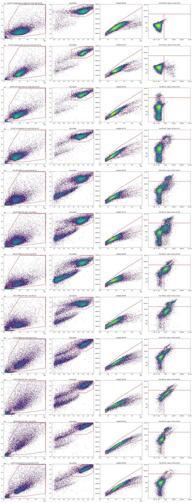
82
tool call · Skill
{
"skill": "dataviz"
}83
tool output
Launching skill: dataviz
84
tool call · Bash
cd /tmp/claude-0/bundled-skills/2.1.322/8a6f314bcee153114f37cabdd5d4eebd/dataviz; cat references/palette.md | head -120; echo ----; sed -n 1,80p references/choosing-a-form.md
85
tool output
# Reference palette
This is the **reference instance** of the data-viz method: every parameter the
method needs, filled in with a validated default palette. The rest of the skill
is system-agnostic - **to target your brand, substitute this file's values** and
re-run the validator. Nothing else changes.
## How to use these values
Everything below is plain hex. In an HTML chart, **define the slots you use as
CSS custom properties in a local `<style>` block** at the top of the file, then
reference them by role throughout - so the light/dark values swap in one place,
and the chart body is written against roles rather than raw hex:
```css
.viz-root {
color-scheme: light;
--surface-1: #fcfcfb; /* chart surface */
--text-primary: #0b0b0b;
--text-secondary: #52514e;
--series-1: #2a78d6; /* categorical slot 1 */
/* ...only the roles this chart uses */
}
@media (prefers-color-scheme: dark) {
:root:where(:not([data-theme="light"])) .viz-root {
color-scheme: dark;
--surface-1: #1a1a19;
--text-primary: #f0efec;
--text-secondary: #c3c2b7;
--series-1: #3987e5;
}
}
:root[data-theme="dark"] .viz-root {
color-scheme: dark;
--surface-1: #1a1a19;
--text-primary: #f0efec;
--text-secondary: #c3c2b7;
--series-1: #3987e5;
}
```
Declare the dark values under both scopes as above - the media query covers
the OS setting; the `data-theme` scope covers the viewer's theme toggle,
which must win both ways (the `:not(...)` guard lets a light stamp beat
OS-dark; `:where()` keeps the media block below the toggle scope).
## Categorical palette
Both modes are selected. The dark column is the same eight hues stepped for the
dark surface, not a separate palette:
| Slot | Hue | Light | Dark |
|------|-----|-------|------|
| 1 | blue | `#2a78d6` | `#3987e5` |
| 2 | orange | `#eb6834` | `#d95926` |
| 3 | aqua | `#1baf7a` | `#199e70` |
| 4 | yellow | `#eda100` | `#c98500` |
| 5 | magenta | `#e87ba4` | `#d55181` |
| 6 | green | `#008300` | `#008300` |
| 7 | violet | `#6250d6` | `#9085e9` |
| 8 | red | `#e34948` | `#e66767` |
This order passes every hard gate in both modes on the default *adjacent*
pairlist (stacks, bars, lines): worst adjacent CVD Delta E 9.1 light / 8.4 dark
(OKLab ×100, >=8 target), worst adjacent normal-vision Delta E 19.6 light / 19.3
dark (>=15 floor). Under `--pairs all` (scatter, bubble, choropleth, small
multiples) the full eight cannot clear the floors - with all 28 pairs in
play no ordering can (the pairlist no longer depends on order), and
re-stepping is off the table by the documented-palette rule - so those
chart forms carry a series cap: **the first three slots validate all-pairs
in both modes** (worst pair CVD Delta E 9.2 light / 9.4 dark, normal-vision 24.0
light / 20.9 dark - clear of the CVD warn band). Past three, fold to "Other" or
facet: the fourth slot puts yellow and orange on screen
together, and that pair fails the all-pairs floors (normal-vision 13.7
light; CVD 4.8 dark). Three light-mode slots (magenta, yellow, aqua)
sit below 3:1 contrast on the light surface: the **relief rule** applies (ship
visible direct labels or the table view). The dark steps were chosen for the
dark band (OKLCH L ~ 0.48-0.67, >= 3:1 on the dark surface) and validated as a
set. (Ordering history: adopted July 2026 for its more harmonious opening -
the same eight hues and steps as its predecessor, re-ordered, zero hex
changes. The predecessor validated its first FOUR slots all-pairs, with its
dark run in the 6-8 CVD warn band, so secondary encoding was required there;
this order deliberately trades that fourth slot - yellow now sits beside orange -
for better-looking leading colors. Revisit the trade if yellow<->orange
confusion shows up in real charts with four or more series; undoing it is a
pure re-order. Light slot 7 has since been lightened, `#4a3aa7` -> `#6250d6`
(August 2026); the adjacent-pair figures above are unchanged by that move, the
non-adjacent blue<->violet pair now sits below both floors under `--pairs all`
(normal-vision 10.5, CVD 4.5 - inside the range the series cap already
excludes), and the order enumeration was run with the earlier value.) When you
swap in your own ramps, hold your palette to the full gate.
The slot **ordering** is the CVD-safety mechanism, not cosmetic - candidate
orderings were enumerated and only those clearing every adjacent gate in both
modes kept (see `color-formula.md` § Themes); this default is one of the
passing orders, picked among them for its opening colors. When you swap in
your brand's hues, do the same: run the validator on candidate orderings and
choose only among the passing ones.
## Sequential hue
Default single hue: **blue**, light->dark. When two sequential contexts appear at
once, the second takes the next categorical slot's hue (orange), each as its own
one-hue ramp.
| step | hex | step | hex | step | hex | step | hex |
|---|---|---|---|---|---|---|---|
| 100 | `#cde2fb` | 250 | `#86b6ef` | 400 | `#3987e5` | 550 | `#1c5cab` |
| 150 | `#b7d3f6` | 300 | `#6da7ec` | 450 | `#2a78d6` | 600 | `#184f95` |
| 200 | `#9ec5f4` | 350 | `#5598e7` | 500 | `#256abf` | 650 | `#104281` |
| | | | | | | 700 | `#0d366b` |
The full 100->700 range is for **sequential** encoding (continuous magnitude -
heatmaps, choropleths) where the lightest step means "near zero" and is allowed
to recede toward the surface. For an **ordinal** ramp (discrete ordered marks -
funnel stages, tiers - validated with `--ordinal`), the step nearest the surface
must still clear 2:1: on light, start no lighter than **step 250** (`#86b6ef`,
2.06:1); on dark, go no darker than **step 600** (`#184f95`, 2.15:1).
## Diverging pair
----
# Choosing a form
Decide this **before** color. The data's job picks the form - and sometimes the
right form is not a chart.
## Is it even a chart?
| The data is... | Use | Not |
|---|---|---|
| A single current value (+ maybe a trend) | **Stat tile** (value + delta
… [4,640 more characters not shown]87
tool call · Bash
cd /tmp/claude-0/bundled-skills/2.1.322/8a6f314bcee153114f37cabdd5d4eebd/dataviz; node scripts/validate_palette.js "#2a78d6,#eb6834,#1baf7a" --mode light --pairs all 2>&1 | tail -30; grep -n -i "gray\|grey\|muted\|grid\|axis" references/palette.md | head -30
88
tool output
/bin/bash: line 1: node: command not found 122:**blue <-> red** - warm/cool poles that read as opposite. Neutral midpoint is gray 177:| Muted (axis/labels) | `#898781` | `#898781` | 179:| Gridline (hairline) | `#e1e0d9` | `#2c2c2a` | 180:| Baseline / axis | `#c3c2b7` | `#383835` | 198:vertically (table rows, axis ticks). Substitute your brand's UI sans here. Shell cwd was reset to /task
90
tool call · Bash
cd /task; cat > work/stats.py <<'EOF'
import numpy as np, pandas as pd, sys
from scipy import stats
sys.path.insert(0,'/task/work'); from hist import L
m=pd.read_csv('/task/work/metrics.csv').set_index('well')
P=m[m.index.str[0]!='G'].copy(); P['anycm']=np.where(P.cm=='none','none','CM')
# off-scale impact in E3 wells
for w in ['C11','F10','F8','G6','C12','A12']:
d=L(w); off=d[(d['FSC-A']>=1048575)|(d['SSC-A']>=1048575)]
lv=off[off.BL2c<3e4]
print(w,'offscale n',len(off),'%% of events %.1f'%(100*len(off)/len(d)),'live-offscale casp+ %.1f'%(100*(lv['BL1-A']>=600).mean()),'dead %% %.1f'%(100*(off.BL2c>=3e4).mean()),'well casp_live %.1f'%m.loc[w,'casp_live'])
def cmp(a,b,name,metric='casp_live'):
a=a[metric]; b=b[metric]
t=stats.ttest_ind(b,a,equal_var=False); u=stats.mannwhitneyu(b,a)
print(f'{name}: a mean {a.mean():.1f} sd {a.std():.1f} n{len(a)} [{a.min():.1f}-{a.max():.1f}] | b mean {b.mean():.1f} sd {b.std():.1f} n{len(b)} [{b.min():.1f}-{b.max():.1f}] | diff {b.mean()-a.mean():+.1f} pp | Welch p={t.pvalue:.2g} MWU p={u.pvalue:.2g}')
for excl in [[],['F8'],['F8','D12']]:
Q=P.drop(index=excl); print('\nexcluded',excl)
for metric in ['casp_live','casp_total','dead']:
print(' metric',metric)
for ln in ['WT','E1','E3']:
q=Q[Q.cell_line==ln]
cmp(q[q.cm=='none'],q[q.cm!='none'],f' {ln} none->anyCM',metric)
for ln in ['E1','E3']:
cmp(Q[(Q.cell_line=='WT')&(Q.cm=='none')],Q[(Q.cell_line==ln)&(Q.cm=='none')],f' WT none vs {ln} none')
cmp(Q[(Q.cell_line=='WT')&(Q.cm=='none')],Q[(Q.cell_line==ln)&(Q.cm!='none')],f' WT none vs {ln} CM')
cmp(Q[(Q.cell_line==ln)&(Q.cm=='CM24')],Q[(Q.cell_line==ln)&(Q.cm=='CM48')],f' {ln} CM24 vs CM48 (12-02 map)')
cmp(Q[(Q.cell_line=='WT')&(Q.cm=='CM24')],Q[(Q.cell_line=='WT')&(Q.cm=='CM48')],f' WT CM24 vs CM48 (12-02 map)')
# alt mapping rows
for ln,(r1,r2) in {'WT':('A','D'),'E1':('B','E'),'E3':('C','F')}.items():
q=Q[(Q.cell_line==ln)&(Q.cm!='none')]
cmp(q[q.index.str[0]==r1],q[q.index.str[0]==r2],f' {ln} alt map: row {r1} (24h) vs row {r2} (48h), cols1-8')
q=Q[(Q.cell_line==ln)&(Q.cm=='none')]
cmp(q[q.index.str[0]==r1],q[q.index.str[0]==r2],f' {ln} no-CM row {r1} vs row {r2}')
# CPT
for ln in ['WT','E1','E3']:
for cmg in ['none','CM']:
q=Q[(Q.cell_line==ln)&(Q.anycm==cmg)]
print(f' {ln} {cmg}: '+' | '.join(f"{d}: {q[q.camptothecin==d].casp_live.mean():.1f} (n{(q.camptothecin==d).sum()})" for d in ['DMSO','2uM','5uM','10uM']), ' spearman dose rho=%.2f p=%.2g'%stats.spearmanr(q.camptothecin.map({'DMSO':0,'2uM':2,'5uM':5,'10uM':10}),q.casp_live))
q=Q.copy(); q['dose']=q.camptothecin.map({'DMSO':0,'2uM':2,'5uM':5,'10uM':10})
print(' singlet counts by dose:',q.groupby('camptothecin').singlets.mean().round(0).to_dict(), 'dead% by dose',q.groupby('camptothecin').dead.mean().round(1).to_dict())
print(' singlets by dose and line:\n',q.pivot_table(index='cell_line',columns='camptothecin',values='singlets').round(0)[['DMSO','2uM','5uM','10uM']])
EOF
python3 work/stats.py91
tool output
C11 offscale n 1497 % of events 7.5 live-offscale casp+ 79.8 dead % 20.6 well casp_live 15.4
F10 offscale n 1236 % of events 7.4 live-offscale casp+ 87.3 dead % 48.9 well casp_live 24.1
F8 offscale n 1296 % of events 9.4 live-offscale casp+ 88.5 dead % 45.0 well casp_live 12.4
G6 offscale n 1538 % of events 9.2 live-offscale casp+ 77.4 dead % 23.7 well casp_live 7.2
C12 offscale n 1009 % of events 4.4 live-offscale casp+ 89.7 dead % 34.4 well casp_live 23.6
A12 offscale n 396 % of events 1.3 live-offscale casp+ 91.5 dead % 67.4 well casp_live 22.5
excluded []
metric casp_live
WT none->anyCM: a mean 20.7 sd 5.4 n8 [9.3-28.8] | b mean 27.3 sd 4.7 n16 [21.2-37.2] | diff +6.6 pp | Welch p=0.012 MWU p=0.0017
E1 none->anyCM: a mean 62.3 sd 5.2 n8 [54.7-70.4] | b mean 76.7 sd 2.7 n16 [72.4-81.8] | diff +14.4 pp | Welch p=4.2e-05 MWU p=2.7e-06
E3 none->anyCM: a mean 21.6 sd 6.8 n8 [15.4-35.0] | b mean 50.8 sd 11.3 n16 [12.4-60.9] | diff +29.2 pp | Welch p=1.1e-07 MWU p=0.00018
metric casp_total
WT none->anyCM: a mean 29.4 sd 5.4 n8 [17.6-36.5] | b mean 34.1 sd 5.3 n16 [28.9-45.3] | diff +4.8 pp | Welch p=0.058 MWU p=0.093
E1 none->anyCM: a mean 64.7 sd 4.7 n8 [58.9-71.9] | b mean 81.0 sd 2.6 n16 [76.0-87.0] | diff +16.3 pp | Welch p=7.1e-06 MWU p=2.7e-06
E3 none->anyCM: a mean 26.8 sd 7.8 n8 [17.6-42.5] | b mean 58.1 sd 9.9 n16 [25.3-68.7] | diff +31.3 pp | Welch p=1.4e-07 MWU p=5.2e-05
metric dead
WT none->anyCM: a mean 11.1 sd 1.2 n8 [9.2-12.5] | b mean 9.8 sd 2.4 n16 [7.1-16.6] | diff -1.3 pp | Welch p=0.083 MWU p=0.027
E1 none->anyCM: a mean 6.3 sd 2.1 n8 [3.0-9.4] | b mean 18.5 sd 5.5 n16 [12.2-28.9] | diff +12.3 pp | Welch p=1.2e-07 MWU p=2.7e-06
E3 none->anyCM: a mean 6.8 sd 3.9 n8 [2.6-11.8] | b mean 14.9 sd 5.7 n16 [5.9-26.7] | diff +8.1 pp | Welch p=0.00062 MWU p=0.0017
WT none vs E1 none: a mean 20.7 sd 5.4 n8 [9.3-28.8] | b mean 62.3 sd 5.2 n8 [54.7-70.4] | diff +41.6 pp | Welch p=2.6e-10 MWU p=0.00016
WT none vs E1 CM: a mean 20.7 sd 5.4 n8 [9.3-28.8] | b mean 76.7 sd 2.7 n16 [72.4-81.8] | diff +56.0 pp | Welch p=6.5e-10 MWU p=2.7e-06
E1 CM24 vs CM48 (12-02 map): a mean 76.4 sd 3.4 n8 [72.4-81.8] | b mean 77.0 sd 2.1 n8 [74.0-80.7] | diff +0.6 pp | Welch p=0.67 MWU p=0.65
WT none vs E3 none: a mean 20.7 sd 5.4 n8 [9.3-28.8] | b mean 21.6 sd 6.8 n8 [15.4-35.0] | diff +0.9 pp | Welch p=0.76 MWU p=0.96
WT none vs E3 CM: a mean 20.7 sd 5.4 n8 [9.3-28.8] | b mean 50.8 sd 11.3 n16 [12.4-60.9] | diff +30.1 pp | Welch p=1.1e-08 MWU p=0.00012
E3 CM24 vs CM48 (12-02 map): a mean 55.2 sd 5.7 n8 [47.3-60.9] | b mean 46.4 sd 14.0 n8 [12.4-56.3] | diff -8.8 pp | Welch p=0.13 MWU p=0.13
WT CM24 vs CM48 (12-02 map): a mean 28.7 sd 5.8 n8 [21.2-37.2] | b mean 25.8 sd 2.9 n8 [22.6-32.3] | diff -3.0 pp | Welch p=0.23 MWU p=0.51
WT alt map: row A (24h) vs row D (48h), cols1-8: a mean 24.7 sd 3.2 n8 [21.2-31.8] | b mean 29.8 sd 4.8 n8 [24.0-37.2] | diff +5.0 pp | Welch p=0.028 MWU p=0.007
WT no-CM row A vs row D: a mean 21.1 sd 1.3 n4 [19.5-22.5] | b mean 20.3 sd 8.1 n4 [9.3-28.8] | diff -0.8 pp | Welch p=0.86 MWU p=0.89
E1 alt map: row B (24h) vs row E (48h), cols1-8: a mean 75.0 sd 1.9 n8 [72.4-77.7] | b mean 78.4 sd 2.5 n8 [73.9-81.8] | diff +3.3 pp | Welch p=0.0094 MWU p=0.01
E1 no-CM row B vs row E: a mean 62.0 sd 4.2 n4 [58.1-67.1] | b mean 62.7 sd 6.6 n4 [54.7-70.4] | diff +0.7 pp | Welch p=0.87 MWU p=0.89
E3 alt map: row C (24h) vs row F (48h), cols1-8: a mean 54.9 sd 5.0 n8 [48.2-60.9] | b mean 46.7 sd 14.5 n8 [12.4-57.5] | diff -8.3 pp | Welch p=0.16 MWU p=0.1
E3 no-CM row C vs row F: a mean 20.6 sd 4.9 n4 [15.4-25.7] | b mean 22.7 sd 9.1 n4 [15.6-35.0] | diff +2.1 pp | Welch p=0.71 MWU p=0.89
WT none: DMSO: 15.9 (n2) | 2uM: 21.0 (n2) | 5uM: 20.6 (n2) | 10uM: 25.2 (n2) spearman dose rho=0.39 p=0.34
WT CM: DMSO: 31.6 (n4) | 2uM: 25.1 (n4) | 5uM: 25.1 (n4) | 10uM: 27.2 (n4) spearman dose rho=-0.27 p=0.32
E1 none: DMSO: 59.2 (n2) | 2uM: 68.8 (n2) | 5uM: 59.9 (n2) | 10uM: 61.5 (n2) spearman dose rho=-0.05 p=0.91
E1 CM: DMSO: 78.4 (n4) | 2uM: 78.0 (n4) | 5uM: 75.6 (n4) | 10uM: 74.8 (n4) spearman dose rho=-0.49 p=0.057
E3 none: DMSO: 19.8 (n2) | 2uM: 15.5 (n2) | 5uM: 20.9 (n2) | 10uM: 30.3 (n2) spearman dose rho=0.68 p=0.062
E3 CM: DMSO: 44.9 (n4) | 2uM: 48.9 (n4) | 5uM: 57.2 (n4) | 10uM: 52.3 (n4) spearman dose rho=0.15 p=0.59
singlet counts by dose: {'10uM': 13230.0, '2uM': 19122.0, '5uM': 17483.0, 'DMSO': 12333.0} dead% by dose {'10uM': 13.6, '2uM': 11.2, '5uM': 10.7, 'DMSO': 13.6}
singlets by dose and line:
camptothecin DMSO 2uM 5uM 10uM
cell_line
E1 11630.0 21856.0 20872.0 13412.0
E3 8133.0 10029.0 8029.0 7384.0
WT 17236.0 25482.0 23549.0 18894.0
excluded ['F8']
metric casp_live
WT none->anyCM: a mean 20.7 sd 5.4 n8 [9.3-28.8] | b mean 27.3 sd 4.7 n16 [21.2-37.2] | diff +6.6 pp | Welch p=0.012 MWU p=0.0017
E1 none->anyCM: a mean 62.3 sd 5.2 n8 [54.7-70.4] | b mean 76.7 sd 2.7 n16 [72.4-81.8] | diff +14.4 pp | Welch p=4.2e-05 MWU p=2.7e-06
E3 none->anyCM: a mean 21.6 sd 6.8 n8 [15.4-35.0] | b mean 53.4 sd 4.9 n15 [47.3-60.9] | diff +31.7 pp | Welch p=1.6e-07 MWU p=4.1e-06
metric casp_total
WT none->anyCM: a mean 29.4 sd 5.4 n8 [17.6-36.5] | b mean 34.1 sd 5.3 n16 [28.9-45.3] | diff +4.8 pp | Welch p=0.058 MWU p=0.093
E1 none->anyCM: a mean 64.7 sd 4.7 n8 [58.9-71.9] | b mean 81.0 sd 2.6 n16 [76.0-87.0] | diff +16.3 pp | Welch p=7.1e-06 MWU p=2.7e-06
E3 none->anyCM: a mean 26.8 sd 7.8 n8 [17.6-42.5] | b mean 60.3 sd 4.9 n15 [51.3-68.7] | diff +33.5 pp | Welch p=6.3e-07 MWU p=4.1e-06
metric dead
WT none->anyCM: a mean 11.1 sd 1.2 n8 [9.2-12.5] | b mean 9.8 sd 2.4 n16 [7.1-16.6] | diff -1.3 pp | Welch p=0.083 MWU p=0.027
E1 none->anyCM: a mean 6.3 sd 2.1 n8 [3.0-9.4] | b mean 18.5 sd 5.5 n16 [12.2-28.9] | diff +12.3 pp | Welch p=1.2e-07 MWU p=2.7e-06
E3 none->anyCM: a mean 6.8 sd 3.9 n8 [2.6-11.8] | b mean
… [7,299 more characters not shown]93
agent
Analysis is settled: conditioned media raises caspase in both KO lines rather than lowering it. Writing the deliverables now (flags, condition summary, figure, report, answer).
94
tool call · Bash
cd /task; cat > work/build.py <<'EOF'
import numpy as np, pandas as pd, json
lay = pd.read_csv('/task/inputs/plate_layout.csv')
m=pd.read_csv('/task/work/metrics.csv').set_index('well')
s=pd.read_csv('/task/work/sens.csv').set_index('well')
idf={} # scatter identity features of healthy cells (from ident.py values recomputed)
import sys; sys.path.insert(0,'/task/work'); from hist import L
feat={}
for w in m.index:
d=L(w); sg=d[d.sing]; h=sg[(sg.BL2c<3e4)&(sg['BL1-A']<600)]
feat[w]=dict(fsc=h['FSC-A'].median(),ssc=h['SSC-A'].median(),big=100*(h['FSC-A']>6e5).mean())
feat=pd.DataFrame(feat).T
P=m[m.index.str[0]!='G']
ref={ln:feat.loc[P[P.cell_line==ln].index].mean() for ln in ['WT','E1','E3']}
e3cm=P[(P.cell_line=='E3')&(P.cm!='none')].drop(index='F8').casp_live
wtn=P[(P.cell_line=='WT')&(P.cm=='none')].drop(index='D12').casp_live
# ---------------- flags
rows=[]
for _,r in lay.iterrows():
w=r.well; off=s.loc[w,'off_any']; f=feat.loc[w]
sat_note=f"{off:.1f}% of events off-scale (FSC-A or SSC-A at the 1048575 ceiling) and removed by the cells gate"
issue,ev,dec='none','','keep'
if w in ('G5','G6'):
issue,dec='mislabel','keep_with_note'
ev=(f"Labelled 'E1 no treatment' but scatter matches E3: healthy-cell median FSC-A {f.fsc/1e3:.0f}k, SSC-A {f.ssc/1e3:.0f}k, {f.big:.1f}% with FSC-A>600k "
f"(E3 rows C/F mean {ref['E3'].fsc/1e3:.0f}k / {ref['E3'].ssc/1e3:.0f}k / {ref['E3'].big:.1f}%; E1 rows B/E mean {ref['E1'].fsc/1e3:.0f}k / {ref['E1'].ssc/1e3:.0f}k / {ref['E1'].big:.1f}%). "
f"Likely swapped with G3/G4; treated as E3 untreated, used only as a reference and not in any conclusion. Also saturation: {sat_note}.")
elif w in ('G3','G4'):
issue,dec='mislabel','keep_with_note'
ev=(f"Labelled 'E3 no treatment' but scatter is not E3: healthy-cell median FSC-A {f.fsc/1e3:.0f}k, SSC-A {f.ssc/1e3:.0f}k, {f.big:.1f}% with FSC-A>600k, {off:.1f}% events off-scale "
f"(E3 rows C/F mean {ref['E3'].fsc/1e3:.0f}k / {ref['E3'].ssc/1e3:.0f}k / {ref['E3'].big:.1f}%, 3.6-7.5% off-scale; E1 rows B/E mean {ref['E1'].fsc/1e3:.0f}k / {ref['E1'].ssc/1e3:.0f}k / {ref['E1'].big:.1f}%). "
f"Likely swapped with G5/G6, i.e. E1 untreated; scatter alone cannot separate E1 from WT, so identity is presumed. Used only as a reference, not in any conclusion.")
elif w=='F8':
issue,dec='other','exclude'
ev=(f"Outlier that does not behave like its label (E3 DMSO + WT 48hr CM): {m.loc[w,'casp_live']:.1f}% caspase+ of live vs {m.loc['C8','casp_live']:.1f}% in duplicate C8 and "
f"{e3cm.min():.1f}-{e3cm.max():.1f}% (mean {e3cm.mean():.1f}, SD {e3cm.std():.1f}) in the other 15 E3 + CM wells; it resembles E3 wells without CM (15.4-35.0%). "
f"Suspected missed conditioned-media addition or well mix-up. Also saturation: {sat_note}.")
elif w=='D12':
issue,dec='other','keep_with_note'
ev=(f"Low outlier among WT no-CM wells: {m.loc[w,'casp_live']:.1f}% caspase+ of live vs {m.loc['A12','casp_live']:.1f}% in duplicate A12 and {wtn.min():.1f}-{wtn.max():.1f}% (mean {wtn.mean():.1f}, SD {wtn.std():.1f}) "
f"in the other 7 WT no-CM wells; also less debris ({m.loc[w,'pct_cells']:.1f}% of events in the cells gate vs 57-66%). Kept: acquisition is normal and one discordant duplicate is not enough to drop the vehicle well; conclusions were checked with and without it.")
elif off>=3.0:
issue,dec='saturation','keep_with_note'
ev=(f"{sat_note} (non-E3 wells: 0.3-2.4%). E3 cells sit near the top of the scatter scale at FSC 20 / SSC 290; off-scale events are mostly caspase+ or dead clumps, so the read-out changes little.")
rows.append(dict(file=r.file,well=w,issue_type=issue,evidence=ev,decision=dec))
flags=pd.DataFrame(rows,columns=['file','well','issue_type','evidence','decision'])
flags.to_csv('/task/outputs/flags.csv',index=False)
print(flags.issue_type.value_counts(), flags.decision.value_counts())
excluded=sorted(flags[flags.decision=='exclude'].well)
# ---------------- condition summary
MET="Percent caspase-3/7 positive of live singlets per well = 100 x count(caspase_pos: compensated BL1-A >= 600) / count(live: singlets with compensated BL2-A < 30000, i.e. not SYTOX AADvanced-bright); units: % of live singlets"
U=m.drop(index=excluded)
def order(ws): return sorted(ws,key=lambda w:(w[0],int(w[1:])))
cs=[]
def add(name,ws):
ws=order(ws); v=U.loc[ws,'casp_live']
cs.append(dict(condition=name,wells=';'.join(ws),n_wells_used=len(ws),mean=round(v.mean(),2),sd=round(v.std(ddof=1),2) if len(ws)>1 else '',metric_definition=MET,normalisation_applied='none'))
UP=U[U.index.str[0]!='G']
CMN={'none':'no CM','CM24':'WT 24hr CM','CM48':'WT 48hr CM'}
for ln in ['WT','E1','E3']:
q=UP[UP.cell_line==ln]
add(f'{ln} | no CM | all CPT doses pooled',q[q.cm=='none'].index)
add(f'{ln} | WT CM (24hr+48hr) | all CPT doses pooled',q[q.cm!='none'].index)
add(f'{ln} | WT 24hr CM | all CPT doses pooled',q[q.cm=='CM24'].index)
add(f'{ln} | WT 48hr CM | all CPT doses pooled',q[q.cm=='CM48'].index)
for ln in ['WT','E1','E3']:
for cmk in ['none','CM24','CM48']:
for dose in ['DMSO','2uM','5uM','10uM']:
q=UP[(UP.cell_line==ln)&(UP.cm==cmk)&(UP.camptothecin==dose)]
add(f'{ln} | {CMN[cmk]} | {dose if dose=="DMSO" else "CPT "+dose}',q.index)
add('WT | untreated, fully stained (G2)',['G2'])
add('E1 (presumed) | untreated, fully stained (G3;G4, labelled E3, reassigned)',['G3','G4'])
add('E3 | untreated, fully stained (G5;G6, labelled E1, reassigned)',['G5','G6'])
add('WT | unstained control (G1)',['G1'])
add('WT | caspase stain only control (G7)',['G7'])
add('WT | L/D stain only control (G8)',['G8'])
cs=pd.DataFrame(cs,columns=['condition','wells','n_wells_used','mean','sd','metric_definition','normalisation_applied'])
cs.to_csv('/task/outputs/condition_summary.csv',index=False)
pd.set_option('display.width',200); pd.set_opt
… [128 more characters not shown]95
tool output
issue_type
none 51
saturation 23
mislabel 4
other 2
Name: count, dtype: int64 decision
keep 51
keep_with_note 28
exclude 1
Name: count, dtype: int64
condition wells n_wells_used mean sd
0 WT | no CM | all CPT doses pooled A9;A10;A11;A12;D9;D10;D11;D12 8 20.69 5.38
1 WT | WT CM (24hr+48hr) | all CPT doses pooled A1;A2;A3;A4;A5;A6;A7;A8;D1;D2;D3;D4;D5;D6;D7;D8 16 27.26 4.69
2 WT | WT 24hr CM | all CPT doses pooled A1;A2;A3;A4;D1;D2;D3;D4 8 28.73 5.79
3 WT | WT 48hr CM | all CPT doses pooled A5;A6;A7;A8;D5;D6;D7;D8 8 25.78 2.93
4 E1 | no CM | all CPT doses pooled B9;B10;B11;B12;E9;E10;E11;E12 8 62.33 5.17
5 E1 | WT CM (24hr+48hr) | all CPT doses pooled B1;B2;B3;B4;B5;B6;B7;B8;E1;E2;E3;E4;E5;E6;E7;E8 16 76.71 2.73
6 E1 | WT 24hr CM | all CPT doses pooled B1;B2;B3;B4;E1;E2;E3;E4 8 76.41 3.35
7 E1 | WT 48hr CM | all CPT doses pooled B5;B6;B7;B8;E5;E6;E7;E8 8 77.02 2.12
8 E3 | no CM | all CPT doses pooled C9;C10;C11;C12;F9;F10;F11;F12 8 21.64 6.84
9 E3 | WT CM (24hr+48hr) | all CPT doses pooled C1;C2;C3;C4;C5;C6;C7;C8;F1;F2;F3;F4;F5;F6;F7 15 53.38 4.94
10 E3 | WT 24hr CM | all CPT doses pooled C1;C2;C3;C4;F1;F2;F3;F4 8 55.22 5.66
11 E3 | WT 48hr CM | all CPT doses pooled C5;C6;C7;C8;F5;F6;F7 7 51.27 3.14
12 WT | no CM | DMSO A12;D12 2 15.93 9.31
13 WT | no CM | CPT 2uM A11;D11 2 21.04 0.5
14 WT | no CM | CPT 5uM A10;D10 2 20.56 1.52
15 WT | no CM | CPT 10uM A9;D9 2 25.23 5.11
16 WT | WT 24hr CM | DMSO A4;D4 2 34.49 3.81
17 WT | WT 24hr CM | CPT 2uM A3;D3 2 26.80 4.2
18 WT | WT 24hr CM | CPT 5uM A2;D2 2 25.33 2.34
19 WT | WT 24hr CM | CPT 10uM A1;D1 2 28.32 10.01
20 WT | WT 48hr CM | DMSO A8;D8 2 28.78 4.96
21 WT | WT 48hr CM | CPT 2uM A7;D7 2 23.35 0.98
22 WT | WT 48hr CM | CPT 5uM A6;D6 2 24.81 1.28
23 WT | WT 48hr CM | CPT 10uM A5;D5 2 26.18 0.94
24 E1 | no CM | DMSO B12;E12 2 59.19 6.41
25 E1 | no CM | CPT 2uM B11;E11 2 68.77 2.3
26 E1 | no CM | CPT 5uM B10;E10 2 59.86 1.21
27 E1 | no CM | CPT 10uM B9;E9 2 61.48 4.79
28 E1 | WT 24hr CM | DMSO B4;E4 2 77.78 5.71
29 E1 | WT 24hr CM | CPT 2uM B3;E3 2 78.45 1.06
30 E1 | WT 24hr CM | CPT 5uM B2;E2 2 75.48 4.32
31 E1 | WT 24hr CM | CPT 10uM B1;E1 2 73.92 0.03
32 E1 | WT 48hr CM | DMSO B8;E8 2 79.01 2.42
33 E1 | WT 48hr CM | CPT 2uM B7;E7 2 77.63 1.6
34 E1 | WT 48hr CM | CPT 5uM B6;E6 2 75.78 2.47
35 E1 | WT 48hr CM | CPT 10uM B5;E5 2 75.64 1.23
36 E3
… [2,720 more characters not shown]97
tool call · Bash
cd /task; sed -i "s/untreated, fully stained (G3;G4, labelled E3, reassigned)/untreated, fully stained (wells G3 and G4, labelled E3, reassigned)/; s/untreated, fully stained (G5;G6, labelled E1, reassigned)/untreated, fully stained (wells G5 and G6, labelled E1, reassigned)/" work/build.py && python3 work/build.py >/dev/null && grep -c . outputs/condition_summary.csv
cat > work/figure.py <<'EOF'
import numpy as np, pandas as pd, matplotlib; matplotlib.use('Agg'); import matplotlib.pyplot as plt
m=pd.read_csv('/task/work/metrics.csv').set_index('well')
INK='#0b0b0b'; INK2='#52514e'; MUTED='#898781'; GRID='#e1e0d9'; AXIS='#c3c2b7'; SURF='#fcfcfb'
COL={'none':'#2a78d6','CM24':'#eb6834','CM48':'#1baf7a','untreated':MUTED}
LAB={'untreated':'untreated\n(no DMSO/CPT)','none':'no CM','CM24':'WT CM\n24 hr','CM48':'WT CM\n48 hr'}
plt.rcParams.update({'font.family':'DejaVu Sans','font.size':10,'axes.edgecolor':AXIS,'axes.labelcolor':INK2,'xtick.color':INK2,'ytick.color':INK2,'text.color':INK})
fig,axs=plt.subplots(2,3,figsize=(13,9.2),sharey=True,facecolor=SURF,gridspec_kw=dict(height_ratios=[1.25,1],hspace=0.42,wspace=0.06))
P=m[m.index.str[0]!='G']
wt_ref=P[(P.cell_line=='WT')&(P.cm=='none')].casp_live.mean()
untreated={'WT':['G2'],'E1':['G3','G4'],'E3':['G5','G6']}
titles={'WT':'H4 WT','E1':'H4 PGRN-KO E1','E3':'H4 PGRN-KO E3'}
rng=np.random.default_rng(3)
for j,ln in enumerate(['WT','E1','E3']):
ax=axs[0,j]; ax.set_facecolor(SURF)
groups=[('untreated',m.loc[untreated[ln]])]+[(k,P[(P.cell_line==ln)&(P.cm==k)]) for k in ['none','CM24','CM48']]
ax.axhline(wt_ref,color=INK2,lw=1,ls=(0,(4,3)),zorder=1)
if j==0: ax.text(3.48,wt_ref-1.2,f'WT, no CM mean {wt_ref:.0f}%',ha='right',va='top',fontsize=8.5,color=INK2)
for i,(k,g) in enumerate(groups):
x=i+np.linspace(-0.2,0.2,len(g)) if len(g)>1 else np.array([i])
keep=g.index!='F8'
ax.scatter(x[keep],g.casp_live[keep],s=46,color=COL[k],edgecolor=SURF,linewidth=1.2,zorder=3)
if (~keep).any():
ax.scatter(x[~keep],g.casp_live[~keep],s=46,facecolor='none',edgecolor=COL[k],linewidth=1.5,zorder=3)
ax.annotate('F8 (excluded)',(x[~keep][0],g.casp_live[~keep].iloc[0]),xytext=(-6,-12),textcoords='offset points',ha='right',fontsize=8,color=INK2)
mu=g.casp_live[keep].mean()
ax.plot([i-0.32,i+0.32],[mu,mu],color=INK,lw=2,zorder=4,solid_capstyle='round')
ax.text(i+0.36,mu,f'{mu:.0f}',va='center',ha='left',fontsize=9.5,color=INK,fontweight='bold')
ax.set_xticks(range(4)); ax.set_xticklabels([LAB[k] for k,_ in groups],fontsize=9)
ax.set_xlim(-0.6,3.75); ax.set_ylim(0,92)
ax.set_title(titles[ln],fontsize=11.5,loc='left',color=INK,fontweight='bold',pad=6)
# bottom: CPT dose
ax=axs[1,j]; ax.set_facecolor(SURF)
doses=['DMSO','2uM','5uM','10uM']
for k in ['none','CM24','CM48']:
g=P[(P.cell_line==ln)&(P.cm==k)&(P.index!='F8')]
mu=[g[g.camptothecin==d].casp_live.mean() for d in doses]
ax.plot(range(4),mu,color=COL[k],lw=2,zorder=3)
for i,d in enumerate(doses):
v=g[g.camptothecin==d].casp_live
ax.scatter([i]*len(v),v,s=30,color=COL[k],edgecolor=SURF,linewidth=1,zorder=4)
if j==2:
ax.text(3.12,mu[-1],{'none':'no CM','CM24':'CM 24 hr','CM48':'CM 48 hr'}[k],va='center',ha='left',fontsize=9,color=INK2)
ax.set_xticks(range(4)); ax.set_xticklabels(['DMSO','2 µM','5 µM','10 µM'],fontsize=9)
ax.set_xlim(-0.4,3.75 if j<2 else 3.75); ax.set_xlabel('camptothecin',fontsize=9.5)
ax.set_title(titles[ln]+': no camptothecin dose-response',fontsize=10,loc='left',color=INK,pad=5)
for ax in axs.ravel():
ax.grid(axis='y',color=GRID,lw=0.8,zorder=0); ax.set_axisbelow(True)
for sp in ['top','right','left']: ax.spines[sp].set_visible(False)
ax.tick_params(length=0)
axs[0,0].set_ylabel('caspase-3/7+ cells\n(% of live singlets, per well)'); axs[1,0].set_ylabel('caspase-3/7+ cells\n(% of live singlets)')
from matplotlib.lines import Line2D
h=[Line2D([],[],marker='o',ls='',color=COL[k],markersize=7,label=l) for k,l in [('untreated','untreated (row G)'),('none','no conditioned media'),('CM24','WT conditioned media, 24 hr harvest'),('CM48','WT conditioned media, 48 hr harvest')]]
h+=[Line2D([],[],color=INK,lw=2,label='mean of wells'),Line2D([],[],color=INK2,lw=1,ls=(0,(4,3)),label='WT no-CM mean')]
fig.legend(handles=h,loc='upper center',bbox_to_anchor=(0.5,0.925),ncol=6,frameon=False,fontsize=8.8,handletextpad=0.4,columnspacing=1.4)
fig.suptitle('WT-conditioned media did not lower caspase-3/7 activity in PGRN-KO H4 cells; it raised it',x=0.065,y=0.985,ha='left',fontsize=14,fontweight='bold',color=INK)
fig.text(0.065,0.948,'Plate of 02-Dec-2022, one dot per well. Top: wells pooled across DMSO and camptothecin 2/5/10 µM (n = 8 per group; untreated n = 1-2). Bottom: the same wells split by camptothecin dose.',fontsize=9.2,color=INK2,ha='left')
fig.text(0.065,0.012,'Untreated KO wells are shown with identities reassigned from scatter (G3/G4 presumed E1, G5/G6 E3; plate-map labels appear swapped). F8 excluded as an outlier. Single plate, technical replicates only.',fontsize=8.3,color=MUTED,ha='left')
fig.subplots_adjust(left=0.065,right=0.985,top=0.86,bottom=0.085)
fig.savefig('/task/outputs/figure.png',dpi=160,facecolor=SURF)
EOF
python3 work/figure.py98
tool call · Read
{
"file_path": "/task/outputs/figure.png"
}99
tool output
55
100
tool output
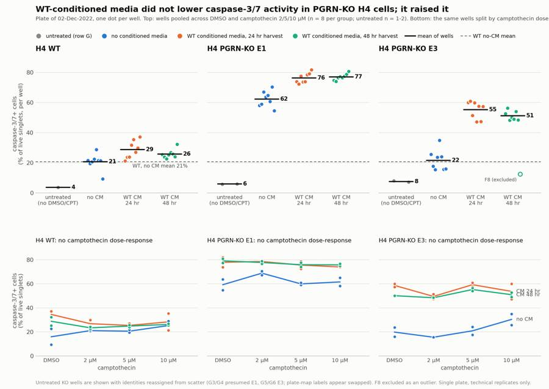
102
tool call · Bash
cd /task; python3 - <<'EOF'
p='/task/work/figure.py'; s=open(p).read()
s=s.replace(""" if j==2:
ax.text(3.12,mu[-1],{'none':'no CM','CM24':'CM 24 hr','CM48':'CM 48 hr'}[k],va='center',ha='left',fontsize=9,color=INK2)
""",""" if j==2:
ax.text(3.12,mu[-1]+{'none':0,'CM24':2.6,'CM48':-2.6}[k],{'none':'no CM','CM24':'CM 24 hr','CM48':'CM 48 hr'}[k],va='center',ha='left',fontsize=9,color=INK2)
""")
s=s.replace("'Plate of 02-Dec-2022, one dot per well. Top: wells pooled across DMSO and camptothecin 2/5/10 µM (n = 8 per group; untreated n = 1-2). Bottom: the same wells split by camptothecin dose.'","'Plate of 02-Dec-2022, one dot per well. Top: wells pooled across DMSO and camptothecin 2/5/10 µM (n = 8 per group; untreated n = 1-2).\\nBottom: the same wells split by camptothecin dose.'")
s=s.replace("fig.text(0.065,0.948,","fig.text(0.065,0.957,").replace("fontsize=9.2,color=INK2,ha='left')","fontsize=9.2,color=INK2,ha='left',va='top')")
s=s.replace("bbox_to_anchor=(0.5,0.925)","bbox_to_anchor=(0.5,0.915)").replace("top=0.86,bottom=0.085","top=0.845,bottom=0.085")
open(p,'w').write(s)
EOF
python3 work/figure.py103
tool call · Read
{
"file_path": "/task/outputs/figure.png"
}104
tool output
(Bash completed with no output)
105
tool output
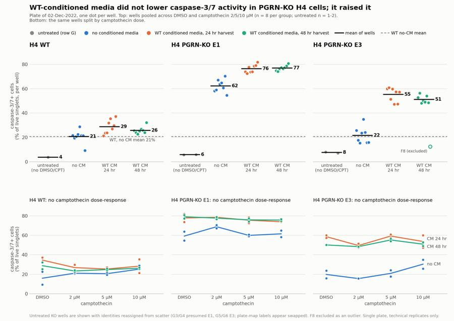
107
tool call · Bash
cd /task; cat > work/answer.py <<'EOF'
import pandas as pd, json
cs=pd.read_csv('/task/outputs/condition_summary.csv').set_index('condition')
fl=pd.read_csv('/task/outputs/flags.csv')
def C(a,b,text,direction,conf,extra=''):
assert a in cs.index and b in cs.index,(a,b)
ma,mb=cs.loc[a,'mean'],cs.loc[b,'mean']
mag=f"{mb-ma:+.1f} percentage points of caspase-3/7+ live singlets ({ma:.1f}% -> {mb:.1f}%; n = {cs.loc[a,'n_wells_used']} vs {cs.loc[b,'n_wells_used']} wells){extra}"
return dict(comparison=text,a=a,b=b,direction=direction,magnitude=mag,confidence=conf)
p=' | all CPT doses pooled'
comps=[
C('E1 | no CM'+p,'E1 | WT CM (24hr+48hr)'+p,'Effect of WT-conditioned media on KO line E1 (the plan\'s question)','increase','medium','; well ranges do not overlap (54.7-70.4 vs 72.4-81.8), Welch p = 4e-05'),
C('E3 | no CM'+p,'E3 | WT CM (24hr+48hr)'+p,'Effect of WT-conditioned media on KO line E3 (the plan\'s question)','increase','high','; well ranges do not overlap (15.4-35.0 vs 47.3-60.9), Welch p = 2e-07; F8 excluded (+29.2 points if included)'),
C('WT | no CM'+p,'WT | WT CM (24hr+48hr)'+p,'Effect of WT-conditioned media on WT cells (specificity control)','increase','low','; small, ranges overlap, +4.9 points if outlier D12 is dropped'),
C('WT | no CM'+p,'E1 | no CM'+p,'KO phenotype without conditioned media: E1 vs WT','increase','high','; Welch p = 3e-10'),
C('WT | no CM'+p,'E3 | no CM'+p,'KO phenotype without conditioned media: E3 vs WT','no_clear_change','medium','; Welch p = 0.76, so E3 was already at WT level before any rescue'),
C('WT | no CM'+p,'E1 | WT CM (24hr+48hr)'+p,'Distance from WT baseline after treatment: E1 + CM vs WT without CM','increase','high','; the gap to WT widened from +41.6 to +56.0 points'),
C('WT | no CM'+p,'E3 | WT CM (24hr+48hr)'+p,'Distance from WT baseline after treatment: E3 + CM vs WT without CM','increase','high','; the gap to WT widened from +0.9 to +32.7 points'),
C('E1 | WT 24hr CM'+p,'E1 | WT 48hr CM'+p,'24 hr vs 48 hr harvest of conditioned media, E1','no_clear_change','medium','; Welch p = 0.67'),
C('E3 | WT 24hr CM'+p,'E3 | WT 48hr CM'+p,'24 hr vs 48 hr harvest of conditioned media, E3','no_clear_change','medium','; Welch p = 0.12'),
C('WT | no CM | DMSO','WT | no CM | CPT 10uM','Camptothecin challenge (assay positive control) in WT without CM','no_clear_change','medium','; duplicates overlap (9.3 and 22.5 vs 21.6 and 28.8), no dose trend across 2/5/10 uM in any line'),
C('E1 | no CM | DMSO','E1 | no CM | CPT 10uM','Camptothecin challenge in E1 without CM','no_clear_change','medium','; duplicates overlap (54.7 and 63.7 vs 58.1 and 64.9)'),
]
ans=dict(
question="Can WT progranulin-conditioned media bring caspase-3/7 activity in H4 PGRN-KO lines (E1, E3) back toward WT levels?",
comparisons=comps,
overall_answer=("no: WT-conditioned media did not lower caspase-3/7 activity in either KO line; it raised it (E1 62.3% -> 76.7%, E3 21.6% -> 53.4% caspase-3/7+ of live singlets, against a WT no-CM level of 20.7%), "
"with no difference between the 24 hr and 48 hr harvests. This shows the spent media as used does not rescue, but it does not test progranulin itself: there was no KO-conditioned or fresh-media-change control and progranulin in the media was not measured."),
assay_verdict="needs_optimisation",
next_action="change_treatment_or_timing",
next_change=dict(
what="How progranulin is delivered to the KO cells (the rescue treatment and its matched control)",
**{"from":"Undiluted spent media from WT H4 cells (24 hr or 48 hr harvest, kept at 4 C for 2-3 days) applied for 24 hr, compared against wells with no conditioned media; no KO-conditioned control and no progranulin measurement"},
to="Recombinant human progranulin titrated into fresh complete media (for example 0, 100, 300, 1000 ng/mL for 24 hr) with a vehicle control given the same wash and media change; if conditioned media is kept, run WT-conditioned next to GRN-KO-conditioned media, both mixed 1:1 with fresh media and with progranulin confirmed by ELISA",
why="Spent media raised caspase-3/7 in every line (WT +6.6, E1 +14.4, E3 +31.7 points), so nutrient depletion or secreted stress factors mask any progranulin benefit and the effect cannot be attributed to progranulin without a progranulin-free matched control. A defined dose in fresh media separates progranulin from spent-media stress."),
excluded_wells=sorted(fl[fl.decision=='exclude'].well),
caveats=[
"Single plate, one experiment: all n are technical wells (duplicates per dose, 8 per pooled group), so p-values describe well-to-well noise only.",
"Conditioned media is confounded with spent media and with plate position (CM in columns 1-8, no CM in columns 9-12); no KO-conditioned or fresh-media-change control, and progranulin in the media was not measured.",
"Camptothecin (2, 5, 10 uM) gave no caspase induction over DMSO in any line, so the assay has no working positive control on this plate; exposure appears to have been only about 4 hr (added the morning of 02-Dec, acquisition from 14:33).",
"Vehicle and handling background is high: DMSO wells without CM read 9-23% (WT) and 55-64% (E1) against 4-8% in untreated row G wells, so the E1 'KO phenotype' here is largely a stress response to treatment handling.",
"E3 without CM (21.6%) was not above WT (20.7%), so for E3 there was no KO phenotype to rescue on this plate.",
"Untreated KO wells G3-G6 appear swapped (G5/G6 have E3 scatter, G3/G4 do not); they were used only as a reference with reassigned identities. F8 was excluded as an outlier; D12 kept with a note.",
"The 2022-11-30 plate map colours rows A-C as one media and rows D-F as the other, while the 2022-12-02 map (used here) splits columns 1-4 and 5-8; the 24 hr vs 48 hr comparison depends on which is right, the CM vs no-CM comparison does not.",
"Channel labels in the FCS files are stale (BL1 labelled AAV-GFP); BL1 was read as CellEvent Caspase-3/7 Green and BL2 as SYTOX AADva
… [465 more characters not shown]108
tool output
E1 | no CM | all CPT doses pooled -> E1 | WT CM (24hr+48hr) | all CPT doses pooled | increase | +14.4 percentage points of caspase-3/7+ live singlets (62.3% -> 76.7%; n = 8 vs 16 wells); well ranges do not overlap (54.7-70.4 vs 72.4-81.8), Welch p = 4e-05 E3 | no CM | all CPT doses pooled -> E3 | WT CM (24hr+48hr) | all CPT doses pooled | increase | +31.7 percentage points of caspase-3/7+ live singlets (21.6% -> 53.4%; n = 8 vs 15 wells); well ranges do not overlap (15.4-35.0 vs 47.3-60.9), Welch p = 2e-07; F8 excluded (+29.2 points if included) WT | no CM | all CPT doses pooled -> WT | WT CM (24hr+48hr) | all CPT doses pooled | increase | +6.6 percentage points of caspase-3/7+ live singlets (20.7% -> 27.3%; n = 8 vs 16 wells); small, ranges overlap, +4.9 points if outlier D12 is dropped WT | no CM | all CPT doses pooled -> E1 | no CM | all CPT doses pooled | increase | +41.6 percentage points of caspase-3/7+ live singlets (20.7% -> 62.3%; n = 8 vs 8 wells); Welch p = 3e-10 WT | no CM | all CPT doses pooled -> E3 | no CM | all CPT doses pooled | no_clear_change | +0.9 percentage points of caspase-3/7+ live singlets (20.7% -> 21.6%; n = 8 vs 8 wells); Welch p = 0.76, so E3 was already at WT level before any rescue WT | no CM | all CPT doses pooled -> E1 | WT CM (24hr+48hr) | all CPT doses pooled | increase | +56.0 percentage points of caspase-3/7+ live singlets (20.7% -> 76.7%; n = 8 vs 16 wells); the gap to WT widened from +41.6 to +56.0 points WT | no CM | all CPT doses pooled -> E3 | WT CM (24hr+48hr) | all CPT doses pooled | increase | +32.7 percentage points of caspase-3/7+ live singlets (20.7% -> 53.4%; n = 8 vs 15 wells); the gap to WT widened from +0.9 to +32.7 points E1 | WT 24hr CM | all CPT doses pooled -> E1 | WT 48hr CM | all CPT doses pooled | no_clear_change | +0.6 percentage points of caspase-3/7+ live singlets (76.4% -> 77.0%; n = 8 vs 8 wells); Welch p = 0.67 E3 | WT 24hr CM | all CPT doses pooled -> E3 | WT 48hr CM | all CPT doses pooled | no_clear_change | -3.9 percentage points of caspase-3/7+ live singlets (55.2% -> 51.3%; n = 8 vs 7 wells); Welch p = 0.12 WT | no CM | DMSO -> WT | no CM | CPT 10uM | no_clear_change | +9.3 percentage points of caspase-3/7+ live singlets (15.9% -> 25.2%; n = 2 vs 2 wells); duplicates overlap (9.3 and 22.5 vs 21.6 and 28.8), no dose trend across 2/5/10 uM in any line E1 | no CM | DMSO -> E1 | no CM | CPT 10uM | no_clear_change | +2.3 percentage points of caspase-3/7+ live singlets (59.2% -> 61.5%; n = 2 vs 2 wells); duplicates overlap (54.7 and 63.7 vs 58.1 and 64.9)
110
agent
Writing the report now, then a final validation pass over all output files.
111
tool call · Bash
cd /task; python3 - <<'EOF'
p='/task/work/answer.py'; s=open(p).read()
s=s.replace('"Camptothecin (2, 5, 10 uM) gave no caspase induction over DMSO in any line, so the assay has no working positive control on this plate; exposure appears to have been only about 4 hr (added the morning of 02-Dec, acquisition from 14:33).",',
'"Camptothecin (2, 5, 10 uM) gave no clear caspase induction over DMSO in any line (at most +9 to +10 points at 10 uM in WT and E3 without CM, within duplicate scatter), so the assay has no working positive control on this plate; exposure appears to have been only about 4 hr (added the morning of 02-Dec, acquisition from 14:33).",')
s=s.replace("so the E1 'KO phenotype' here is largely a stress response to treatment handling.","so if G3/G4 are E1 as presumed, the E1 excess over WT appears only under treatment handling stress.")
open(p,'w').write(s)
EOF
python3 work/answer.py >/dev/null
python3 - <<'EOF'
import pandas as pd
m=pd.read_csv('/task/work/metrics.csv').set_index('well')
P=m[m.index.str[0]!='G']; G=m[m.index.str[0]=='G']
for nm,d in [('plate A-F',P),('row G',G)]:
print(nm, 'events',d.all_events.min(),d.all_events.max(),'cells%',d.pct_cells.min().round(1),d.pct_cells.max().round(1),'sing%',d.pct_sing.min().round(1),d.pct_sing.max().round(1),'live%',d.pct_live.min().round(1),d.pct_live.max().round(1),'singlets n',d.singlets.min(),d.singlets.max(),'live n',d.live.min(),d.live.max())
Q=P.drop(index='F8')
print(Q.groupby(['cell_line',Q.cm.where(Q.cm=='none','CM')])[['casp_live','casp_total','dead','healthy']].mean().round(1))
print(Q.groupby('cell_line').pct_cells.mean().round(1))
EOF112
tool output
plate A-F events 11614 47337 cells% 41.6 78.1 sing% 79.6 94.4 live% 71.1 97.4 singlets n 4722 27427 live n 3460 25038
row G events 15961 35885 cells% 75.3 93.9 sing% 94.2 96.9 live% 94.2 100.0 singlets n 11402 29578 live n 11126 27863
casp_live casp_total dead healthy
cell_line cm
E1 CM 76.7 81.0 18.5 19.0
none 62.3 64.7 6.3 35.3
E3 CM 53.4 60.3 14.8 39.7
none 21.6 26.8 6.8 73.1
WT CM 27.3 34.1 9.8 65.7
none 20.7 29.4 11.1 70.5
cell_line
E1 63.4
E3 52.4
WT 66.0
Name: pct_cells, dtype: float64113
tool call · Write
{
"file_path": "/task/outputs/report.md",
"content": "# Caspase-3/7 conditioned-media plate, H4 WT / PGRN-KO (EXP22004363, acquired 02-Dec-2022)\n\n## Question\n\nCan WT progranulin-conditioned media (CM) bring caspase-3/7 activity in the H4 PGRN-KO lines E1 and E3 back toward WT levels?\n\n**Answer: no.** On this plate, WT-conditioned media raised caspase-3/7 activity in both KO lines instead of lowering it, and the 24 hr and 48 hr harvests behaved the same. The plate does not test progranulin itself, because the media had no progranulin-free matched control.\n\n## Methods\n\n**Data.** 80 FCS 3.1 files from the Attune NxT (wells A1-F12 and G1-G8), acquired 14:33-15:32 at FSC 20 / SSC 290 / BL1 225 / BL2 350. All 80 files were analysed with one gating strategy and no per-well adjustment.\n\n**Channel assignment.** The labels stored in the files are stale (BL1 is labelled `AAV-GFP`). From the plan's reagents and cytometer settings:\n\n| Detector | Stored label | Read as |\n|---|---|---|\n| BL1-A | AAV-GFP | CellEvent Caspase-3/7 Green |\n| BL2-A | AAdvanced livedead | SYTOX AADvanced dead-cell stain |\n\nThe single-stain controls agree with this: G7 (caspase stain only) is bright only along BL1, and G8 (L/D stain only) only in BL2.\n\n**Compensation.** The spillover matrix in the files is the identity. I measured spillover from the single-stain wells and added it to the strategy as `SingleStainComp`:\n\n- CellEvent green into BL2: 0.91 (G7, 626 events with BL1-A > 3000, median ratio 0.907).\n- SYTOX AADvanced into BL1: 0.0003 (G8), set to 0.\n\n**Gates** (saved in `gates.xml`, GatingML 2.0; counts in `counts.csv` come from the reloaded file):\n\n| Population | Parent | Role | Gate |\n|---|---|---|---|\n| `cells` | all_events | cells | Polygon on FSC-A / SSC-A; removes debris (FSC-A < 130k, SSC-A < 60k) and events at the scatter ceiling (\u2265 1.04M) |\n| `singlets` | cells | singlets | Polygon on FSC-A / FSC-H along the single-cell ridge (FSC-H/FSC-A about 0.54, falling to 0.43 for large cells); doublets sit near 0.29 |\n| `live` | singlets | live | Compensated BL2-A < 30,000 (not SYTOX-bright) |\n| `caspase_pos` | live | marker_positive | Compensated BL1-A \u2265 600 |\n| `dead` | singlets | other | Compensated BL2-A \u2265 30,000 |\n| `caspase_pos_total` | singlets | other | Compensated BL1-A \u2265 600, regardless of SYTOX |\n\n- The BL1 cut at 600 leaves 0.23% of unstained singlets (G1) and 0.30% of L/D-only singlets (G8) positive, and sits in the valley of the stained WT histograms (530-600).\n- The BL2 cut at 30,000 sits in the valley between SYTOX-dim and SYTOX-bright cells (25,000-36,000 across groups).\n- Caspase-positive cells are SYTOX-dim (compensated BL2 about 3,000-10,000 against about 800 for negative cells). I kept them inside `live` as early apoptotic cells; only SYTOX-bright cells count as dead.\n\n**Read-out.** Per well: `caspase_pos` as a percentage of `live` singlets. No normalisation. Total caspase-positive cells (% of singlets) and dead cells (% of singlets) are reported as secondary read-outs.\n\n**Conditions.** Layout as in `plate_layout.csv` (2022-12-02 map). Camptothecin (CPT) had no clear effect (see Results), so the main comparison pools DMSO and CPT 2/5/10 \u00b5M wells within each cell line \u00d7 media group (8 wells per group). `condition_summary.csv` also lists every cell line \u00d7 media \u00d7 dose condition (2 wells each). Tests are Welch t-tests across wells.\n\n**Checks.**\n- Counts were reproduced independently from the raw events and matched for all 80 files.\n- Moving the BL1 cut over 450-1000 and the BL2 cut over 20,000-50,000 changes the percentages but not the direction or rank of any comparison.\n- Gating without compensation changes group means by less than 1 point.\n- Acquisition was steady in every well (15.7-16.9 s, largest gap in event time 0.39 s), so no well is flagged for a clog or running dry.\n\n## Results\n\n**Main result** (% caspase-3/7+ of live singlets, mean \u00b1 SD across wells; see `figure.png`):\n\n| Cell line | No CM (n = 8) | WT CM, 24 hr + 48 hr | Change | WT CM 24 hr | WT CM 48 hr |\n|---|---|---|---|---|---|\n| WT | 20.7 \u00b1 5.4 | 27.3 \u00b1 4.7 (n = 16) | +6.6 | 28.7 \u00b1 5.8 | 25.8 \u00b1 2.9 |\n| KO E1 | 62.3 \u00b1 5.2 | 76.7 \u00b1 2.7 (n = 16) | +14.4 | 76.4 \u00b1 3.4 | 77.0 \u00b1 2.1 |\n| KO E3 | 21.6 \u00b1 6.8 | 53.4 \u00b1 4.9 (n = 15) | +31.7 | 55.2 \u00b1 5.7 | 51.3 \u00b1 3.1 (n = 7) |\n\n- **CM raised caspase activity in both KO lines.** The well ranges do not overlap: E1 54.7-70.4% without CM against 72.4-81.8% with CM (p = 4e-05); E3 15.4-35.0% against 47.3-60.9% (p = 2e-07).\n- **The gap to WT widened.** Against the WT no-CM level of 20.7%, E1 moved from +41.6 to +56.0 points and E3 from +0.9 to +32.7 points.\n- **24 hr and 48 hr harvests did not differ** (E1 +0.6 points, p = 0.67; E3 \u22123.9 points, p = 0.12).\n- **WT cells responded only slightly** (+6.6 points, p = 0.012; +4.9 points without the outlier D12), so the spent media is much harder on the KO lines than on WT.\n- **Secondary read-outs agree.** With CM, dead cells rose from 6.3% to 18.5% of singlets in E1 and from 6.8% to 14.8% in E3 (WT 11.1% to 9.8%). Total caspase-positive cells rose from 64.7% to 81.0% (E1) and 26.8% to 60.3% (E3).\n\n**KO phenotype without CM.** E1 was far above WT (62.3% against 20.7%). E3 was not (21.6%), so E3 had no excess to rescue on this plate.\n\n**Camptothecin did not work as a challenge.** There is no dose-response in any line or media group (bottom row of the figure). Without CM, DMSO against 10 \u00b5M reads 15.9% against 25.2% in WT, 59.2% against 61.5% in E1 and 19.8% against 30.3% in E3, all within duplicate scatter. Two observations suggest why:\n- Exposure was short. CM went on at 9 AM on 01-Dec, CPT was added \"after 24 hours\", and acquisition started at 14:33 on 02-Dec, which leaves about 4 hr of CPT after harvest and staining time. This is my reading of the timeline; the plan does not
… [6,322 more characters not shown]114
tool output
File created successfully at: /task/outputs/report.md (file state is current in your context — no need to Read it back)
115
tool call · Bash
cd /task; cat > work/validate.py <<'EOF'
import pandas as pd, json, flowkit as fk, numpy as np, re, warnings
warnings.filterwarnings('ignore')
lay=pd.read_csv('/task/inputs/plate_layout.csv')
gs=fk.parse_gating_xml('/task/outputs/gates.xml'); print('gates',gs.get_gate_ids(), 'comp', gs.comp_matrices.keys() if hasattr(gs,'comp_matrices') else '')
c=pd.read_csv('/task/outputs/counts.csv'); assert list(c.columns)==['file','well','population','role','parent','count','pct_of_parent']
assert c.file.nunique()==80 and (c.groupby('file').population.apply(lambda x: tuple(x)).nunique()==1)
print(c.groupby(['population','role','parent']).size())
for role in ['cells','singlets','live','marker_positive']: assert c[c.role==role].population.nunique()==1
ae=c[c.population=='all_events']; assert ae.pct_of_parent.isna().all() and (ae.parent=='none').all()
piv=c.pivot(index='file',columns='population',values='count')
for _,r in c[c.population!='all_events'].iterrows():
assert abs(r.pct_of_parent-100*r['count']/piv.loc[r.file,r.parent])<1e-3
# recount 5 random files from saved gates
for f in lay.file.sample(6,random_state=1):
res=gs.gate_sample(fk.Sample('/task/inputs/raw/'+f)).report.set_index('gate_name')['count']
for p in ['cells','singlets','live','caspase_pos','dead','caspase_pos_total']: assert int(res[p])==piv.loc[f,p],(f,p)
fl=pd.read_csv('/task/outputs/flags.csv',keep_default_na=False); assert list(fl.columns)==['file','well','issue_type','evidence','decision'] and len(fl)==80 and fl.file.nunique()==80
assert set(fl.issue_type)<= {'none','clog','ran_dry','too_few_events','saturation','bad_control','mislabel','other'}
assert set(fl.decision)<={'keep','keep_with_note','exclude'}
assert (fl[fl.issue_type=='none'].decision=='keep').all()
assert fl[fl.issue_type!='none'].evidence.apply(lambda e: bool(re.search(r'\d',e))).all()
cs=pd.read_csv('/task/outputs/condition_summary.csv',keep_default_na=False); assert list(cs.columns)==['condition','wells','n_wells_used','mean','sd','metric_definition','normalisation_applied']
assert cs.condition.is_unique
live=c[c.population=='caspase_pos'].set_index('well').pct_of_parent
for _,r in cs.iterrows():
ws=r.wells.split(';'); assert len(ws)==r.n_wells_used and set(ws)<=set(lay.well)
v=live[ws]; assert abs(v.mean()-float(r['mean']))<0.01,(r.condition)
assert (r.sd=='')==(len(ws)==1)
if len(ws)>1: assert abs(v.std(ddof=1)-float(r.sd))<0.01
excl=set(fl[fl.decision=='exclude'].well); assert not any(excl & set(r.wells.split(';')) for _,r in cs.iterrows())
a=json.load(open('/task/outputs/answer.json'))
assert set(a['excluded_wells'])==excl
for cmp in a['comparisons']:
assert cmp['a'] in set(cs.condition) and cmp['b'] in set(cs.condition) and cmp['direction'] in ('increase','decrease','no_clear_change') and cmp['confidence'] in ('high','medium','low')
assert a['overall_answer'].split(':')[0] in ('yes','partial','no'); assert set(a['next_change'])=={'what','from','to','why'}
print(a['assay_verdict'],a['next_action'],a['excluded_wells'])
rep=open('/task/outputs/report.md').read()
heads=re.findall(r'^## .*$',rep,flags=re.M); print(heads)
import os; print(sorted(os.listdir('/task/outputs')))
print('ALL OK')
EOF
python3 work/validate.py116
tool output
gates [('cells', ('root',)), ('singlets', ('root', 'cells')), ('live', ('root', 'cells', 'singlets')), ('caspase_pos', ('root', 'cells', 'singlets', 'live')), ('dead', ('root', 'cells', 'singlets')), ('caspase_pos_total', ('root', 'cells', 'singlets'))] comp dict_keys(['SingleStainComp'])
population role parent
all_events other none 80
caspase_pos marker_positive live 80
caspase_pos_total other singlets 80
cells cells all_events 80
dead other singlets 80
live live singlets 80
singlets singlets cells 80
dtype: int64
needs_optimisation change_treatment_or_timing ['F8']
['## Question', '## Methods', '## Results', '## Conclusion', '## Caveats', '## Recommendation']
['answer.json', 'condition_summary.csv', 'counts.csv', 'figure.png', 'flags.csv', 'gates.xml', 'report.md']
ALL OK118
tool call · Bash
cd /task; python3 - <<'EOF' p='/task/outputs/report.md'; s=open(p).read() a="- Gating without compensation changes group means by less than 1 point." b="- Gating without compensation changes group means by about 1 point or less." c="(25,000-36,000 across groups)"; d="(about 20,000-36,000 in most groups; E1 without CM has too few dead cells to show one)" assert a in s and c in s open(p,'w').write(s.replace(a,b).replace(c,d)) EOF python3 work/validate.py | tail -3; ls -la outputs; ls -la inputs | head -5
119
tool output
['## Question', '## Methods', '## Results', '## Conclusion', '## Caveats', '## Recommendation'] ['answer.json', 'condition_summary.csv', 'counts.csv', 'figure.png', 'flags.csv', 'gates.xml', 'report.md'] ALL OK total 364 drwxr-xr-x 2 root root 4096 Nov 10 19:25 . drwxr-xr-x 5 root root 4096 Nov 10 19:14 .. -rw-r--r-- 1 root root 8093 Nov 10 19:24 answer.json -rw-r--r-- 1 root root 15423 Nov 10 19:23 condition_summary.csv -rw-r--r-- 1 root root 45723 Nov 10 19:19 counts.csv -rw-r--r-- 1 root root 250817 Nov 10 19:23 figure.png -rw-r--r-- 1 root root 13618 Nov 10 19:23 flags.csv -rw-r--r-- 1 root root 5109 Nov 10 19:19 gates.xml -rw-r--r-- 1 root root 12091 Nov 10 19:26 report.md total 28 dr-xr-xr-x 3 root root 4096 Nov 10 16:58 . drwxr-xr-x 5 root root 4096 Nov 10 19:14 .. -r--r--r-- 1 root root 6547 Nov 10 16:58 plan.md -r--r--r-- 1 root root 6889 Nov 10 16:58 plate_layout.csv
121
tool call · Bash
cd /task; grep -n "about 1 point or less\|in most groups" outputs/report.md; wc -l outputs/report.md
122
tool output
39:- The BL2 cut at 30,000 sits in the valley between SYTOX-dim and SYTOX-bright cells (about 20,000-36,000 in most groups; E1 without CM has too few dead cells to show one). 49:- Gating without compensation changes group means by about 1 point or less. 120 outputs/report.md
123
agent
The analysis is complete: the answer to the plan's question is **no**. WT-conditioned media did not bring caspase-3/7 activity in either KO line toward WT levels; it raised it. All seven deliverables are in `/task/outputs/` and pass a format and consistency check against the spec.
## Result
Read-out is caspase-3/7 positive cells as a percentage of live singlets, per well, pooled across DMSO and camptothecin doses (8 wells per group):
| Cell line | No conditioned media | WT-conditioned media (24 hr + 48 hr) | Change |
|---|---|---|---|
| WT | 20.7% | 27.3% | +6.6 |
| KO E1 | 62.3% | 76.7% | +14.4 |
| KO E3 | 21.6% | 53.4% | +31.7 |
- **Both KO lines moved away from WT.** The well ranges with and without conditioned media do not overlap in either line, and dead cells rose too.
- **24 hr and 48 hr harvests behaved the same** (E1 +0.6 points, E3 −3.9 points).
- **This is a negative result for the spent media, not for progranulin.** There was no progranulin-free matched media and progranulin was not measured, so spent-media stress cannot be separated from any progranulin effect.
## What limits the plate
- **Camptothecin did not work as a challenge.** There is no dose-response in any line. Exposure looks to have been only about 4 hr; that is my reading of the timeline, the plan does not state it.
- **Vehicle and handling background is high.** Untreated row G wells read 4–8%, while DMSO wells without conditioned media read 9–23% (WT) and 55–64% (E1).
- **E3 had no excess to rescue.** Without conditioned media it sat at the WT level.
- **One plate, technical replicates only**, with conditioned media confined to columns 1–8.
## Decisions I made that you should know about
- **Channels:** BL1 is read as CellEvent Caspase-3/7 Green (the file label says `AAV-GFP`) and BL2 as SYTOX AADvanced. I compensated green spillover into BL2 at 0.91, measured from the caspase-only well.
- **Live gate:** caspase-positive cells are SYTOX-dim, and I kept them in the live gate as early apoptotic; only SYTOX-bright cells count as dead. Moving either threshold changes the percentages but not the direction of any comparison.
- **F8 excluded:** it reads 12.4% against 50.1% in its duplicate and 47–61% in the other 15 E3 wells with conditioned media. Including it changes no conclusion.
- **G3–G6 appear swapped:** G5/G6 are labelled E1 but have E3 scatter, and G3/G4 are labelled E3 but do not. I kept them as reference only, with reassigned identities; G3/G4 as E1 is a presumption, since scatter cannot separate E1 from WT.
- **Other flags:** D12 is a low outlier kept with a note, and the 23 other E3 wells are noted for 3.6–7.5% of events at the scatter ceiling.
- **Plate-map disagreement:** the 30-Nov map splits the two media by rows, the 02-Dec map by columns. I used the 02-Dec map as in `plate_layout.csv`; only the 24 hr vs 48 hr comparison depends on this.
## Recommendation
Assay verdict is `needs_optimisation`; next action is `change_treatment_or_timing`. Deliver progranulin as recombinant protein titrated into fresh media with a wash-matched vehicle control. If conditioned media is kept, run WT-conditioned next to KO-conditioned media, both diluted 1:1 with fresh media and with progranulin confirmed by ELISA. The report also lists secondary fixes: a longer camptothecin exposure, a low fixed DMSO percentage, stain controls for the KO lines, and an interleaved layout with at least three wells per condition.
The figure's colour palette is a documented colour-blind-safe set, but I could not run the automated check here (no Node.js); each group is also labelled on the axis.
Files are in `/task/outputs/`:
- `report.md`
- `figure.png`
- `answer.json`
- `condition_summary.csv`
- `flags.csv`
- `counts.csv`
- `gates.xml`
final result
The analysis is complete: the answer to the plan's question is **no**. WT-conditioned media did not bring caspase-3/7 activity in either KO line toward WT levels; it raised it. All seven deliverables are in `/task/outputs/` and pass a format and consistency check against the spec. ## Result Read-out is caspase-3/7 positive cells as a percentage of live singlets, per well, pooled across DMSO and camptothecin doses (8 wells per group): | Cell line | No conditioned media | WT-conditioned media (24 hr + 48 hr) | Change | |---|---|---|---| | WT | 20.7% | 27.3% | +6.6 | | KO E1 | 62.3% | 76.7% | +14.4 | | KO E3 | 21.6% | 53.4% | +31.7 | - **Both KO lines moved away from WT.** The well ranges with and without conditioned media do not overlap in either line, and dead cells rose too. - **24 hr and 48 hr harvests behaved the same** (E1 +0.6 points, E3 −3.9 points). - **This is a negative result for the spent media, not for progranulin.** There was no progranulin-free matched media and progranulin was not measured, so spent-media stress cannot be separated from any progranulin effect. ## What limits the plate - **Camptothecin did not work as a challenge.** There is no dose-response in any line. Exposure looks to have been only about 4 hr; that is my reading of the timeline, the plan does not state it. - **Vehicle and handling background is high.** Untreated row G wells read 4–8%, while DMSO wells without conditioned media read 9–23% (WT) and 55–64% (E1). - **E3 had no excess to rescue.** Without conditioned media it sat at the WT level. - **One plate, technical replicates only**, with conditioned media confined to columns 1–8. ## Decisions I made that you should know about - **Channels:** BL1 is read as CellEvent Caspase-3/7 Green (the file label says `AAV-GFP`) and BL2 as SYTOX AADvanced. I compensated green spillover into BL2 at 0.91, measured from the caspase-only well. - **Live gate:** caspase-positive cells are SYTOX-dim, and I kept them in the live gate as early apoptotic; only SYTOX-bright cells count as dead. Moving either threshold changes the percentages but not the direction of any comparison. - **F8 excluded:** it reads 12.4% against 50.1% in its duplicate and 47–61% in the other 15 E3 wells with conditioned media. Including it changes no conclusion. - **G3–G6 appear swapped:** G5/G6 are labelled E1 but have E3 scatter, and G3/G4 are labelled E3 but do not. I kept them as reference only, with reassigned identities; G3/G4 as E1 is a presumption, since scatter cannot separate E1 from WT. - **Other flags:** D12 is a low outlier kept with a note, and the 23 other E3 wells are noted for 3.6–7.5% of events at the scatter ceiling. - **Plate-map disagreement:** the 30-Nov map splits the two media by rows, the 02-Dec map by columns. I used the 02-Dec map as in `plate_layout.csv`; only the 24 hr vs 48 hr comparison depends on this. ## Recommendation Assay verdict is `needs_optimisation`; next action is `change_treatment_or_timing`. Deliver progranulin as recombinant protein titrated into fresh media with a wash-matched vehicle control. If conditioned media is kept, run WT-conditioned next to KO-conditioned media, both diluted 1:1 with fresh media and with progranulin confirmed by ELISA. The report also lists secondary fixes: a longer camptothecin exposure, a low fixed DMSO percentage, stain controls for the KO lines, and an interleaved layout with at least three wells per condition. The figure's colour palette is a documented colour-blind-safe set, but I could not run the automated check here (no Node.js); each group is also labelled on the axis. Files are in `/task/outputs/`: - `report.md` - `figure.png` - `answer.json` - `condition_summary.csv` - `flags.csv` - `counts.csv` - `gates.xml`